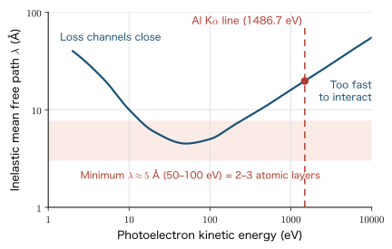
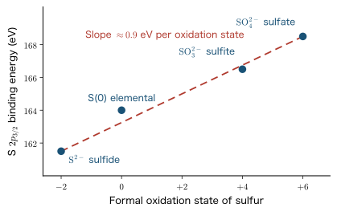
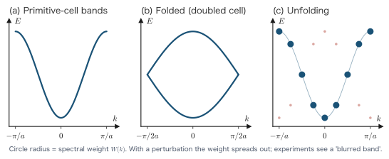

Chapter 18First-Principles Calculation of Spectra
In the preceding seventeen chapters we have organized the many-electron problem into the form of density functional theory (Parts I–III), read it as the band structure of solids (Part IV), prepared the techniques for actually solving it on a computer (Part V), set the nuclei in motion (Chapter 16), and made a current flow (Chapter 17). In the end, however, it is experiment that decides whether a theory is correct. And the representative experiments that look directly into electronic structure are spectroscopy—methods in which light is shone on a material and the emitted electrons, or the transmitted or reflected light, are measured.
The subject of this chapter is to translate the calculated electronic structure into “quantities that can be compared directly with experiment.” There are four quantities to translate. They are X-ray photoelectron spectroscopy (XPS), which knocks core electrons out into the vacuum; X-ray absorption near-edge structure (XANES/NEXAFS), which lifts core electrons into unoccupied states; angle-resolved photoemission spectroscopy (ARPES), which knocks valence electrons out into the vacuum; and ultraviolet–visible–near-infrared absorption (UV-Vis-NIR), which lifts valence electrons into the conduction band. For each of them we pin down, at the level of equations, what the experiment actually measures, what must be computed, and how far DFT, a ground-state theory, can go.
This chapter is also the final chapter of the book. In Section 18.9 we look at an actual workflow in which the structure of a new two-dimensional material is determined by matching several spectroscopic quantities against one another. A single observable does not fix a structure, and only a model that can explain all the spectroscopic quantities simultaneously survives—this methodology is precisely the reason first-principles calculations team up with experiment. Then, in Section 18.10, we look back over the whole book, sketch the map that extends beyond ground-state DFT, and lay down our pen.
- A unified organization of the four kinds of electronic transitions (XPS, XANES, ARPES, UV-Vis-NIR)
- Conservation of energy in the photoelectric effect, and the correct treatment of the work function and the chemical potential
- The $\Delta$SCF formulation of the core-level binding energy: the complete derivation of $E_B = E^{(0)}(N{-}1) - E^{(0)}(N) + \mu_0$
- The integral representation $E_B = -\int_0^1\varepsilon_c(n)\dd n$ from Janak's theorem, and an error estimate for Slater's transition-state approximation
- Techniques for localizing the core hole (the penalty functional) and for eliminating the electrostatic divergence of a charged cell (the exact Coulomb cutoff)
- An interpretive framework that decomposes the chemical shift into “valence charge + Madelung potential + relaxation”
- The Gunnarsson–Lundqvist argument: why DFT can be used for the lowest state of each symmetry class
- The derivation of the dipole selection rule $\Delta l = \pm1$, and the mechanism by which XANES reflects the local partial density of states
- The kinematics of ARPES, and the unfolding weight $W_{\bm{K}J}(\kk)$ that disentangles the bands of a supercell
- The complete derivation of the independent-particle-approximation dielectric function $\varepsilon_2(\omega)$, the Kubo–Greenwood formalism, and the Kramers–Kronig relations
- A workflow for determining a structure by matching several spectroscopic quantities
In this chapter, too, we use Hartree atomic units ($\hbar = m_e = e = 4\pi\varepsilon_0 = 1$, Chapter 1) as the basic system. In the world of spectroscopy, however, eV is conventionally used, so at key points we also give the conversion to eV (1 hartree $= 27.2114$ eV, 1 rydberg $= 13.6057$ eV). Lengths are basically in bohr (1 bohr $= 0.52918$ Å), and ångström is used when comparing with experimental values. In Section 18.8, which deals with the electromagnetic field, we also give the expressions in Gaussian units (cgs) in order to make explicit where the factors of $4\pi$ are placed. For the conversion between photon energy and wavelength, we use the following relation, which is convenient to remember:
$$ \lambda\,[\text{Å}] \times E\,[\mathrm{eV}] = 12398 $$(visible light at $2$ eV corresponds to $6200$ Å, the carbon K edge at $285$ eV to $43.5$ Å, and the Al K$\alpha$ line at $1486.7$ eV to $8.34$ Å). These numbers will matter in Sections 18.6 and 18.8, when we judge the validity of the dipole approximation.
18.1 Four Kinds of Electronic Transitions and Spectroscopies
There are countless names for spectroscopic methods, but from the standpoint of electronic-structure calculation, the one-electron transitions induced by light can be classified by just two things: where the initial state is and where the final state is. The initial state is either a “core shell” or the “valence band,” and the final state is either the “vacuum (outside the sample)” or an “unoccupied state inside the material.” This $2\times2$ classification is the structure of the whole chapter.
Let us organize each arrow by three items: the required photon energy, the physical quantity that can be measured, and the quantity that must be calculated.
| Spectroscopy | Transition | Photon energy | Quantity measured in experiment | Quantity obtained by calculation |
|---|---|---|---|---|
| XPS (X-ray photoelectron spectroscopy) | core → vacuum | $10^2$–$10^4$ eV | core-level binding energy $E_B$ and its chemical shift | total-energy difference between the final state with a core hole and the ground state |
| XANES / NEXAFS | core → unoccupied state | $10^2$–$10^4$ eV | fine structure near the absorption edge | unoccupied local partial density of states in the presence of the core hole, and dipole matrix elements |
| UPS / ARPES | valence band → vacuum | $10$–$10^2$ eV | relation between $E_B$ and the in-plane wave vector $k_\parallel$ (band dispersion) | band structure $\varepsilon_n(\kk)$; for a supercell, the unfolded spectral function |
| UV-Vis-NIR absorption | valence band → conduction band | $0.1$–$6$ eV | absorption coefficient, reflectivity, refractive index | complex dielectric function $\varepsilon(\omega)$ (sum of interband transition matrix elements) |
Look at the rightmost column of this table. Only XPS requires a difference of total energies; the other three can be written in terms of one-electron quantities (eigenvalues and matrix elements). This difference is essential. In XPS one electron is removed—the number of electrons changes—whereas in the other three the number of electrons in the system either does not change (XANES, UV-Vis), or, even if it does change, only one electron is removed from the “sea of electrons” that is the valence band and the field of the system hardly changes (ARPES). When an electron is removed from a core shell, the remaining electrons are drawn all at once toward the vacancy, and the effective potential changes by as much as several tens of eV. To treat this large relaxation, one-electron eigenvalues are not enough; the difference of total energies must be calculated head-on. Sections 18.2–18.5 revolve around this single point.
Physical Meaning: Why organize by “four arrows”?
Catalogs of experimental instruments list a great many names: XPS, ESCA, UPS, ARPES, NEXAFS, XANES, EXAFS, EELS, UV-Vis, ellipsometry, and so on. From the standpoint of electronic-structure calculation, however, the only information needed is “from which level, and to where, does the electron move?” If we classify by the starting point and end point of the transition rather than by the name of the instrument, the quantity to be calculated is uniquely determined. For example, electron energy-loss spectroscopy (EELS) sees the same transitions as XANES/UV-Vis absorption, except that it uses fast electrons instead of light, so it can be treated in the same framework in calculations. Conversely, even under the same name “photoelectron spectroscopy,” XPS, which probes core levels, and ARPES, which probes the valence band, differ completely in the nature of their computational difficulty.
18.2 Fundamentals of XPS: What Can Be Measured?
In this section we put the experimental side in order before turning to calculations. What does XPS measure? Why is it surface sensitive? Why can it identify elements? And why do the peaks of the same element shift depending on the chemical environment? Unless we settle these points, we will not know what quantity the formulas derived in the next section should be compared with.
18.2.1 The photoelectric effect and conservation of energy
When light of frequency $\nu$ strikes a material, electrons are ejected. This is the photoelectric effect, and photoelectron spectroscopy measures the kinetic energy of the ejected electrons (photoelectrons). In a naive picture, the photon energy $h\nu$ is used to free the electron from its binding, and the remainder becomes kinetic energy:
$$ \begin{equation} E_{\mathrm{kin}} = h\nu - E_B - \phi . \label{eq:18-ebind-exp} \end{equation} $$Here $E_B$ is the binding energy and $\phi$ is the work function. Solving this equation for $E_B$ gives
$$ \begin{equation} E_B = h\nu - E_{\mathrm{kin}} - \phi \label{eq:18-eb-def} \end{equation} $$which is the prescription for determining $E_B$ experimentally. The photon energy $h\nu$ is known ($1486.7$ eV for a laboratory Al K$\alpha$ line, $1253.6$ eV for Mg K$\alpha$, and variable for synchrotron radiation), $E_{\mathrm{kin}}$ is the measured quantity, and $\phi$ is fixed by calibrating the apparatus.
There is, however, a pitfall in how this $\phi$ is treated. The “work function” is the work required to take an electron from inside the system to a state at rest in vacuum, and its meaning changes depending on what we take as the reference. In a metal, the top of the occupied levels is sharply fixed at the Fermi level, so we can define $\phi \equiv E_{\mathrm{vac}} - \mu$ ($\mu$ is the chemical potential $=$ the Fermi level). In an insulator or a molecule, on the other hand, the chemical potential lies somewhere inside the band gap, and it moves easily with impurities, defects, or surface adsorption. Moreover, if the sample is an insulator, the sample becomes positively charged by the amount of the departed photoelectrons, subsequent photoelectrons are decelerated, and the peaks appear shifted toward higher binding energy (charging).
In experiments this is avoided by the following clever arrangement. The sample and the probe (the electron energy analyzer) are connected electrically (ohmic contact). Electrons can then be exchanged freely between the two, and in thermal equilibrium their chemical potentials coincide. From then on, the binding energy is measured with respect to this common chemical potential. This situation is drawn in Figure 18.2.
Let us write down as an equation an important consequence that can be read off from Figure 18.2. An electron that has left the sample is accelerated or decelerated by the contact potential difference between the sample and the probe. Therefore the “kinetic energy just above the sample surface” and the “kinetic energy $K_{\mathrm{spec}}$ measured inside the probe” are different. The total energy of the photoelectron (kinetic energy $+$ the potential energy at that location), however, is conserved. Let $V_{\mathrm{spec}}$ denote the potential energy of an electron at rest inside the probe; this equals the vacuum level of the probe and lies above the common chemical potential $\mu$ by the work function $\phi_{\mathrm{spec}}$ of the probe:
$$ \begin{equation} V_{\mathrm{spec}} = \mu + \phi_{\mathrm{spec}} . \label{eq:18-vspec} \end{equation} $$This is the key point. The work function $\phi_{\mathrm{samp}}$ of the sample appears nowhere. Whether the vacuum level on the sample side is high or low, the electron is accelerated or decelerated by the contact potential difference and the accounts balance, so that in the end the kinetic energy is measured with respect to the vacuum level of the probe. Hence the $\phi$ in Eq. \eqref{eq:18-eb-def} is, properly speaking, $\phi_{\mathrm{spec}}$. The calibration of the apparatus (measuring the Fermi edge of a standard sample) is nothing other than the task of determining this $\phi_{\mathrm{spec}}$.
18.2.2 Surface sensitivity: the inelastic mean free path
The second characteristic of XPS is its extreme surface sensitivity. The X-rays themselves penetrate matter to a depth of the order of $\mu$m. However, a photoelectron generated deep inside suffers inelastic scattering such as plasmon excitation and electron–hole pair creation before reaching the surface, loses energy, and does not appear at its original peak position (it becomes background). Therefore only photoelectrons generated in a very shallow region near the surface can emerge “with their original energy intact.”
What governs this depth is the inelastic mean free path (IMFP) $\lambda$. The probability that a photoelectron generated at depth $z$ reaches the surface without inelastic scattering is $\exp(-z/\lambda\cos\theta)$ ($\theta$ is the escape angle measured from the surface normal), and $95\,\%$ of the signal comes from depths down to $3\lambda\cos\theta$.
When $\lambda$ is plotted as a function of kinetic energy, a universal curve appears that is surprisingly independent of the material (Figure 18.3). It is a U-shaped curve that takes a minimum value of $4$–$6$ Å near $50$–$100$ eV and increases on both sides. The origin of this shape can be understood as follows. The main energy-loss channel is the collective excitation (plasmon) of the valence-electron system, and its cross section is proportional to the loss function $\mathrm{Im}\bigl[-1/\varepsilon(q,\omega)\bigr]$:
$$ \begin{equation} \frac{1}{\lambda} \;\propto\; \int \frac{\dd q}{q}\int \dd\omega\; \mathrm{Im}\!\left[\frac{-1}{\varepsilon(q,\omega)}\right] , \label{eq:18-imfp} \end{equation} $$where $\varepsilon(q,\omega)$ is the dielectric function of the material (we will calculate this quantity head-on in Section 18.8). On the high-energy side, the electron is so fast that the time during which it interacts is short, so the cross section drops and $\lambda$ increases ($\lambda \propto E^{1/2}$ or so). On the low-energy side, when the electron energy falls below the plasmon excitation energy ($10$–$20$ eV), that loss channel closes, so $\lambda$ again increases. A minimum value appears between the two. Because the rough form of the dielectric function is similar in every solid (the valence-electron densities do not differ that much), the curve is “universal.”

Physical Meaning: Surface sensitivity is both a strength and a weakness
A value of $\lambda \approx 5$–$25$ Å means that XPS carries information only from the top few atomic layers of the surface. For surface science this is the greatest weapon, and it allows us to pinpoint the chemical states of adsorbed molecules, oxide films, and interfaces. When comparing with calculations, however, care is needed. A core-level binding energy calculated for a bulk unit cell and the value for an atom in the first surface layer differ by several hundred meV to about $1$ eV (surface atoms have lower coordination numbers, and their charge distributions and relaxation also differ). Therefore, when comparing with the “experimental value,” the correct procedure is to calculate the near-surface sites separately with a slab model and add them up with depth weights given by $\lambda$. In the case study of Section 18.9, it is precisely this distinction that decides the structure determination.
18.2.3 Element selectivity and chemical shifts
The energy of a core level is determined almost entirely by the nuclear charge $Z$. For the $1s$ level, a rough hydrogen-like estimate gives $E_B \approx Z_{\mathrm{eff}}^2/2$ hartree, which deepens rapidly with $Z$. In fact, the $1s$ binding energies are clearly separated element by element: C: $285$ eV, N: $400$ eV, O: $533$ eV, F: $686$ eV. Therefore, by looking at the positions where peaks stand in the spectrum, we can tell immediately which elements are present. This is element selectivity (however, hydrogen and helium have no core shell, so they cannot be detected by this method). Furthermore, the peak area is proportional to the number of atoms of that element (weighted by the photoionization cross section), so quantitative analysis is also possible.
From here on is the main subject of this chapter. Even for the same element, the binding energy shifts by several eV if the chemical environment differs. This is called a chemical shift. As a classic example, take ethyl trifluoroacetate $\mathrm{CF_3\text{-}CO\text{-}O\text{-}CH_2\text{-}CH_3}$. This molecule has four carbon atoms, and all have different chemical environments. The measured C $1s$ spectrum splits into four peaks, which, in order of increasing binding energy, are
| Carbon site | Bonding partners | C $1s$ binding energy (approx.) | Relative shift |
|---|---|---|---|
| $\mathrm{CH_3}$ | C, H | $291.2$ eV | $0$ (reference) |
| $\mathrm{CH_2}$ | O, C, H | $293.4$ eV | $+2.2$ eV |
| $\mathrm{C{=}O}$ | O, O, C | $295.7$ eV | $+4.5$ eV |
| $\mathrm{CF_3}$ | F, F, F, C | $298.9$ eV | $+7.7$ eV |
These are the values. The ordering is clear. The more a carbon atom is surrounded by highly electronegative atoms (F, O), the more of its valence electrons are drawn away and the more positively charged it becomes, and its core electrons are bound correspondingly more strongly to the nucleus. The carbon in $\mathrm{CF_3}$ has its electrons pulled by three fluorine atoms and is the most positively charged, so its binding energy is the largest. Similarly, the silicon $2p$ level lies at $99.4$ eV in elemental silicon ($\mathrm{Si^0}$) and at $103.4$ eV in silicon dioxide ($\mathrm{Si^{4+}}$), a shift as large as $4$ eV, and this difference is used to quantify the thickness of an oxide film and the chemical state of an interface.
We will translate this qualitative picture into quantitative equations later (Section 18.5). What we need to grasp now is that the chemical shift has two origins.
- Initial-state effect: In the ground state before the light is applied, the energy of the core orbital itself is shifted by the chemical environment. When the valence charge on an atom decreases, the screening of the core electrons weakens and the core level becomes deeper. In addition, the electrostatic potential created by the surrounding ions (the Madelung potential) also shifts the core level uniformly.
- Final-state effect: At the moment a vacancy is created in the core shell, the surrounding valence electrons are attracted to its positive charge and screen the vacancy. This relaxation lowers the energy of the final state, and the binding energy becomes smaller by the relaxation energy. How effective the screening is depends on the environment (in a metal the valence electrons move easily and the relaxation is large; in an insulator it is small), so this too contributes to the chemical shift.
Separating the two is the key to interpreting XPS, and for that purpose the final state must actually be calculated. We formulate this in the next section.
Supplement: Other causes of core-peak splitting
Besides the chemical shift, there are three other causes for a core peak to split into several lines. When interpreting an experimental spectrum, it is important not to confuse them.
- Spin-orbit interaction. In the core shell the spin-orbit interaction is large because of the strong electric field near the nucleus, and a level with $l \ge 1$ splits into two lines with total angular momentum $j = l \pm 1/2$. The intensity ratio is determined by the ratio of the degeneracies $2j+1$; for $j = l-1/2$ and $j = l+1/2$, $$ I_{j=l-1/2} : I_{j=l+1/2} = 2l : 2(l+1) $$ that is, for the $p$ level ($l=1$), $2p_{1/2} : 2p_{3/2} = 1:2$, and for the $d$ level ($l=2$), $3d_{3/2}:3d_{5/2} = 2:3$. The splitting of Si $2p$ is about $0.6$ eV, which can be clearly resolved in high-resolution measurements.
- Magnetic exchange splitting. When a vacancy is created in the core shell, the remaining core electron has an unpaired spin. In a magnetic material the energy splits because of the exchange interaction with the net spin of the valence electrons. Typical examples are O $1s$ of the $\mathrm{O_2}$ molecule ($S=1$) and Mn $3s$ of $\mathrm{MnF_2}$ and $\mathrm{MnO}$. The closed-shell $\mathrm{N_2}$ does not split.
- Chemical-potential shift. As stated in Section 18.2.1, the $\mu$ of a semiconductor or insulator lies in the gap and moves with doping, defects, surface adsorption, and band bending. A binding energy measured relative to $\mu$ shifts as a whole by that amount. In the same semiconductor, the core peaks of $p$-type and $n$-type samples can differ by an amount close to the gap width; this is not a change of the electronic structure but a movement of the reference.
18.3 Theory of Core-Level Binding Energies
In this section we translate the $E_B$ measured in experiments into a quantity that can be obtained by first-principles calculation. To state the conclusion first, $E_B$ is the total-energy difference between the final state with a core hole and the ground state. We derive this seemingly obvious statement carefully from the energy diagram of Figure 18.2, and then clarify how the choice of reference differs between metals and insulators. Finally, using Janak's theorem of Chapter 10, we reach the same result by an alternative route and estimate the order of the error of Slater's transition-state approximation.
18.3.1 From conservation of energy to $\Delta$SCF
First we fix the notation. Let $E_i(N)$ be the energy of the ground state (initial state) of the $N$-electron system, and $E_f(N-1)$ the energy of the $N-1$ electron system with a vacancy in the core orbital $c$ (final state). The conservation of total energy in Figure 18.2 reads as follows.
Derivation: Relation between the measured quantity and the total-energy difference
Step 1: Write down the conservation of energy. Before the light is applied, the system is “an $N$-electron sample $+$ a photon”, and its energy is $E_i(N) + h\nu$. After photoelectron emission it is “an $N-1$ electron sample (with a core vacancy) $+$ one electron moving inside the probe”, and its energy is $E_f(N-1) + V_{\mathrm{spec}} + K_{\mathrm{spec}}$. Here $V_{\mathrm{spec}}$ is the potential energy of an electron at rest inside the probe, and $K_{\mathrm{spec}}$ is the measured kinetic energy. Therefore
$$ \begin{equation} E_i(N) + h\nu = E_f(N-1) + V_{\mathrm{spec}} + K_{\mathrm{spec}} . \label{eq:18-econs} \end{equation} $$Two approximations are made here. First, we neglected the recoil energy that the nucleus receives when the photoelectron is ejected. From momentum conservation the recoil energy is of order $E_{\mathrm{rec}} = K_{\mathrm{spec}}\,m_e/M_{\mathrm{atom}}$; for a $1$ keV photoelectron and a carbon atom ($M \approx 12\times1836\,m_e$) it is $0.045$ eV, which is negligible compared with the target accuracy of $0.1$–$0.5$ eV (although it becomes significant for light elements and high energies). Second, we assumed that the positions of the nuclei do not change before and after photoelectron emission (a Franck–Condon-type fixed-nucleus approximation). The time scale on which the photoelectron leaves the atom is about $10^{-16}$ s, and the period of lattice vibration is about $10^{-13}$ s, so this separation is justified.
Step 2: Express the vacuum level of the probe through the chemical potential. Substituting Eq. \eqref{eq:18-vspec} into \eqref{eq:18-econs}:
\begin{align} E_i(N) + h\nu &= E_f(N-1) + \mu + \phi_{\mathrm{spec}} + K_{\mathrm{spec}} \label{eq:18-econs2}\\[2pt] \therefore\quad h\nu - K_{\mathrm{spec}} - \phi_{\mathrm{spec}} &= E_f(N-1) - E_i(N) + \mu . \label{eq:18-econs3} \end{align}Equation \eqref{eq:18-econs3} is just \eqref{eq:18-econs2} with terms moved to the other side. The left-hand side is the measured quantity itself, that is, the binding energy $E_B$ defined in Eq. \eqref{eq:18-eb-def}. Hence
$$ \begin{equation} E_B = E_f(N-1) - E_i(N) + \mu . \label{eq:18-eb-mu} \end{equation} $$Step 3: Absorb the arbitrariness of the reference. The problem here is that all of $E_f$, $E_i$, and $\mu$ depend on “where the reference of the electric potential is taken”. When the sample and the probe are brought into contact, charge transfer occurs near the interface, and the electrostatic potential of the whole sample shifts by a constant amount $\Delta\mu$. Let us write this shift of the reference explicitly. If we attach a superscript $(0)$ to energies measured with respect to some standard reference (for example, the zero of potential adopted by the calculation code), the potential is shifted by $\Delta\mu$ per electron, so in proportion to the number of electrons
\begin{align} E_i(N) &= E_i^{(0)}(N) + N\,\Delta\mu , \label{eq:18-shift-i}\\ E_f(N-1) &= E_f^{(0)}(N-1) + (N-1)\,\Delta\mu , \label{eq:18-shift-f}\\ \mu &= \mu_0 + \Delta\mu \label{eq:18-shift-mu} \end{align}(the chemical potential is a per-electron quantity, so $\Delta\mu$ is added only once). Substituting these into \eqref{eq:18-eb-mu}:
\begin{align} E_B &= \Bigl[E_f^{(0)}(N-1) + (N-1)\Delta\mu\Bigr] - \Bigl[E_i^{(0)}(N) + N\Delta\mu\Bigr] + \bigl[\mu_0 + \Delta\mu\bigr] \label{eq:18-sub1}\\[2pt] &= E_f^{(0)}(N-1) - E_i^{(0)}(N) + \mu_0 + \bigl[(N-1) - N + 1\bigr]\Delta\mu \label{eq:18-sub2}\\[2pt] &= E_f^{(0)}(N-1) - E_i^{(0)}(N) + \mu_0 . \label{eq:18-sub3} \end{align}In \eqref{eq:18-sub2} we collected the coefficient of $\Delta\mu$, and in \eqref{eq:18-sub3} we used the fact that this coefficient vanishes exactly, $(N-1)-N+1 = 0$. ∎
The result just obtained is the starting point of core-level binding-energy calculations.
Let us dwell on the meaning of this equation. First, $\Delta\mu$ has vanished exactly. This means that a uniform potential shift due to charging of the sample or band bending does not affect the binding energy. Conversely, whoever performs the calculation may choose the zero of potential freely, provided that the three quantities $E_f^{(0)}$, $E_i^{(0)}$, and $\mu_0$ are calculated with the same reference. Second, all three terms on the right-hand side are quantities obtainable from first-principles calculations: the total energy $E_i^{(0)}(N)$ of the ground state, the total energy $E_f^{(0)}(N-1)$ of the $N-1$ electron system with a core hole, and the chemical potential $\mu_0$ of the ground state (the Fermi level for a metal, an appropriate position in the gap for a semiconductor or insulator). Third, this equation is common to all of metals, semiconductors, insulators, and molecules.
Definition: The $\Delta$SCF method
The method in which a self-consistent field (SCF) calculation is carried out independently for each of the initial and final states, and an observable that is an energy difference is obtained from the difference of their total energies, is called the $\Delta$SCF method (it appeared in Chapter 10 as a way of evaluating ionization energies). Equation \eqref{eq:18-eb-general} is precisely the $\Delta$SCF prescription, and its application to core-level binding energies is the subject of this chapter. The advantage of $\Delta$SCF is that the rearrangement (relaxation) of the electrons in the final state is fully included variationally. The drawback is that a technique for converging the final state stably is required, and that is the theme of Section 18.4.
18.3.2 The case of metals: $\mu_0$ disappears
The term $\mu_0$ remains in Eq. \eqref{eq:18-eb-general}. For a metal, this term can be eliminated by Janak's theorem, giving a form that is easier to handle. We show this below.
Derivation: $E_B = E_f^{(0)}(N) - E_i^{(0)}(N)$ for a metal
Step 1: Sort out what is being compared. The $E_f^{(0)}(N-1)$ appearing in \eqref{eq:18-eb-general} is the energy of a system that “has a core hole and has one electron fewer”. On the other hand, what is convenient to handle in a calculation is a charge-neutral system, that is, the system $E_f^{(0)}(N)$ in which “there is a core hole and the removed electron is placed at the Fermi level” (since the number of electrons remains $N$, the cell is neutral, and no electrostatic divergence occurs even under periodic boundary conditions). Let us evaluate the difference between the two.
Step 2: Use Janak's theorem. For the system with a core hole (this too is a well-defined self-consistent system), consider a path along which the occupation number $n$ of the states near the Fermi level is changed continuously from $1$ to $0$. By Janak's theorem of Chapter 10, the derivative of the total energy with respect to the occupation number equals the KS eigenvalue of that orbital:
$$ \begin{equation} \frac{\partial E_f^{(0)}}{\partial n} = \varepsilon_{\mathrm{F}}(n) . \label{eq:18-janak-metal} \end{equation} $$In a metal, this $\varepsilon_{\mathrm{F}}(n)$ is the chemical potential $\mu_0$ itself. Moreover, even if one electron is removed from a macroscopic metal ($N \sim 10^{23}$), the Fermi level does not move at all ($\delta\mu_0 \sim 1/N \to 0$). That is, $\varepsilon_{\mathrm{F}}(n) = \mu_0$ is a constant independent of $n$.
Step 3: Integrate. By the fundamental theorem of calculus,
\begin{align} E_f^{(0)}(N-1) - E_f^{(0)}(N) &= -\int_0^1 \dd n\,\frac{\partial E_f^{(0)}}{\partial n} \label{eq:18-mint1}\\[2pt] &= -\int_0^1 \dd n\,\mu_0 \label{eq:18-mint2}\\[2pt] &= -\mu_0 . \label{eq:18-mint3} \end{align}In \eqref{eq:18-mint1} the sign is negative because we integrate in the direction that lowers $n$ from $1$ to $0$ (removing an electron). In \eqref{eq:18-mint2} we used Janak's theorem and $\varepsilon_{\mathrm{F}} = \mu_0 = \text{const}$, and in \eqref{eq:18-mint3} we carried out the integral of a constant.
Step 4: Substitute into the general equation. From \eqref{eq:18-mint3}, $E_f^{(0)}(N-1) = E_f^{(0)}(N) - \mu_0$, so putting this into \eqref{eq:18-eb-general} gives
\begin{align} E_B &= \bigl[E_f^{(0)}(N) - \mu_0\bigr] - E_i^{(0)}(N) + \mu_0 \label{eq:18-mfin1}\\[2pt] &= E_f^{(0)}(N) - E_i^{(0)}(N) . \label{eq:18-mfin2} \end{align}The $\mu_0$ cancels. ∎
This equation is very convenient for calculations. Both calculations can be carried out in a charge-neutral cell, so we need not worry about the divergence of the electrostatic energy under periodic boundary conditions (Section 18.4.1). Moreover, the way the core hole is screened by the valence electrons—a positive charge appears, and electrons near the Fermi level flow into it—is included in the calculation as it is. The “valence-electron screening picture” of the core hole in metals is theoretically justified by this equation.
Physical Meaning: Why can the metal formula not be used for insulators?
What we used in Step 2 were two properties: “an electron can be placed at the Fermi level” and “the energy of that level does not depend on the number of electrons.” Both are specific to metals. In a system with a finite gap, there is no “state at the Fermi level” in which to put the removed electron. If we force it into the bottom of the conduction band, the resulting state has an extra electron–hole pair excited, and we pay an energy different from the position of $\mu_0$ (somewhere in the gap). In fact, when Eq. \eqref{eq:18-eb-metal} is applied to a system with a finite gap, an overestimation of more than $1$ eV is known to remain for the N $1s$ level of solid ammonia. On the other hand, it is correct to use the general formula \eqref{eq:18-eb-general} for a metal, but the treatment of the charged cell is needed, so the convergence with cell size is slow. Choosing the formula according to the system is the practical approach. That the two converge to the same limiting value has been confirmed, for example, in a calculation on a one-dimensional carbon chain in which the core-hole separation was extended to $225$ Å, to within a difference of $0.07$ eV.
18.3.3 An alternative route via Janak's theorem: the transition-state approximation
The $\Delta$SCF we have just derived requires two SCF calculations. In fact, there is a way to obtain (approximately) the same answer with a single calculation. This is Slater's transition-state approximation. The derivation uses Janak's theorem once more, this time for the occupation number of the core orbital. Some of it overlaps with Chapter 10, but the value of this argument appears precisely in the case of a core shell, where “the relaxation is extremely large,” so we reconstruct it here in a self-contained form.
We consider an isolated system (a molecule), or a system for which the vacuum level can be taken as the reference. Let $n$ be the occupation number of the core orbital $c$, and vary $n$ continuously from $1$ (ground state) to $0$ (core-hole state), solving self-consistently at each value. The KS formalism with fractional occupation was introduced in Section 10.7.2 of Chapter 10.
Derivation: The Janak integral representation of $E_B$ and Slater's transition state
Step 1: Apply Janak's theorem to the core orbital. By the theorem of Chapter 10, if the other occupation numbers are held fixed and only $n_c = n$ is varied, then
$$ \begin{equation} \frac{\partial E}{\partial n} = \varepsilon_c(n) \label{eq:18-janak-core} \end{equation} $$holds. Here $\varepsilon_c(n)$ is “the KS eigenvalue of that orbital when the occupation number of the core orbital is fixed at $n$ and the equations are solved self-consistently,” and it is a quantity that depends strongly on $n$.
Step 2: Integrate to obtain a finite energy difference. The binding energy is $E_B = E(n{=}0) - E(n{=}1)$, so by the fundamental theorem of calculus
\begin{align} E_B &= E(n{=}0) - E(n{=}1) \label{eq:18-eint1}\\[2pt] &= -\bigl[E(n{=}1) - E(n{=}0)\bigr] \label{eq:18-eint2}\\[2pt] &= -\int_0^1 \dd n\,\frac{\partial E}{\partial n} \label{eq:18-eint3}\\[2pt] &= -\int_0^1 \dd n\,\varepsilon_c(n) . \label{eq:18-eb-integral} \end{align}In Eq. \eqref{eq:18-eint3} we used $E(1)-E(0) = \int_0^1 (\partial E/\partial n)\dd n$, and in Eq. \eqref{eq:18-eb-integral} we substituted Eq. \eqref{eq:18-janak-core}. The binding energy is the average of the core eigenvalue over the occupation number from $0$ to $1$, with its sign changed.
Step 3: Expand the integrand about the midpoint. To carry out the exact integral we would have to calculate $\varepsilon_c(n)$ for all $n$, and then a single SCF calculation would not suffice. We therefore Taylor-expand $\varepsilon_c(n)$ about $n=1/2$:
$$ \begin{equation} \varepsilon_c(n) = \varepsilon_c\!\left(\tfrac12\right) + \left(n-\tfrac12\right)\varepsilon_c' + \frac{1}{2}\left(n-\tfrac12\right)^2\varepsilon_c'' + \frac{1}{6}\left(n-\tfrac12\right)^3\varepsilon_c''' + \frac{1}{24}\left(n-\tfrac12\right)^4\varepsilon_c''''+\cdots \label{eq:18-taylor} \end{equation} $$Here $\varepsilon_c', \varepsilon_c'', \dots$ are all derivatives at $n=1/2$. This expansion is effective because $\varepsilon_c(n)$ is smooth on $[0,1]$ (in fact, as we shall see later, $\varepsilon_c(n)$ is almost a straight line).
Step 4: Integrate term by term. With the substitution $u = n - 1/2$ we have $\dd n = \dd u$, and the interval of integration becomes $u \in [-1/2, 1/2]$. Terms of odd order vanish on a symmetric interval, so
\begin{align} \int_{-1/2}^{1/2}\dd u &= 1, \label{eq:18-mom0}\\ \int_{-1/2}^{1/2} u\,\dd u &= \left[\frac{u^2}{2}\right]_{-1/2}^{1/2} = \frac{1}{8}-\frac{1}{8} = 0, \label{eq:18-mom1}\\ \int_{-1/2}^{1/2} u^2\,\dd u &= \left[\frac{u^3}{3}\right]_{-1/2}^{1/2} = \frac{1}{24}+\frac{1}{24} = \frac{1}{12}, \label{eq:18-mom2}\\ \int_{-1/2}^{1/2} u^3\,\dd u &= 0, \label{eq:18-mom3}\\ \int_{-1/2}^{1/2} u^4\,\dd u &= \left[\frac{u^5}{5}\right]_{-1/2}^{1/2} = \frac{2}{5}\cdot\frac{1}{32} = \frac{1}{80} . \label{eq:18-mom4} \end{align}Eqs. \eqref{eq:18-mom1} and \eqref{eq:18-mom3} vanish because the integrands are odd functions. Substituting these into the term-by-term integration of Eq. \eqref{eq:18-taylor} gives
\begin{align} \int_0^1 \varepsilon_c(n)\,\dd n &= \varepsilon_c\!\left(\tfrac12\right)\cdot 1 + \varepsilon_c'\cdot 0 + \frac{\varepsilon_c''}{2}\cdot\frac{1}{12} + \frac{\varepsilon_c'''}{6}\cdot 0 + \frac{\varepsilon_c''''}{24}\cdot\frac{1}{80}+\cdots \label{eq:18-mid1}\\[2pt] &= \varepsilon_c\!\left(\tfrac12\right) + \frac{1}{24}\varepsilon_c'' + \frac{1}{1920}\varepsilon_c''''+\cdots . \label{eq:18-mid} \end{align}This is nothing other than the midpoint rule of numerical integration together with its error terms. The key point is that the contribution of the first derivative vanishes completely.
Step 5: Obtain the expression for the binding energy. Substituting Eq. \eqref{eq:18-mid} into Eq. \eqref{eq:18-eb-integral} gives
$$ \begin{equation} E_B = -\varepsilon_c\!\left(\tfrac12\right) - \frac{1}{24}\varepsilon_c'' - \frac{1}{1920}\varepsilon_c'''' - \cdots \;\simeq\; -\varepsilon_c\!\left(\tfrac12\right) . \label{eq:18-slater} \end{equation} $$That is, if we set the occupation number of the core orbital to $1/2$, solve self-consistently just once, and change the sign of its eigenvalue, we obtain the binding energy. This half-occupied state is called the transition state. ∎
Let us compare the errors with those of other evaluation methods. In every case we merely substitute Eq. \eqref{eq:18-taylor} and compare with the integral \eqref{eq:18-mid}.
Derivation: Comparison of the errors of the Koopmans approximation, the trapezoidal rule, and the midpoint rule
(a) Koopmans-type ($-\varepsilon_c(1)$). Substituting $n=1$ ($u = 1/2$) into Eq. \eqref{eq:18-taylor} gives
$$ \begin{equation} \varepsilon_c(1) = \varepsilon_c\!\left(\tfrac12\right) + \frac{1}{2}\varepsilon_c' + \frac{1}{8}\varepsilon_c'' + \frac{1}{48}\varepsilon_c''' + \cdots \label{eq:18-koop1} \end{equation} $$We take the difference between this and the exact integral, Eq. \eqref{eq:18-mid}:
\begin{align} \varepsilon_c(1) - \int_0^1\varepsilon_c(n)\dd n &= \frac{1}{2}\varepsilon_c' + \left(\frac{1}{8}-\frac{1}{24}\right)\varepsilon_c'' + \frac{1}{48}\varepsilon_c''' + \cdots \label{eq:18-koop2}\\[2pt] &= \frac{1}{2}\varepsilon_c' + \frac{1}{12}\varepsilon_c'' + \frac{1}{48}\varepsilon_c''' + \cdots \label{eq:18-koop-err} \end{align}In Eq. \eqref{eq:18-koop2} we computed $1/8 - 1/24 = 3/24 - 1/24 = 2/24 = 1/12$. It is fatal that an error proportional to the first derivative remains. For a core shell, $\varepsilon_c'$ represents the deepening of the effective potential caused by removing an electron, and its magnitude reaches several tens of eV. Therefore $-\varepsilon_c(1)$ (reading off the ground-state KS eigenvalue as it is) greatly underestimates $E_B$. For the carbon $1s$ level, for example, the KS eigenvalue is about $-270$ eV, whereas the measured $E_B$ is $285$ eV.
(b) Trapezoidal rule ($-\frac{1}{2}[\varepsilon_c(0)+\varepsilon_c(1)]$). Substituting $n=0$ ($u=-1/2$) into Eq. \eqref{eq:18-taylor} gives
$$ \begin{equation} \varepsilon_c(0) = \varepsilon_c\!\left(\tfrac12\right) - \frac{1}{2}\varepsilon_c' + \frac{1}{8}\varepsilon_c'' - \frac{1}{48}\varepsilon_c''' + \cdots \label{eq:18-trap1} \end{equation} $$Adding Eqs. \eqref{eq:18-koop1} and \eqref{eq:18-trap1} and dividing by two, the terms of odd order cancel, and
\begin{align} \frac{\varepsilon_c(0)+\varepsilon_c(1)}{2} &= \varepsilon_c\!\left(\tfrac12\right) + \frac{1}{8}\varepsilon_c'' + \frac{1}{384}\varepsilon_c'''' + \cdots \label{eq:18-trap2}\\[2pt] \frac{\varepsilon_c(0)+\varepsilon_c(1)}{2} - \int_0^1\varepsilon_c\,\dd n &= \left(\frac{1}{8}-\frac{1}{24}\right)\varepsilon_c'' + \cdots = \frac{1}{12}\varepsilon_c'' + \cdots \label{eq:18-trap-err} \end{align}(The coefficient of the fourth-order term is $\frac{1}{24}\cdot\frac{1}{2}\bigl[(\frac12)^4+(-\frac12)^4\bigr] = \frac{1}{24}\cdot\frac{1}{16} = \frac{1}{384}$.) The error from the first derivative has disappeared, but the error from the second derivative is $2$ times that of the midpoint rule, and moreover has the opposite sign.
(c) Midpoint rule (transition state). From Eq. \eqref{eq:18-mid}, the error is only $\frac{1}{24}\varepsilon_c''$. It is the best of the three. ∎
18.3.4 Separation of initial-state and final-state effects
In Section 18.2.3 we stated that “chemical shifts have initial-state effects and final-state effects.” Using Eq. \eqref{eq:18-eb-integral}, this separation can be defined exactly.
What we do is simple: we merely add and subtract $\varepsilon_c(1)$ in the integrand:
\begin{align} E_B &= -\int_0^1 \varepsilon_c(n)\,\dd n \label{eq:18-sep1}\\[2pt] &= -\int_0^1 \Bigl[\varepsilon_c(1) + \bigl(\varepsilon_c(n) - \varepsilon_c(1)\bigr)\Bigr]\dd n \label{eq:18-sep2}\\[2pt] &= -\varepsilon_c(1)\int_0^1\dd n - \int_0^1\bigl[\varepsilon_c(n)-\varepsilon_c(1)\bigr]\dd n \label{eq:18-sep3}\\[2pt] &= -\varepsilon_c(1) - \int_0^1\bigl[\varepsilon_c(n)-\varepsilon_c(1)\bigr]\dd n . \label{eq:18-sep4} \end{align}Eq. \eqref{eq:18-sep2} is an identity (we have only added and subtracted the same term), Eq. \eqref{eq:18-sep3} is the linearity of the integral ($\varepsilon_c(1)$ is a constant independent of $n$, so it can be taken outside), and Eq. \eqref{eq:18-sep4} uses $\int_0^1\dd n = 1$. We therefore define the relaxation energy as
$$ \begin{equation} R \equiv \int_0^1 \bigl[\varepsilon_c(1) - \varepsilon_c(n)\bigr]\dd n \;\ge\; 0 \label{eq:18-relax} \end{equation} $$(as $n$ decreases, the screening weakens and the effective potential becomes deeper, so $\varepsilon_c(n) \le \varepsilon_c(1)$, and hence $R \ge 0$), and then
This gives the decomposition. $-\varepsilon_c(1)$ is the initial-state term, determined by ground-state information alone, and $R$ is the final-state term, arising solely from the rearrangement of the electrons after the core hole has been created.
Physical Meaning: Why is the sign of the relaxation positive?
A naive reading of Eq. \eqref{eq:18-eb-init-final} suggests that “relaxation increases the binding energy,” but this is a matter of sign convention. In the definition of $R$, Eq. \eqref{eq:18-relax}, $R \gt 0$ corresponds to $\varepsilon_c(n)$ becoming deeper in the negative direction. Physically, the final state (the system with a core hole) is stabilized by relaxation, and $E_f$ is lowered by that amount. Since $E_B = E_f - E_i$, a lower $E_f$ makes $E_B$ smaller. Indeed, if we read $-\varepsilon_c(1)$ as “the binding energy when relaxation is not allowed,” the true $E_B$ with relaxation should be smaller than that—yet in Eq. \eqref{eq:18-eb-init-final} it is made larger by $+R$. Is this a contradiction? It is not. The key is that $-\varepsilon_c(1)$ is not “the binding energy in the frozen-orbital approximation.” Unlike the Hartree–Fock orbital energy, the KS eigenvalue $\varepsilon_c$ does not represent “the energy of one electron in that orbital,” because of the treatment of the self-interaction (Chapter 10). All that Janak's theorem tells us is that $\varepsilon_c$ is a derivative quantity. Therefore Eq. \eqref{eq:18-eb-init-final} is most accurately read as the mathematical decomposition “Koopmans-type value $+$ correction,” and the part of the correction $R$ that depends on the chemical environment is the final-state contribution to the chemical shift. In many systems, experience shows that $70$–$90\,\%$ of the measured core-level shift can be explained by the initial-state term, with the remainder being the final-state term.
The chemical shift can be written as the difference of this decomposition. For two sites $A$ and $B$ of the same element,
$$ \begin{equation} \Delta E_B \equiv E_B^{A} - E_B^{B} = \bigl[-\varepsilon_c^{A}(1) + \varepsilon_c^{B}(1)\bigr] + \bigl[R^{A} - R^{B}\bigr] . \label{eq:18-chemshift-split} \end{equation} $$The first term is the initial-state shift, and the second term is the final-state shift. In Section 18.5 we will further decompose the first term into the “valence charge on the atom” and the “Madelung potential from the surroundings,” building a framework for understanding the systematics of chemical shifts. Before that, we must develop the techniques for actually calculating the final state.
18.4 Techniques for Core-Hole Calculations
Eqs. \eqref{eq:18-eb-general} and \eqref{eq:18-eb-metal} appear, in principle, to amount to “running the SCF calculation twice and subtracting.” In practice, however, we run into two technical obstacles when we try to calculate the final state. First, how do we create a vacancy in a particular core orbital of a particular atom and solve self-consistently while keeping it? Second, how do we treat a charged cell under periodic boundary conditions? In this section we dispose of these two problems in turn.
18.4.1 Periodic boundary conditions and the electrostatic divergence of a charged cell
First we make clear where the problem lies. The Hartree energy of a periodic system can be written as a sum over reciprocal lattice vectors $\bm{G}$. Defining the Fourier component of the density as $\tilde\rho(\bm{G}) = \int_\Omega \rho(\rr)e^{-i\bm{G}\cdot\rr}\dd^3r$ ($\Omega$ is the cell volume), we have
$$ \begin{equation} E_H = \frac{1}{2}\int\!\!\int \frac{\rho(\rr)\rho(\rr')}{\abs{\rr-\rr'}}\dd^3r\,\dd^3r' = \frac{1}{2\Omega}\sum_{\bm{G}}\frac{4\pi}{G^2}\abs{\tilde\rho(\bm{G})}^2 \label{eq:18-hartree-G} \end{equation} $$($4\pi/G^2$ is the Fourier transform of the Coulomb kernel $1/r$; see Chapters 12 and 14). Extracting the $\bm{G}=\bm{0}$ term here, we obtain
$$ \begin{equation} E_H^{(\bm{G}=\bm{0})} = \frac{1}{2\Omega}\lim_{G\to0}\frac{4\pi}{G^2}\abs{\tilde\rho(\bm{0})}^2 , \qquad \tilde\rho(\bm{0}) = \int_\Omega\rho(\rr)\dd^3r = Q \label{eq:18-G0-term} \end{equation} $$which diverges unless the net charge $Q$ of the cell is zero. This is only natural physically: if we line up an infinite number of charges of the same sign, the Coulomb energy becomes infinite. The final state with a core hole has $Q = +1$, so it is precisely in this situation.
The conventional prescription is to introduce a compensating background charge (a jellium background). A uniform charge density $-Q/\Omega$ is spread over the entire cell to make the whole neutral. This amounts to setting $\tilde\rho(\bm{0}) \to 0$, that is, simply dropping the $\bm{G}=\bm{0}$ term of Eq. \eqref{eq:18-hartree-G}. The calculation then runs. However, the energy obtained in this way is the energy of “a system in which point defects of charge $Q$ are arranged periodically and neutralized by a uniform background”, not the energy of “one isolated core hole” that we want.
Math Note: Finite-size error when a compensating background is used (the Makov–Payne expansion)
Suppose that a charge distribution $\Delta\rho$ is localized in a narrow region around the origin and has net charge $Q$ and second moment $q_r = \int r^2\Delta\rho(\rr)\dd^3r$. Arrange it periodically on a cubic lattice of side $L$ and neutralize it with a uniform background. The total energy $E(L)$ of this system deviates from the value $E_\infty$ of the isolated system as follows:
$$ \begin{equation} E(L) = E_\infty - \frac{\alpha_M Q^2}{2L} - \frac{2\pi Q\,q_r}{3L^3} + O(L^{-5}) . \label{eq:18-makov-payne} \end{equation} $$The first term is the Madelung energy of the system consisting of a lattice of point charges $Q$ and the compensating background (a Wigner lattice). $\alpha_M$ is the Madelung constant; it is $\alpha_M = 2.8373$ for the simple cubic lattice, $2.8883$ for face-centered cubic, and about $2.8883$ for body-centered cubic. The second term comes from the interaction between the spread of the charge distribution (the part that is not a monopole) and the background.
Let us estimate the size of this correction. For $Q = 1$ and a simple cubic cell with $L = 20$ bohr ($\simeq 10.6$ Å),
$$ \frac{\alpha_M Q^2}{2L} = \frac{2.8373}{40}\ \mathrm{Hartree} = 0.0709\ \mathrm{Hartree} = 1.93\ \mathrm{eV} . $$The target accuracy is $0.1$–$0.5$ eV. Moreover, this error decreases only as $1/L$. To bring it below $0.1$ eV, we need
$$ L \gt \frac{\alpha_M}{2\times(0.1/27.211)}\ \mathrm{Bohr} = 386\ \mathrm{Bohr} = 204\ \text{Å} $$which corresponds to a system of the order of $10^6$ atoms. Applying the correction of Eq. \eqref{eq:18-makov-payne} improves matters, but the higher-order terms are difficult to evaluate, and a reproducibility of $0.1$ eV cannot be guaranteed. If we aim at absolute values, the compensating background is no match for the task. This is why we need the exact-Coulomb-cutoff method of Section 18.4.3.
18.4.2 Localizing the core hole: the penalty-functional method
Next we consider a way to create a vacancy in a chosen core orbital of a chosen atom. Naively, “we should just fix the occupation of the core orbital to $0$,” but orbitals mix during the self-consistent calculation, so we would have to identify at every step which solution is the “core orbital.” Moreover, in a periodic system the core levels form extremely narrow bands, and when there are several equivalent atoms the vacancy becomes delocalized (the calculation falls into an unphysical solution in which, instead of a vacancy of $1$ on one atom, there is a vacancy of $1/M$ on each of $M$ atoms).
The penalty-functional method resolves this all at once. The idea is simple: we rewrite the energy functional so that “occupying the chosen core orbital incurs an enormous energy loss.”
Definition: Penalty functional
Let $\ket{\chi_c}$ be the (normalized) wave function of the chosen core orbital of the chosen atom. Using it, we construct the projection operator
$$ \begin{equation} \hat{P} = \ket{\chi_c}\,\Delta\,\bra{\chi_c} \label{eq:18-projector} \end{equation} $$($\Delta$ is a large positive constant; a practical value is $\Delta \sim 100$ Ry $= 1361$ eV). We extend the total energy functional to
$$ \begin{equation} E_f = E_{\mathrm{DFT}}\bigl[\{\psi\}\bigr] + E_{\mathrm{pen}}, \qquad E_{\mathrm{pen}} = \frac{1}{V_B}\int_B\!\dd^3k \sum_{\mu} f_{\mu}^{(\kk)} \braket{\psi_\mu^{(\kk)}|\hat{P}|\psi_\mu^{(\kk)}} \label{eq:18-penalty} \end{equation} $$($V_B$ is the volume of the Brillouin zone, and $f_\mu^{(\kk)}$ is the occupation number). $E_{\mathrm{pen}}$ is the sum of “how much of the $\ket{\chi_c}$ component the occupied states contain,” multiplied by $\Delta$, and it is always nonnegative.
Taking the variation of this functional, we find that just one projection operator is added to the Kohn–Sham equations. We verify this below.
Derivation: The modified Kohn–Sham equations generated by the penalty term
Step 1: Set up the variational problem. We make $E_f$ stationary under the orthonormality condition $\braket{\psi_\mu|\psi_\nu} = \delta_{\mu\nu}$. Introducing Lagrange multipliers $\lambda_{\mu\nu}$ (the same procedure as in Chapters 5 and 10),
$$ \begin{equation} \Xi = E_f - \sum_{\mu\nu}\lambda_{\mu\nu}\bigl(\braket{\psi_\mu|\psi_\nu} - \delta_{\mu\nu}\bigr) \label{eq:18-pen-lag} \end{equation} $$we take its functional derivative with respect to $\psi_\mu^*$ and set it equal to zero (we omit the index $\kk$ because it is cumbersome).
Step 2: The derivative of the DFT part. As shown in Chapter 10,
$$ \begin{equation} \frac{\delta E_{\mathrm{DFT}}}{\delta\psi_\mu^*(\rr)} = f_\mu\,\hat{h}_{\mathrm{KS}}\,\psi_\mu(\rr), \qquad \hat{h}_{\mathrm{KS}} = -\tfrac12\nabla^2 + v_{\mathrm{eff}}[\rho](\rr) \label{eq:18-pen-dft} \end{equation} $$The effective potential $v_{\mathrm{eff}}$ depends on $\psi$ through the density $\rho$, but that dependence is summarized in the relation $\delta E_{\mathrm{DFT}}/\delta\rho = v_{\mathrm{eff}}$ (the chain rule).
Step 3: The derivative of the penalty term. Since $E_{\mathrm{pen}} = \sum_\mu f_\mu\braket{\psi_\mu|\hat{P}|\psi_\mu}$ is linear in $\psi_\mu^*$, its derivative is trivial:
\begin{align} \frac{\delta E_{\mathrm{pen}}}{\delta\psi_\mu^*(\rr)} &= f_\mu\frac{\delta}{\delta\psi_\mu^*(\rr)}\int\!\!\int \psi_\mu^*(\rr_1)P(\rr_1,\rr_2)\psi_\mu(\rr_2)\dd^3r_1\dd^3r_2 \label{eq:18-pen-d1}\\[2pt] &= f_\mu\int P(\rr,\rr_2)\psi_\mu(\rr_2)\dd^3r_2 \;=\; f_\mu\,\hat{P}\psi_\mu(\rr) . \label{eq:18-pen-d2} \end{align}Here $P(\rr_1,\rr_2) = \chi_c(\rr_1)\Delta\chi_c^*(\rr_2)$ is the kernel of the projection operator. To go from Eq. \eqref{eq:18-pen-d1} to Eq. \eqref{eq:18-pen-d2} we only used $\delta\psi_\mu^*(\rr_1)/\delta\psi_\mu^*(\rr) = \delta(\rr_1-\rr)$. Because $\hat{P}$ is Hermitian, the derivative with respect to $\psi_\mu$ gives the same term (as its complex conjugate).
Step 4: Write the stationarity condition. Substituting Eqs. \eqref{eq:18-pen-dft} and \eqref{eq:18-pen-d2} into Eq. \eqref{eq:18-pen-lag}, we obtain
$$ \begin{equation} f_\mu\bigl(\hat{h}_{\mathrm{KS}} + \hat{P}\bigr)\psi_\mu = \sum_\nu\lambda_{\mu\nu}\psi_\nu . \label{eq:18-pen-stat} \end{equation} $$The matrix $\lambda$ on the right-hand side is Hermitian, so it can be diagonalized by a unitary transformation (the same argument as in Chapter 5: a rotation within the subspace of orbitals with equal occupation numbers changes neither the density nor $E_f$), and we obtain the canonical form
$$ \begin{equation} \bigl(\hat{h}_{\mathrm{KS}} + \hat{P}\bigr)\ket{\psi_\mu} = \varepsilon_\mu\ket{\psi_\mu} \label{eq:18-pen-ks} \end{equation} $$∎
Let us read off the effect of Eq. \eqref{eq:18-pen-ks}. $\ket{\chi_c}$ is an eigenvector of $\hat{P}$ with eigenvalue $\Delta$ (from $\hat{P}\ket{\chi_c} = \Delta\ket{\chi_c}$ and $\braket{\chi_c|\chi_c}=1$). The original core level is extremely localized and almost coincides with $\ket{\chi_c}$, so its eigenvalue is pushed up:
$$ \varepsilon_c \;\longrightarrow\; \varepsilon_c + \Delta $$For carbon $1s$, $-270\ \mathrm{eV} + 1361\ \mathrm{eV} = +1091$ eV, so the level jumps far above the Fermi level. Therefore, according to the aufbau principle, this state is not occupied. The electron that has been removed is placed at the Fermi level according to Eq. \eqref{eq:18-eb-metal} for a metal, and is taken out of the cell according to Eq. \eqref{eq:18-eb-general} for an insulator. In this way the core hole is created and maintained self-consistently.
Physical Meaning: The penalty term does not contribute to the energy
We wrote $E_f = E_{\mathrm{DFT}} + E_{\mathrm{pen}}$, but what we must substitute into Eq. \eqref{eq:18-eb-general} is the physical total energy, not a quantity that includes the artificial $E_{\mathrm{pen}}$. There is no cause for worry, however. Once the self-consistent solution is reached, $E_{\mathrm{pen}}$ automatically becomes almost zero. This is because no occupied state has an appreciable $\ket{\chi_c}$ component (the residual of $\braket{\chi_c|\psi_\mu}$ is typically $10^{-3}$ or less, and $E_{\mathrm{pen}} \sim \Delta\times10^{-6}$ hartree). $\hat{P}$ is a “tool for selecting the solution,” not a term that distorts the energy. This is exactly the same structure as the one we saw in Chapter 10: “a Lagrange multiplier imposes a constraint, but it does not contribute to the energy in a solution that satisfies the constraint.”
Another advantage is localization. Since $\ket{\chi_c}$ is a function attached to a specific atom, $\hat{P}$ pushes up only the core shell of that atom. No matter how many equivalent atoms there are, the vacancy is completely localized on the one targeted atom.
Supplement: Including the spin-orbit splitting
For core shells of $2p$ and higher, we want to reproduce the splitting $j = l\pm1/2$ due to the spin-orbit interaction ($0.6$ eV for Si $2p$). For this purpose we use a relativistic pseudopotential (Chapter 15) and the two-component spinor formalism, and construct the projection function $\ket{\chi_c}$ from the angular solutions of the atomic Dirac equation. For $J = l+1/2$ and $M = m+1/2$,
$$ \begin{equation} \ket{\Phi_{l+1/2}^{\,m+1/2}} = \sqrt{\frac{l+m+1}{2l+1}}\,\ket{Y_l^{m}}\ket{\alpha} + \sqrt{\frac{l-m}{2l+1}}\,\ket{Y_l^{m+1}}\ket{\beta}, \label{eq:18-dirac-plus} \end{equation} $$and for $J = l-1/2$ and $M = m+1/2$,
$$ \begin{equation} \ket{\Phi_{l-1/2}^{\,m+1/2}} = -\sqrt{\frac{l-m}{2l+1}}\,\ket{Y_l^{m}}\ket{\alpha} + \sqrt{\frac{l+m+1}{2l+1}}\,\ket{Y_l^{m+1}}\ket{\beta} \label{eq:18-dirac-minus} \end{equation} $$($\ket{\alpha},\ket{\beta}$ are the spin-up and spin-down states, and the global phase is arbitrary). One can directly verify that the sum of the squares of the coefficients is $\frac{l+m+1}{2l+1}+\frac{l-m}{2l+1} = \frac{2l+1}{2l+1} = 1$, so the states are normalized, and that $\ket{\Phi_{l+1/2}}$ and $\ket{\Phi_{l-1/2}}$ are orthogonal. If we take the projection function to be $\ket{\chi_c} = \ket{R_{nl}\,\Phi_J^M}$ ($R_{nl}$ is the radial function of the core shell), we can carry out a separate core-hole calculation for each $j$, and the absolute binding energies of $2p_{1/2}$ and $2p_{3/2}$ are obtained individually.
Supplement: Difference from embedding the core hole in the pseudopotential
A more classical recipe is to generate the pseudopotential of the atom in advance in the “configuration with one $1s$ electron removed” and to replace only the targeted atom with that pseudopotential (the core-hole pseudopotential method). It is easy to implement and practical enough for obtaining the spectral shape of XANES. However, it cannot be used for absolute binding energies. The reason is that the pseudopotentials for the initial state and the final state are generated from different atomic calculations, so their energy origins are not aligned. A pseudopotential has the freedom of an arbitrary constant, and if that constant differs between $E_i^{(0)}$ and $E_f^{(0)}$, it directly affects their difference $E_B$. For the relative shift (chemical shift) between atoms of the same kind the constant cancels, so the method can be used, but it does not give the absolute value. In the penalty-functional method, exactly the same pseudopotential is used for the initial state and the final state, so this problem does not arise, in principle.
18.4.3 Exact-Coulomb-cutoff method
The remaining problem is the charged cell. As we saw in Section 18.4.1, the $1/L$ error does not disappear with a compensating background. Here we derive a method that cuts off the periodic images exactly by truncating the Coulomb interaction itself at a finite distance.
First we decompose the density. We split the final-state density $\rho_f$ into the initial-state density $\rho_i$ (neutral and periodic) and the difference:
$$ \begin{equation} \rho_f(\rr) = \rho_i(\rr) + \Delta\rho(\rr), \qquad \int\Delta\rho(\rr)\dd^3r = -1 \label{eq:18-rho-split} \end{equation} $$(since one electron is removed, the integral of $\Delta\rho$ is $-1$; we are counting the electron density as a positive quantity). Since the Hartree potential is a linear functional, correspondingly
$$ \begin{equation} V_H[\rho_f] = \underbrace{V_H[\rho_i]}_{\text{periodic component } V_H^{(\mathrm{P})}} + \underbrace{V_H[\Delta\rho]}_{\text{aperiodic component } V_H^{(\mathrm{NP})}} \label{eq:18-vh-split} \end{equation} $$splits. $V_H^{(\mathrm{P})}$ is built from the neutral density, so it can be computed without difficulty by the fast Fourier transform (FFT) as usual. The troublesome part is only the $\Delta\rho$ side, which carries a net charge.
Here is an important physical observation. $\Delta\rho$ is localized around the targeted atom. When a point charge called the core hole appears, the valence electrons flow in and screen it, so the overall extent of $\Delta\rho$, including the screening charge, is finite. For the $2p$ core hole of silicon, the spherical average of $\Delta\rho$ becomes almost zero at a radius of about $7$ Å (the main role in the screening is played by the $3p$ electrons on the same atom).
Derivation: Fourier transform of the truncated Coulomb kernel
Step 1: Define the kernel. We introduce a cutoff radius $R_c$ and define
$$ \begin{equation} v_c(r) = \begin{cases} \dfrac{1}{r} & (r \le R_c)\\[4pt] 0 & (r \gt R_c)\end{cases} \label{eq:18-vc-def} \end{equation} $$.
Step 2: Carry out the angular integration. We write the Fourier transform in spherical coordinates and take $\bm{G}$ as the polar axis. Letting $u = \cos\theta$, we have $\dd\Omega = 2\pi\,\dd u$, and
\begin{align} \int\dd\Omega\, e^{-i\bm{G}\cdot\rr} &= 2\pi\int_{-1}^{1} e^{-iGru}\,\dd u \label{eq:18-ang1}\\[2pt] &= 2\pi\left[\frac{e^{-iGru}}{-iGr}\right]_{u=-1}^{u=1} \label{eq:18-ang2}\\[2pt] &= 2\pi\cdot\frac{e^{-iGr}-e^{iGr}}{-iGr} = 2\pi\cdot\frac{-2i\sin(Gr)}{-iGr} \label{eq:18-ang3}\\[2pt] &= \frac{4\pi\sin(Gr)}{Gr} . \label{eq:18-ang4} \end{align}Equation \eqref{eq:18-ang2} is the integral of an exponential function, and in Eq. \eqref{eq:18-ang3} we used Euler's formula $e^{i x}-e^{-i x} = 2i\sin x$.
Step 3: Carry out the radial integration. Using Eq. \eqref{eq:18-ang4},
\begin{align} \tilde{v}_c(\bm{G}) &= \int_{r\le R_c} \frac{1}{r}\,e^{-i\bm{G}\cdot\rr}\,\dd^3r \;=\; \int_0^{R_c}\dd r\,r^2\cdot\frac{1}{r}\cdot\frac{4\pi\sin(Gr)}{Gr} \label{eq:18-rad1}\\[2pt] &= \frac{4\pi}{G}\int_0^{R_c}\sin(Gr)\,\dd r \label{eq:18-rad2}\\[2pt] &= \frac{4\pi}{G}\left[\frac{-\cos(Gr)}{G}\right]_0^{R_c} \label{eq:18-rad3}\\[2pt] &= \frac{4\pi}{G^2}\bigl(1-\cos(G R_c)\bigr) . \label{eq:18-vc-G} \end{align}In Eq. \eqref{eq:18-rad1} we canceled $r^2\cdot\frac1r\cdot\frac1{Gr} = \frac{1}{G}$, and in Eq. \eqref{eq:18-rad3} we carried out the indefinite integral of $\sin$.
Step 4: Examine the limit $\bm{G}\to\bm{0}$. This is the key point. Using $\cos x \simeq 1 - x^2/2$,
\begin{align} \lim_{G\to0}\tilde{v}_c(\bm{G}) &= \lim_{G\to0}\frac{4\pi}{G^2}\left[1-\left(1-\frac{(GR_c)^2}{2}+O(G^4)\right)\right] \label{eq:18-lim1}\\[2pt] &= \lim_{G\to0}\frac{4\pi}{G^2}\cdot\frac{G^2R_c^2}{2} \;=\; 2\pi R_c^2 . \label{eq:18-lim2} \end{align}It is finite. Whereas the ordinary Coulomb kernel $4\pi/G^2$ diverges as $G\to0$, the truncated kernel has the finite value $2\pi R_c^2$ even at $G=0$. Therefore there is no need to drop the $\bm{G}=\bm{0}$ term or to introduce a compensating background. ∎
All that remains is to use this kernel to compute the aperiodic component as
$$ \begin{equation} V_H^{(\mathrm{NP})}(\rr) = \frac{1}{\Omega}\sum_{\bm{G}}\widetilde{\Delta\rho}(\bm{G})\,\tilde{v}_c(\bm{G})\,e^{i\bm{G}\cdot\rr} \label{eq:18-vhnp} \end{equation} $$. The FFT can be used as it is, so the computational cost is the same as for the ordinary Hartree potential.
However, there is a condition for this recipe to be exact. Let us check it.
Derivation: The exactness condition $R_c = 2R$ and $L \gt 4R$
Suppose that $\Delta\rho$ is contained entirely within a sphere of radius $R$ centered at the atomic position. What we want is the electrostatic energy of the isolated system,
$$ E_H^{\mathrm{iso}} = \frac{1}{2}\int\!\!\int \frac{\Delta\rho(\rr)\Delta\rho(\rr')}{\abs{\rr-\rr'}}\dd^3r\,\dd^3r' $$. On the other hand, what we obtain by computing Eq. \eqref{eq:18-vhnp} with the FFT is the cyclic convolution that includes all the periodic images,
$$ E_H^{\mathrm{FFT}} = \frac{1}{2}\sum_{\bm{T}}\int\!\!\int \Delta\rho(\rr)\,v_c(\rr-\rr'-\bm{T})\,\Delta\rho(\rr')\dd^3r\,\dd^3r' $$($\bm{T}$ is a lattice vector). There are two conditions needed for the two to coincide.
Condition 1 (the $\bm{T}=\bm{0}$ term is correct). Since $\rr$ and $\rr'$ both lie within the sphere of radius $R$, the triangle inequality gives $\abs{\rr-\rr'} \le 2R$. For $v_c(\rr-\rr') = 1/\abs{\rr-\rr'}$ to hold in this range, it is necessary and sufficient that
$$ R_c \ge 2R $$.
Condition 2 (the $\bm{T}\ne\bm{0}$ terms vanish). Letting $L$ be the shortest length of a lattice vector, the triangle inequality again gives
$$ \abs{\rr-\rr'-\bm{T}} \ge \abs{\bm{T}} - \abs{\rr-\rr'} \ge L - 2R $$. If this is larger than $R_c$, then $v_c = 0$ and the contribution of the images is exactly zero:
$$ L - 2R \gt R_c . $$Combine the two conditions. If we take $R_c$ to be its minimum value $2R$, Condition 2 becomes $L - 2R \gt 2R$, that is,
$$ \begin{equation} R_c = 2R,\qquad L \gt 4R \label{eq:18-cutoff-cond} \end{equation} $$. If we prepare a cell at least four times the extent of $\Delta\rho$, the electrostatic energy becomes exactly the value of the isolated system. ∎
Physical Meaning: Why “truncate the kernel” rather than use a “compensating background”?
The decisive difference between the compensating-background method and the exact-Coulomb-cutoff method is whether the potential reference shifts. When a compensating background is introduced, a uniform potential offset is added over the whole cell, and its magnitude depends on the charge $Q$ and the cell volume. Therefore the origin of the potential differs between the initial-state calculation with $Q=0$ and the final-state calculation with $Q=+1$, and this enters directly as an error in their difference $E_B$. This is precisely the point that we emphasized in the derivation of Section 18.3.1: “compute $E_i^{(0)}$, $E_f^{(0)}$, and $\mu_0$ with the same reference.” In the exact-Coulomb-cutoff method, the $\bm{G}=\bm{0}$ component is not manipulated artificially, so the initial state and the final state rest on the same potential reference from the start.
18.4.4 Checking convergence
In practice there is just one parameter to check (in addition to the usual ones such as basis functions, $\kk$ points, and the real-space grid): the core-hole separation. Because we use periodic boundary conditions, the core holes are arranged periodically. The exact Coulomb cutoff removes the electrostatic image interaction, but the interference between images in the electronic structure itself—the effect of the overlap of the distorted charge distributions created by the neighboring core holes—remains. Therefore we must enlarge the cell systematically and confirm that $E_B$ converges.
| System | Required core-hole separation | Approximate number of atoms |
|---|---|---|
| c-BN (insulator) | $\simeq 15$ Å | several hundred |
| Solid $\mathrm{NH_3}$ (molecular crystal) | $\simeq 20$ Å | several hundred |
| Si (semiconductor) | $\simeq 27$ Å | $\simeq 500$ |
| Graphene, TiN, TiC (metals and semimetals) | $\simeq 10$ Å with the metal formula, Eq. \eqref{eq:18-eb-metal} | $\simeq 64$ |
The reason why convergence is slow for semiconductors and fast for metals is clear. In a metal, the free electrons screen the core hole immediately, so the spread of $\Delta\rho$ is small, and moreover the neutral-cell calculation, Eq. \eqref{eq:18-eb-metal}, can be used, so the electrostatic problem itself does not arise. In semiconductors and insulators, screening occurs only through the dielectric response (a finite $\varepsilon_1$), and $\Delta\rho$ has a long tail. For silicon, with $\varepsilon_1 \simeq 12$, the effective radius of $\Delta\rho$ is $7$ Å, and the condition $L \gt 4R = 28$ Å from Eq. \eqref{eq:18-cutoff-cond} agrees well with the $27$ Å in the table above.
18.5 Benchmarks and Interpretation
Now that the techniques are in place, we see how far the calculations actually agree with experiment. We then build an interpretive framework that translates the numbers we obtain into an answer to the question “why this value?”.
18.5.1 Accuracy of absolute binding energies
A core-level binding energy is a quantity whose absolute value is several hundred eV. Whether one can cut into it with an accuracy of $0.1$–$0.5$ eV determines the value of the method. For representative solids, let us place the results obtained by combining the penalty-functional method and the exact-Coulomb-cutoff method with Eq. \eqref{eq:18-eb-general} (finite-gap systems) and Eq. \eqref{eq:18-eb-metal} (metals and semimetals) side by side with the experimental values.
| System | Level | Calculated (eV) | Experimental (eV) | Difference (eV) |
|---|---|---|---|---|
| c-BN | N $1s$ | $398.87$ | $398.1$ | $+0.77$ |
| Solid $\mathrm{NH_3}$ | N $1s$ | $398.92$ | $399.0$ | $-0.08$ |
| Diamond | C $1s$ | $286.50$ | $285.6$ | $+0.90$ |
| Si | $2p_{1/2}$ | $100.13$ | $99.8$ | $+0.33$ |
| Si | $2p_{3/2}$ | $99.40$ | $99.2$ | $+0.20$ |
| Graphene | C $1s$ | $284.23$ | $284.4$ | $-0.17$ |
| TiN | N $1s$ | $396.43$ | $397.1$ | $-0.67$ |
| TiC | C $1s$ | $281.43$ | $281.5$ | $-0.07$ |
The mean absolute error is about $0.4$ eV, and the mean relative error with respect to the absolute value is $0.16\,\%$. Performing similar calculations for gas-phase molecules (23 cases, including $\mathrm{CO}$, $\mathrm{N_2}$, $\mathrm{N_2O}$, $\mathrm{SiH_4}$, and $\mathrm{SiF_4}$) gives a mean absolute error of $0.5$ eV and a relative error of $0.22\,\%$. Predicting a quantity of $400$ eV to within $0.5$ eV means that the result is correct to the fifth digit.
Particularly noteworthy is the splitting between Si $2p_{1/2}$ and $2p_{3/2}$: the calculated value is $100.13 - 99.40 = 0.73$ eV, compared with the experimental value $99.8 - 99.2 = 0.6$ eV. We see that the projection using the relativistic pseudopotential and the two-component spinor (Eqs. \eqref{eq:18-dirac-plus} and \eqref{eq:18-dirac-minus}) reproduces the spin-orbit splitting quantitatively.
Example: When the limits of GGA become visible
Not everything works out well. If we calculate the O $1s$ exchange splitting of the $\mathrm{O_2}$ molecule ($S=1$) (see the Math Note in Section 18.2.3), GGA-PBE gives $0.5$ eV, which greatly underestimates the experimental value of $1.1$ eV. This is because the approximate exchange-correlation functional does not correctly describe the exchange interaction between the unpaired spin left by the core hole and the triplet spin of the molecule. The absolute binding energy is correct to within $0.5$ eV, yet only half of the exchange splitting is obtained—we must note that, even within the same calculation, the accuracy differs from quantity to quantity. In general, the limits of the functional are easily exposed in quantities that involve spin polarization or localized $d$/$f$ electrons.
18.5.2 Interpreting chemical shifts: the charge-potential model
Once the calculated values agree with experiment, the next question is “why this value?”. Here we derive a classical but still useful framework that decomposes the chemical shift into three contributions.
Derivation: The charge-potential model
Step 1: Split the electrostatic potential felt by a core electron into two parts. A core electron is very close to the nucleus (within a radius of about $1/Z$ for $1s$). The contributions to the electrostatic potential at that position can be divided into two: (i) from the valence electrons of the same atom, and (ii) from the other atoms (the contribution of the nucleus itself does not depend on the chemical environment, so we renormalize it into the reference).
Step 2: The contribution from the atom's own valence electrons. Suppose that the valence electrons of atom $A$ are distributed uniformly on a spherical shell of radius $r_v$, and let their number be $N_v$. By Gauss's law, the electrostatic potential created at the center by a spherical shell of radius $r_v$ and total charge $-N_v$ is
$$ \phi_{\text{valence}} = \frac{-N_v}{r_v} $$(inside the shell the potential is constant and equal to its value on the shell). The potential energy of a core electron of charge $-1$ is
$$ \begin{equation} U_{\text{onsite}} = (-1)\times\phi_{\text{valence}} = \frac{N_v}{r_v} \label{eq:18-pot-onsite} \end{equation} $$which is a positive quantity (repulsion from the valence electrons).
Step 3: The change when the valence electrons decrease by $q_A$. When atom $A$ acquires a net charge $+q_A$, that is, when the number of valence electrons decreases by $q_A$, we have $N_v \to N_v - q_A$, and
$$ \begin{equation} \Delta U_{\text{onsite}} = -\frac{q_A}{r_v} \equiv -k\,q_A , \qquad k \equiv \frac{1}{r_v} \label{eq:18-pot-k} \end{equation} $$the potential energy is lowered by this amount. The core eigenvalue is also lowered by the same amount, so $E_B = -\varepsilon_c$ increases by $+k q_A$. The magnitude of $k$ is estimated from the valence radius of carbon, $r_v \simeq 1.6$ bohr, as $k \simeq 0.63$ hartree $\simeq 17$ eV (per electron).
Step 4: The contribution from the other atoms (the Madelung potential). If another atom $B$ has a net charge $q_B$, it creates an electrostatic potential $q_B/R_{AB}$ at the position of $A$. The potential energy of the core electron is $-q_B/R_{AB}$, and therefore the contribution to $E_B$ is $+q_B/R_{AB}$. Summing over all $B$, we obtain
$$ \begin{equation} V_M(A) = \sum_{B\ne A}\frac{q_B}{R_{AB}} \label{eq:18-madelung} \end{equation} $$which we call the Madelung potential.
Step 5: Complete the model by adding the final-state effect. Recalling the decomposition in Eq. \eqref{eq:18-eb-init-final}, we subtract the relaxation energy $R_A$. Putting the above together, we obtain
$$ \begin{equation} E_B(A) = E_B^{0} + k\,q_A + V_M(A) - R_A \label{eq:18-potmodel} \end{equation} $$where $E_B^0$ is the value for the reference neutral atom. ∎
This equation neatly explains what experimentalists know empirically about chemical shifts.
- Correlation with the oxidation number. As the formal oxidation number increases, $q_A$ increases and $E_B$ rises. Sulfur in Figure 18.6 is the typical case: from $\mathrm{S^{2-}}$ (sulfide) to $\mathrm{S^{6+}}$ (sulfate), $S\,2p_{3/2}$ rises monotonically by $7$ eV.
- Why the slope is smaller than $k$. In Step 3 we estimated $k \simeq 17$ eV/electron, yet the measured slope is only $1$–$2$ eV per unit of oxidation number. There are two reasons. First, the charge that actually moves is much smaller than the formal oxidation number (the more covalent the bond, the more $q_A \ll$ oxidation number). Second, if $A$ is positively charged, the surrounding $B$ atoms are negatively charged, so $V_M(A) \lt 0$, which partially cancels $k q_A$. This Madelung cancellation is especially pronounced in ionic crystals, where it can eat up more than half of $k q_A$.
- The difference between metals and insulators. $R_A$ is proportional to how readily screening takes place. In a metal the valence electrons move freely, so $R_A$ is large (of the order of $10$ eV), whereas in an insulator it is small. When the same element is in the metallic state and in the oxide state, the observed chemical shift also includes $\Delta R_A$.

Physical Meaning: Organizing binding energies with “effective charges”
The $q_A$ in Eq. \eqref{eq:18-potmodel-key} is the “charge on the atom,” but in quantum mechanics this is not a uniquely determined quantity (there are countless ways to partition the electron density among atoms). Even so, if we use effective charges defined by Wannier functions or by Mulliken/Bader analysis (none of which is treated in this book), the systematics of $E_B$ are organized surprisingly well. In particular, it is known that if we take the sum $N_i + N_f$ of the effective charge $N_i$ of the initial state and the effective charge $N_f$ of the final state (with the core hole) as the horizontal axis, the core-level binding energies in different compounds of the same element lie almost on a straight line. One can read this as $N_i$ representing the initial-state effect and $N_f$ representing the final-state (screening) effect. Recalling that Eq. \eqref{eq:18-eb-integral} taught us to “average $\varepsilon_c(n)$ from $n=0$ to $1$,” it is natural that the information on the initial state ($n=1$) and the final state ($n=0$) enters with equal weight.
18.6 XANES and DFT for Excited States
We turn to the second arrow in Figure 18.1. In this process the core electron is not knocked out to the vacuum but is lifted into an unoccupied state inside the material. If we measure the absorption coefficient while sweeping the photon energy, the absorption rises sharply at a certain value ($=$ the excitation energy from the core level to the lowest unoccupied state). This is the absorption edge. The fine structure from the edge up to about $50$ eV is called XANES (X-ray absorption near edge structure) or NEXAFS (near edge X-ray absorption fine structure), and the gentle oscillations on the higher-energy side are called EXAFS.
In this section we (i) answer the fundamental question of whether DFT, a theory of the ground state, may be used to treat excited states, (ii) derive the formula for the absorption spectrum from the golden rule, and (iii) derive the dipole selection rule $\Delta l = \pm1$ and show that XANES mirrors the “local $l\pm1$ partial density of states.”
18.6.1 Can a ground-state theory handle excitations? The Gunnarsson–Lundqvist argument
Let us pose the problem head-on. The Hohenberg–Kohn theorems (Chapter 9) are formulated for the ground state. The ground-state density determines the external potential, and the minimum value of the energy functional gives the ground-state energy—that is all. The final state of XANES, however, is an excited state with a vacancy in the core shell and an electron in the conduction band, and it is not the ground state of the whole system. Is there any justification for applying DFT to this state?
The answer is “yes, but with a condition.” The key is the following very general variational principle.
Theorem: Class-wise variational principle (Gunnarsson–Lundqvist)
Suppose there is an observable $\hat{O}$ that commutes with the Hamiltonian $\hat{H}$ ($[\hat{H},\hat{O}]=0$). Call the set of all eigenstates of $\hat{H}$ with eigenvalue $\lambda^{(A)}$ of $\hat{O}$ class $A$, and call all the others class $B$. Then, for any trial wave function $\Psi$ belonging to class $A$,
$$ \begin{equation} \frac{\braket{\Psi|\hat{H}|\Psi}}{\braket{\Psi|\Psi}} \;\ge\; E_{\min}^{(A)} \label{eq:18-gl-var} \end{equation} $$holds. Here $E_{\min}^{(A)}$ is the lowest energy of class $A$. That is, the lowest state of each symmetry class can be determined variationally, even if it is not the ground state of the whole system.
Derivation: The class-wise variational principle and removal of the constraint by the projected Hamiltonian
Step 1: Expand. The eigenstates of $\hat{H}$ form a complete set. Since $[\hat{H},\hat{O}]=0$, the eigenstates can be labeled by the eigenvalue of $\hat{O}$, and they split into the eigenstates $\{\Psi_i^{(A)}\}$ of class $A$ and the eigenstates $\{\Psi_j^{(B)}\}$ of class $B$. Any trial function of class $A$ can be expanded as
$$ \ket{\Psi} = \sum_i c_i\ket{\Psi_i^{(A)}} $$(components of class $B$ do not enter because their eigenvalues of $\hat{O}$ are different).
Step 2: Compute the expectation value. From $\hat{H}\ket{\Psi_i^{(A)}} = E_i^{(A)}\ket{\Psi_i^{(A)}}$ and the orthogonality of the eigenstates,
\begin{align} \braket{\Psi|\hat{H}|\Psi} &= \sum_{i,i'} c_{i'}^*c_i E_i^{(A)}\braket{\Psi_{i'}^{(A)}|\Psi_i^{(A)}} = \sum_i \abs{c_i}^2 E_i^{(A)}, \label{eq:18-gl1}\\ \braket{\Psi|\Psi} &= \sum_i \abs{c_i}^2 . \label{eq:18-gl2} \end{align}Step 3: A weighted average is at least the minimum value. Since $\abs{c_i}^2 \ge 0$ and $E_i^{(A)} \ge E_{\min}^{(A)}$,
\begin{align} \sum_i \abs{c_i}^2 E_i^{(A)} \;\ge\; \sum_i \abs{c_i}^2 E_{\min}^{(A)} = E_{\min}^{(A)}\sum_i\abs{c_i}^2 \label{eq:18-gl3} \end{align}and dividing both sides by $\braket{\Psi|\Psi} = \sum_i\abs{c_i}^2 \gt 0$ gives Eq. \eqref{eq:18-gl-var}. Equality holds only when the state is the lowest state of class $A$ itself ($c_i = \delta_{i,\min}$). ∎
Step 4 (supplement): The projected Hamiltonian. In an actual calculation, the constraint “vary only trial functions belonging to class $A$” is hard to handle. We therefore introduce the projection operator
$$ \begin{equation} \hat{A} = \sum_{i\in A}\ket{\Psi_i^{(A)}}\bra{\Psi_i^{(A)}}, \qquad \hat{H}_A \equiv \hat{A}^\dagger\hat{H}\hat{A} \label{eq:18-gl-proj} \end{equation} $$For an arbitrary trial function (including class-$B$ components) $\ket{\Psi} = \sum_i c_i\ket{\Psi_i^{(A)}} + \sum_j d_j\ket{\Psi_j^{(B)}}$, we have $\hat{A}\ket{\Psi} = \sum_i c_i\ket{\Psi_i^{(A)}}$, so
$$ \frac{\braket{\Psi|\hat{H}_A|\Psi}}{\braket{\Psi|\Psi}} = \frac{\sum_i\abs{c_i}^2E_i^{(A)}}{\sum_i\abs{c_i}^2 + \sum_j\abs{d_j}^2} $$If we shift the origin of energy so that all eigenvalues are negative, then the larger the denominator, the larger the ratio becomes (the closer it comes to zero), so the minimization chooses $d_j = 0$. That is, an unconstrained minimization yields the lowest state of class $A$. The penalty functional $\hat{P}$ of Section 18.4.2 is nothing other than a tool for implementing precisely this projection.
Next we translate this variational principle into the language of density functionals. It suffices to repeat Levy's constrained search, which we learned in Chapter 9, restricted to class $A$.
Derivation: The density functional restricted to class $A$
Split the Hamiltonian as $\hat{H} = \hat{T} + \hat{V}_{ee} + \hat{V}_{\mathrm{ext}}$. By the theorem, Eq. \eqref{eq:18-gl-var}, the lowest energy of class $A$ is
\begin{align} E_{\min}^{(A)} &= \min_{\Psi\in A}\braket{\Psi|\hat{T}+\hat{V}_{ee}+\hat{V}_{\mathrm{ext}}|\Psi} \label{eq:18-levyA1}\\[2pt] &= \min_{\rho}\;\Bigl[\;\min_{\Psi\in A,\;\Psi\to\rho}\bigl(\braket{\Psi|\hat{T}+\hat{V}_{ee}|\Psi} + \braket{\Psi|\hat{V}_{\mathrm{ext}}|\Psi}\bigr)\Bigr] \label{eq:18-levyA2}\\[2pt] &= \min_{\rho}\;\Bigl[\;\min_{\Psi\in A,\;\Psi\to\rho}\braket{\Psi|\hat{T}+\hat{V}_{ee}|\Psi} + \int v_{\mathrm{ext}}(\rr)\rho(\rr)\dd^3r\Bigr] \label{eq:18-levyA3}\\[2pt] &\equiv \min_{\rho}\Bigl[F_A[\rho] + \int v_{\mathrm{ext}}(\rr)\rho(\rr)\dd^3r\Bigr] . \label{eq:18-levyA4} \end{align}In Eq. \eqref{eq:18-levyA2} we split the minimization into two stages: first fix the density $\rho$ and take the minimum over the class-$A$ wave functions that give that density, then minimize over $\rho$. The overall minimum value does not change (the same argument as in Chapter 9, Section 9.4). In Eq. \eqref{eq:18-levyA3} we used the fact that $\hat{V}_{\mathrm{ext}}$ is a one-body operator, so its expectation value can be written as $\int v_{\mathrm{ext}}\rho$ in terms of the density alone and can be taken out of the inner minimization. In Eq. \eqref{eq:18-levyA4} we defined
$$ \begin{equation} F_A[\rho] \equiv \min_{\Psi\in A,\;\Psi\to\rho}\braket{\Psi|\hat{T}+\hat{V}_{ee}|\Psi} \label{eq:18-FA} \end{equation} $$∎
$F_A[\rho]$ is universal in the sense that it does not depend on $v_{\mathrm{ext}}$. Therefore the entire Hohenberg–Kohn–Kohn–Sham framework can be built as it is within class $A$. There is, however, a decisive caution.
Caution: $F_A$ is not the “original $F$”
$F_A[\rho]$ depends on the choice of class $A$. That is, it is a functional different from the universal functional $F[\rho]$ of the ground state, and naturally its exchange-correlation part is different as well. Strictly speaking, for a system with a core hole one should use an exchange-correlation functional dedicated to core-hole systems. In actual calculations, LDA/GGA functionals constructed for the ground state are simply reused. This is an uncontrolled approximation, and its validity can in the end be judged only by benchmarks. The accuracy of $0.4$–$0.5$ eV seen in Section 18.5.1 is empirical evidence that this reuse works well. Conversely, the fact that only half of the $1s$ exchange splitting of $\mathrm{O_2}$ is obtained is an example of a case in which this reuse breaks down.
18.6.2 Application to core-hole states
All that remains is to choose $\hat{O}$ concretely. We use the second quantization of Chapter 6. Let $\hat{a}_c^\dagger, \hat{a}_c$ be the creation and annihilation operators of the core orbital of interest, let $\hat{n}_c = \hat{a}_c^\dagger\hat{a}_c$ be its number operator, and take
$$ \begin{equation} \hat{A} = 1 - \hat{n}_c \label{eq:18-corehole-proj} \end{equation} $$Let us check that this is indeed a projection operator.
Derivation: $\hat{A} = 1-\hat{n}_c$ is a projection operator
Step 1: Show that $\hat{n}_c$ is idempotent. We use the fermion anticommutation relation (Chapter 6) $\{\hat{a}_c,\hat{a}_c^\dagger\} = \hat{a}_c\hat{a}_c^\dagger + \hat{a}_c^\dagger\hat{a}_c = 1$ and $\hat{a}_c^\dagger\hat{a}_c^\dagger = 0$:
\begin{align} \hat{n}_c^2 &= \hat{a}_c^\dagger\hat{a}_c\,\hat{a}_c^\dagger\hat{a}_c \label{eq:18-nc1}\\[2pt] &= \hat{a}_c^\dagger\bigl(1 - \hat{a}_c^\dagger\hat{a}_c\bigr)\hat{a}_c \label{eq:18-nc2}\\[2pt] &= \hat{a}_c^\dagger\hat{a}_c - \hat{a}_c^\dagger\hat{a}_c^\dagger\hat{a}_c\hat{a}_c \label{eq:18-nc3}\\[2pt] &= \hat{n}_c - 0 = \hat{n}_c . \label{eq:18-nc4} \end{align}In Eq. \eqref{eq:18-nc2} we substituted $\hat{a}_c\hat{a}_c^\dagger = 1 - \hat{a}_c^\dagger\hat{a}_c$ from the anticommutation relation, and in Eq. \eqref{eq:18-nc4} we used $\hat{a}_c^\dagger\hat{a}_c^\dagger = 0$ (the same state cannot be created twice, the Pauli principle).
Step 2: Idempotence and Hermiticity of $\hat{A}$.
$$ \hat{A}^2 = (1-\hat{n}_c)^2 = 1 - 2\hat{n}_c + \hat{n}_c^2 = 1 - 2\hat{n}_c + \hat{n}_c = 1 - \hat{n}_c = \hat{A}, \qquad \hat{A}^\dagger = 1 - \hat{n}_c^\dagger = \hat{A} . $$Hence $\hat{A}$ is a projection operator.
Step 3: What is being projected. The eigenvalues of $\hat{n}_c$ are $0$ and $1$. Therefore
$$ \hat{A}\ket{\Psi} = \ket{\Psi}\ \Longleftrightarrow\ \hat{n}_c\ket{\Psi} = 0 \ \Longleftrightarrow\ \text{core orbital } c \text{ is empty} $$Class $A$ is “the set of all states in which the targeted core orbital is empty,” and the lowest-energy state among them is nothing other than the first core-hole excited state. ∎
With this the logic is closed. The penalty-functional method introduced in Section 18.4.2 is not merely a “computational trick” but a procedure backed by the Gunnarsson–Lundqvist variational principle. The penalty imposed by $\hat{P}$ implements the projection $\hat{A}$ that restricts the variational space to class $A$.
Caution: $[\hat{H},\hat{n}_c] = 0$ is not exact
The argument above assumed that $\hat{O} = \hat{n}_c$ commutes with $\hat{H}$. However, the electron–electron interaction in the many-body Hamiltonian mixes configurations, so strictly $[\hat{H},\hat{n}_c] \ne 0$. Therefore the “states in which the core shell is empty” do not form a closed set of eigenstates of $\hat{H}$. This approximation is permissible because the core level lies several hundred eV away from the valence band, and the matrix element of the hybridization is smaller than the energy difference by orders of magnitude. Since the energy denominator is large, the admixture at the level of second-order perturbation theory can be neglected. Conversely, for shallow core levels (such as the $3p$ levels of $3d$ transition metals) and for strongly correlated systems, this separation becomes poor and shows up as multiplet structure and satellite peaks. These lie outside the framework of this section.
Still higher excited states (states in which the core electron has been placed not in the LUMO but in LUMO$+k$) are approximated by adding the KS eigenvalue difference to the energy $E_1$ of the first excited state:
$$ \begin{equation} \Delta E_k \simeq E_1 + \bigl(\varepsilon^{\sigma}_{\mathrm{LUMO}+k} - \varepsilon^{\sigma}_{\mathrm{LUMO}}\bigr) . \label{eq:18-higher-exc} \end{equation} $$Here $\sigma$ is the same spin channel as the core hole. Since a photon does not flip the spin of an electron, the transition must satisfy $\Delta S = 0$ (Section 18.6.4). That is, if a spin-up core electron has been removed, the destination is also a spin-up unoccupied state. The point of Eq. \eqref{eq:18-higher-exc} is that it uses the KS eigenvalues of the final state, distorted by the core hole; the ground-state eigenvalues must not be used.
18.6.3 The final-state rule and the Z$+1$ approximation
We have just said, “use the KS eigenvalues of the final state.” This prescription has a name: the final-state rule.
Physical Meaning: The final-state rule
The shape of an X-ray absorption spectrum is determined by the electronic structure of the state in which the core hole is present (that is, the final state). Conversely, the spectral shape of X-ray emission (the process in which a valence electron falls into the core vacancy and emits an X-ray) is determined by its initial state—again a state with a core hole. In both cases the electronic structure on “the side with the core hole” matters; this is the content of the final-state rule.
The reason is intuitive. In the final state of absorption, the excited electron is still near the atom and feels the attractive potential created by the core hole. This potential pulls the electron toward the atom, so the local partial density of states of the unoccupied states piles up strongly on the absorbing atom and forms a sharp resonance (a white-line peak). If one computes with the unoccupied states of the ground state (without a core hole), this attraction is lost, the peak intensity near the edge is greatly underestimated, and the peak position is also shifted by several eV. This is why the naive prescription of “directly comparing the empty-band DOS of a band calculation with the XANES” fails.
A classical approximation for quickly estimating the effect of the core hole is the Z$+1$ approximation (the equivalent-core approximation).
Example: The idea behind the Z$+1$ approximation
When one electron is removed from the $1s$ orbital of an atom of atomic number $Z$, the screening of the nuclear charge felt by the valence electrons weakens by one unit. From the viewpoint of the valence electrons, this is almost the same as “the nuclear charge increasing from $Z$ to $Z+1$.” Therefore, carbon with a $1s$ hole behaves like nitrogen. Likewise, nitrogen with a $1s$ hole behaves like oxygen, and silicon with a $2p$ hole behaves like phosphorus.
This approximation has two uses. First, one can qualitatively predict the properties of the final state without performing a core-hole calculation. For example, the final state of the C $1s$ excitation of $\mathrm{CO}$ should resemble $\mathrm{NO}$. Second, chemical shifts can be estimated with a thermodynamic cycle. The difference in core-level binding energy can be related to the difference between the formation energies of the compound of $Z$ and the compound of $Z+1$.
Of course, it is a crude approximation quantitatively, and it cannot be used in modern analyses that demand $0.1$ eV accuracy. Nevertheless, the intuition that “a core hole means one more unit of nuclear charge,” together with the charge-potential model of Section 18.5.2, serves as a compass when reading spectra.
18.6.4 Fermi's golden rule and the dipole selection rule
From here on we discuss the absorption intensity. First we prepare the general formula for the transition probability under a time-dependent perturbation (Fermi's golden rule). We will use it as it stands for the dielectric function in Section 18.8 as well, so we derive it carefully.
Math Note: Derivation of Fermi's golden rule
To a time-independent Hamiltonian $\hat{H}_0$ (with $\hat{H}_0\ket{n} = E_n\ket{n}$) we add a perturbation oscillating from $t=0$,
$$ \hat{H}'(t) = \hat{V}e^{-i\omega t} + \hat{V}^\dagger e^{i\omega t} $$(that a real perturbation can be written in this form is seen by decomposing $\cos\omega t$ into exponentials).
Step 1: Equations for the expansion coefficients. Substituting $\ket{\psi(t)} = \sum_n c_n(t)e^{-iE_nt}\ket{n}$ into the time-dependent Schrödinger equation $i\partial_t\ket{\psi} = (\hat{H}_0+\hat{H}')\ket{\psi}$ and multiplying from the left by $\bra{m}e^{iE_mt}$, we obtain
$$ i\dot{c}_m(t) = \sum_n \braket{m|\hat{H}'(t)|n}\,e^{i(E_m-E_n)t}\,c_n(t) $$(the $\hat{H}_0$ term cancels against the derivative of the exponential factor). This is still exact.
Step 2: First-order perturbation. The initial condition is $c_i(0)=1$, with all others zero. Replacing the $c_n$ on the right-hand side by their initial values (the first-order Born approximation):
$$ i\dot{c}_f(t) = \braket{f|\hat{V}|i}e^{i(E_f-E_i-\omega)t} + \braket{f|\hat{V}^\dagger|i}e^{i(E_f-E_i+\omega)t} . $$The first term corresponds to absorption ($E_f \simeq E_i+\omega$) and the second to stimulated emission ($E_f\simeq E_i-\omega$). Since we are considering absorption, we keep only the first term.
Step 3: Time integration. Setting $\Omega \equiv E_f-E_i-\omega$, we have
$$ c_f(t) = -i\braket{f|\hat{V}|i}\int_0^t e^{i\Omega t'}\dd t' = -i\braket{f|\hat{V}|i}\,\frac{e^{i\Omega t}-1}{i\Omega} . $$Step 4: The probability and the limit $t\to\infty$.
$$ \abs{c_f(t)}^2 = \abs{\braket{f|\hat{V}|i}}^2\frac{\abs{e^{i\Omega t}-1}^2}{\Omega^2} = \abs{\braket{f|\hat{V}|i}}^2\frac{4\sin^2(\Omega t/2)}{\Omega^2} . $$(We used $\abs{e^{i\theta}-1}^2 = (\cos\theta-1)^2+\sin^2\theta = 2-2\cos\theta = 4\sin^2(\theta/2)$.) The last factor has a sharp peak of width $\sim 1/t$ at $\Omega=0$, and its area is
$$ \int_{-\infty}^{\infty}\frac{4\sin^2(\Omega t/2)}{\Omega^2}\dd\Omega = 4\cdot\frac{t}{2}\int_{-\infty}^{\infty}\frac{\sin^2 x}{x^2}\dd x = 2t\cdot\pi = 2\pi t $$(we substituted $x = \Omega t/2$, so $\dd\Omega = 2\dd x/t$, and used the standard integral $\int_{-\infty}^\infty(\sin x/x)^2\dd x = \pi$). Therefore, as $t\to\infty$,
$$ \frac{4\sin^2(\Omega t/2)}{\Omega^2} \;\longrightarrow\; 2\pi t\,\delta(\Omega) $$and we obtain the transition probability per unit time
$$ \begin{equation} w_{i\to f} = \frac{\abs{c_f(t)}^2}{t} = 2\pi\abs{\braket{f|\hat{V}|i}}^2\delta(E_f-E_i-\omega) \label{eq:18-golden} \end{equation} $$This is Fermi's golden rule. The $\delta$ function expresses energy conservation.
Next we write down the perturbation $\hat{V}$ due to the X-rays. The Hamiltonian of an electron in an electromagnetic field is, by minimal coupling $\bm{p}\to\bm{p}+\bm{A}/c$ (note that the charge of the electron is $-1$),
$$ \hat{H} = \frac{1}{2}\left(\hat{\bm{p}}+\frac{\bm{A}}{c}\right)^2 + V(\rr) = \hat{H}_0 + \frac{1}{2c}\bigl(\hat{\bm{p}}\cdot\bm{A}+\bm{A}\cdot\hat{\bm{p}}\bigr) + \frac{A^2}{2c^2} $$In the Coulomb gauge $\nabla\cdot\bm{A}=0$, we have $[\hat{\bm{p}},\bm{A}] = -i\nabla\cdot\bm{A} = 0$, so $\hat{\bm{p}}\cdot\bm{A}=\bm{A}\cdot\hat{\bm{p}}$; moreover, the $A^2$ term corresponds to a two-photon process (scattering) and does not contribute to one-photon absorption. Hence
$$ \begin{equation} \hat{H}' = \frac{1}{c}\bm{A}\cdot\hat{\bm{p}} . \label{eq:18-Ap} \end{equation} $$Substituting the plane wave $\bm{A}(\rr,t) = A_0\hat{\bm{e}}\cos(\bm{q}\cdot\rr-\omega t)$ and decomposing the $\cos$ into exponentials, the part corresponding to absorption is
$$ \hat{V} = \frac{A_0}{2c}\,e^{i\bm{q}\cdot\rr}\,\hat{\bm{e}}\cdot\hat{\bm{p}} $$.
Derivation: Validity of the dipole approximation and conversion to the length form
Step 1: Can we set $e^{i\bm{q}\cdot\rr}\simeq1$? In the matrix element $\braket{f|e^{i\bm{q}\cdot\rr}\hat{\bm{e}}\cdot\hat{\bm{p}}|c}$, $\ket{c}$ is a core orbital, so only the immediate vicinity of the absorbing atom contributes to the integral. We estimate the magnitude of $\abs{\bm{q}\cdot\rr}$ there. For the carbon K edge, $\omega = 285$ eV, the wavelength is $\lambda = 12398/285 = 43.5$ Å and the wavenumber is $q = 2\pi/\lambda = 0.144$ Å$^{-1}$. The radius of the carbon $1s$ orbital is approximately $a_0/Z_{\mathrm{eff}} \simeq 0.53/5.7 = 0.09$ Å, so
$$ \abs{\bm{q}\cdot\rr}\sim 0.144\times0.09 = 0.013 \ll 1 . $$Therefore we may set $e^{i\bm{q}\cdot\rr} = 1 + i\bm{q}\cdot\rr + \cdots \simeq 1$. This is the dipole approximation (it holds roughly even for hard X-rays of the $10$ keV class, since the core shells of heavy elements are even smaller. When it breaks down, quadrupole transitions appear, observed as the K-edge pre-edge peaks of $3d$ transition metals).
Step 2: From the momentum form to the length form. For $\hat{H}_0 = \hat{p}^2/2+V(\rr)$, using the canonical commutation relation $[\hat{p}_\alpha,\hat{r}_\beta] = -i\delta_{\alpha\beta}$, we obtain
\begin{align} [\hat{H}_0,\hat{\bm{r}}] &= \left[\frac{\hat{p}^2}{2},\hat{\bm{r}}\right] = \frac{1}{2}\Bigl(\hat{\bm{p}}[\hat{\bm{p}},\hat{\bm{r}}] + [\hat{\bm{p}},\hat{\bm{r}}]\hat{\bm{p}}\Bigr) \label{eq:18-comm1}\\[2pt] &= \frac{1}{2}\bigl(-i\hat{\bm{p}} - i\hat{\bm{p}}\bigr) = -i\hat{\bm{p}} . \label{eq:18-comm2} \end{align}In Eq. \eqref{eq:18-comm1} we used $[\hat{A}\hat{B},\hat{C}] = \hat{A}[\hat{B},\hat{C}]+[\hat{A},\hat{C}]\hat{B}$, and $V(\rr)$ drops out because it commutes with $\hat{\bm{r}}$. Therefore $\hat{\bm{p}} = i[\hat{H}_0,\hat{\bm{r}}]$, and the matrix element between eigenstates is
\begin{align} \braket{f|\hat{\bm{p}}|c} &= i\braket{f|\hat{H}_0\hat{\bm{r}}-\hat{\bm{r}}\hat{H}_0|c} \label{eq:18-len1}\\[2pt] &= i(E_f-E_c)\braket{f|\hat{\bm{r}}|c} = i\omega\braket{f|\hat{\bm{r}}|c} \label{eq:18-len2} \end{align}(in Eq. \eqref{eq:18-len1} we let $\hat{H}_0$ act on the eigenstates on the left and right, and in Eq. \eqref{eq:18-len2} we used the energy conservation $E_f-E_c=\omega$). Hence $\abs{\braket{f|\hat{\bm{e}}\cdot\hat{\bm{p}}|c}}^2 = \omega^2\abs{\braket{f|\hat{\bm{e}}\cdot\hat{\bm{r}}|c}}^2$. ∎
Inserting these into the golden rule, Eq. \eqref{eq:18-golden}, and dividing the absorbed energy by the incident energy flux gives the absorption cross section. The time-averaged Poynting vector of the incident plane wave is $S = c\abs{E_0}^2/(8\pi) = \omega^2A_0^2/(8\pi c)$ (with $\abs{E_0} = \omega A_0/c$), so
\begin{align} \sigma(\omega) &= \frac{\omega\,\sum_f w_{c\to f}}{S} = \frac{\omega\cdot 2\pi\dfrac{A_0^2}{4c^2}\sum_f\abs{\braket{f|\hat{\bm{e}}\cdot\hat{\bm{p}}|c}}^2\delta(\varepsilon_f-\varepsilon_c-\omega)} {\omega^2A_0^2/(8\pi c)} \label{eq:18-xsec-a}\\[2pt] &= \frac{4\pi^2}{c\,\omega}\sum_f\abs{\braket{f|\hat{\bm{e}}\cdot\hat{\bm{p}}|c}}^2\delta(\varepsilon_f-\varepsilon_c-\omega) \label{eq:18-xsec-b}\\[2pt] &= 4\pi^2\alpha\,\omega\sum_f\abs{\braket{f|\hat{\bm{e}}\cdot\hat{\bm{r}}|c}}^2\delta(\varepsilon_f-\varepsilon_c-\omega) . \label{eq:18-xas-sigma} \end{align}In Eq. \eqref{eq:18-xsec-b} we collected $A_0^2$ and $\omega$, and in Eq. \eqref{eq:18-xas-sigma} we used the conversion to the length form, $\abs{M_p}^2=\omega^2\abs{M_r}^2$, and introduced the fine-structure constant in atomic units, $\alpha = 1/c = 1/137.036$.
Next we examine for which final states this matrix element is nonzero. That is the selection rule.
Derivation: The dipole selection rules $\Delta l=\pm1$, $\Delta m = 0,\pm1$, $\Delta s=0$
Step 1: Write the dipole operator in terms of spherical harmonics. In spherical coordinates, $z = r\cos\theta$ and $x\pm iy = r\sin\theta\,e^{\pm i\varphi}$. Using $Y_1^0 = \sqrt{3/4\pi}\cos\theta$ and $Y_1^{\pm1} = \mp\sqrt{3/8\pi}\sin\theta\,e^{\pm i\varphi}$, we obtain
$$ z = r\sqrt{\frac{4\pi}{3}}\,Y_1^0, \qquad x\pm iy = \mp r\sqrt{\frac{8\pi}{3}}\,Y_1^{\pm1} $$Therefore $\hat{\bm{e}}\cdot\rr$ is a linear combination of products of $r$ and $Y_1^{\mu}$ ($\mu=0,\pm1$).
Step 2: Separate the matrix element into radial and angular parts. Let the core state be $\ket{c} = R_{n_cl_c}(r)Y_{l_c}^{m_c}$, and let the component of the final state around the absorbing atom be $R_l(r;\varepsilon)Y_l^m$. Then
$$ \braket{f|\hat{\bm{e}}\cdot\rr|c} = \underbrace{\int_0^\infty R_l^*(r)\,r\,R_{n_cl_c}(r)\,r^2\dd r}_{\text{radial integral}} \times \underbrace{C_\mu\int Y_l^{m*}\,Y_1^{\mu}\,Y_{l_c}^{m_c}\,\dd\Omega}_{\text{angular integral (Gaunt coefficient)}} $$The selection rules come from the angular integral.
Step 3: The rule for the magnetic quantum number from the $\varphi$ integral. Since $Y_l^m \propto e^{im\varphi}$, the integral over $\varphi$ is
$$ \int_0^{2\pi} e^{-im\varphi}e^{i\mu\varphi}e^{im_c\varphi}\dd\varphi = 2\pi\,\delta_{m,\,m_c+\mu} $$Since $\mu = 0,\pm1$, we have $\Delta m \equiv m-m_c = 0,\pm1$.
Step 4: Whether $l$ is even or odd, from parity. Under spatial inversion $\rr\to-\rr$ ($\theta\to\pi-\theta$, $\varphi\to\varphi+\pi$), $Y_l^m(-\hat{\bm{r}}) = (-1)^lY_l^m(\hat{\bm{r}})$ (proof: $Y_l^m\propto P_l^m(\cos\theta)e^{im\varphi}$, and since $P_l^m(-x)=(-1)^{l+m}P_l^m(x)$ and $e^{im(\varphi+\pi)}=(-1)^me^{im\varphi}$, the product is multiplied by $(-1)^{l+2m}=(-1)^l$). The integrand of the angular integral is then multiplied by $(-1)^{l+1+l_c}$ under inversion. Since the domain of integration (the sphere) is invariant under inversion, the value $I$ of the integral must satisfy
$$ I = (-1)^{l+1+l_c}I $$If $(-1)^{l+1+l_c} = -1$, then $I=0$. Hence $l+l_c+1$ must be even; that is, $l-l_c$ must be odd.
Step 5: The range of $l$ from the triangle inequality. By the composition rule for angular momenta, the product $Y_1^\mu Y_{l_c}^{m_c}$ can be expanded as a linear combination of $Y_L^M$ with $\abs{l_c-1}\le L\le l_c+1$. By the orthogonality of the spherical harmonics, $l$ must lie in this range for $\int Y_l^{m*}Y_1^\mu Y_{l_c}^{m_c}\dd\Omega$ to be nonzero:
$$ \abs{l - l_c} \le 1 . $$Step 6: Combine the two conditions. By Step 4, $l-l_c$ is odd, and by Step 5, $\abs{l-l_c}\le1$. The only value compatible with both is $l-l_c = \pm1$ ($l-l_c=0$ is even and is therefore excluded).
Step 7: Spin. The dipole operator $\hat{\bm{e}}\cdot\rr$ does not act on the spin space, so the inner product of the spin parts gives $\braket{\sigma_f|\sigma_c} = \delta_{\sigma_f\sigma_c}$. That is, $\Delta s = 0$. ∎
These rules determine the interpretation of XANES. The correspondence between the name of an absorption edge and the symmetry of the final states seen there is as follows.
| Absorption edge | Initial state | $l_c$ | Allowed final states | What actually dominates |
|---|---|---|---|---|
| K | $1s$ | 0 | $l=1$ | Unoccupied local DOS of $p$ character |
| L$_1$ | $2s$ | 0 | $l=1$ | $p$ component |
| L$_2$, L$_3$ | $2p_{1/2}$, $2p_{3/2}$ | 1 | $l=0$ or $l=2$ | $d$ component (the radial integral is larger than for $s$) |
| M$_4$, M$_5$ | $3d_{3/2}$, $3d_{5/2}$ | 2 | $l=1$ or $l=3$ | $f$ component (used in the analysis of rare earths) |
18.6.5 XANES reflects the local partial density of states
Now that we know the selection rules, let us rewrite the cross section \eqref{eq:18-xas-key} one step further. The core orbital $\ket{c}$ is confined to within a radius of about $0.1$ Å around the absorbing atom $A$. Therefore the matrix element sees only the behavior of the final state $\ket{f}$ in the neighborhood of atom $A$. We thus expand the final state in spherical harmonics centered on atom $A$:
$$ \ket{f} \;\simeq\; \sum_{lm} a^{f}_{lm}\,R_l(r;\varepsilon_f)\,Y_l^m(\hat{\bm{r}}) \qquad (\rr \text{ is near } A \text{ }) . $$For the K edge ($l_c=0$), the selection rules imply that only the $l=1$ component contributes. The radial integral
$$ M_{\mathrm{rad}}(\varepsilon) = \int_0^\infty R_1^*(r;\varepsilon)\,r\,R_{1s}(r)\,r^2\dd r $$changes only slowly with energy (the integral contributes only within the extent of the core orbital, and in that region the shape of the radial function of the final state is insensitive to the energy). Taking this outside the integral, we obtain
\begin{align} \sigma(\omega) &\simeq 4\pi^2\alpha\,\omega\,\abs{M_{\mathrm{rad}}(\varepsilon_c+\omega)}^2 \sum_f\sum_{m}\abs{a^f_{1m}}^2\,\delta(\varepsilon_f-\varepsilon_c-\omega) \label{eq:18-pdos1}\\[2pt] &= 4\pi^2\alpha\,\omega\,\abs{M_{\mathrm{rad}}}^2\;\rho^{A}_{l=1}(\varepsilon_c+\omega) , \label{eq:18-xas-pdos} \end{align}Here, in the last equality we used the definition of the $l$-projected local density of states on atom $A$
$$ \begin{equation} \rho^A_{l}(\varepsilon) \equiv \sum_f\sum_m \abs{a^f_{lm}}^2\,\delta(\varepsilon-\varepsilon_f) \label{eq:18-pdos-def} \end{equation} $$(the partial density of states of Chapter 13).
Physical Meaning: Three reasons why XANES is a “local probe”
- Element-selective: The absorption-edge energy differs greatly from element to element, so even in a mixture one can look at just the element of interest.
- Site-selective: Even for the same element, the core level undergoes a chemical shift if the chemical environment differs (Section 18.5), so the contributions of different sites can be separated.
- Symmetry-selective: By the selection rules \eqref{eq:18-selection}, only specific angular-momentum components are seen. Moreover, by using polarization one can even select the $m$ component.
Because these three properties come together, XANES is powerful for the local structure analysis of systems where diffraction cannot be used, such as “amorphous solids, liquids, and buried interfaces.”
Example: The carbon K edge, π* and σ*, and polarization dependence
In the carbon K-edge spectra of unsaturated hydrocarbons, a sharp peak appears before the absorption edge. This is the $1s\to\pi^*$ transition. The $\pi^*$ orbital is made of $p$ components ($p_z$) perpendicular to the $\mathrm{C}$–$\mathrm{C}$ bond axis, and satisfies the selection rule $\Delta l=\pm1$. In saturated hydrocarbons, on the other hand, there is no $\pi^*$, and only the $\sigma^*$ transition appears, several eV higher. Indeed, the positions of the first peak of representative molecules are as follows.
| Molecule | Character of the first peak | Calculated (eV) | Experimental (eV) |
|---|---|---|---|
| Ethylene $\mathrm{C_2H_4}$ | $1s\to\pi^*$(C=C) | $284.17$ | $284.3$ |
| Acetylene $\mathrm{C_2H_2}$ | $1s\to\pi^*$(C≡C) | $285.56$ | $285.8$ |
| Ethane $\mathrm{C_2H_6}$ | $1s\to\sigma^*$(C–H/C–C) | $287.00$ | $287.2$ |
| c-BN (B K edge) | $1s\to\pi^*$ | $195.28$ | $195.5$ |
In every case the agreement is within $0.2$–$0.3$ eV in absolute value. That the first peak of the saturated molecule (ethane) lies at higher energy than those of the unsaturated molecules is simply the appearance in the spectrum of the commonplace of bonding theory (Chapter 2) that the $\pi^*$ orbital lies lower than the $\sigma^*$ orbital.
Polarization dependence. If one uses linearly polarized synchrotron radiation and measures while tilting the sample, the intensity ratio of the $\pi^*$ and $\sigma^*$ peaks changes dramatically with the direction of $\hat{\bm{e}}$. This is because $\abs{\braket{f|\hat{\bm{e}}\cdot\rr|c}}^2$ is maximal when $\hat{\bm{e}}$ is parallel to the direction of the $p$ orbital of the final state. For an aromatic molecule lying flat on a metal surface, $\pi^*$ is maximal when $\hat{\bm{e}}$ points along the surface normal, and $\sigma^*$ is maximal when it points in the plane. From this angular dependence, the tilt angle of an adsorbed molecule can be determined with an accuracy of about $\pm5^\circ$. This is the reason why NEXAFS is a standard tool of surface science.
The boron K edge of c-BN is a good example for examining the cell-size dependence of core-hole calculations. A unit cell of eight atoms cannot reproduce the shape of the experimental spectrum, but when the cell is enlarged to 64 atoms, the agreement with experiment becomes good. The “distance over which the screening charge of the core hole extends” that we saw in Section 18.4.4 governs the convergence with respect to cell size here as well. When the same calculation is carried out with a multiple-scattering method (such as FEFF), the cluster size must likewise be increased systematically from 5 atoms to 239 atoms, and the situation is the same.
Supplement: Oscillator strength and many-electron effects
Eq. \eqref{eq:18-xas-key} is written in terms of a one-electron matrix element, but in principle one should compute the many-electron transition dipole matrix element
$$ f_{G,E} \;\propto\; \frac{1}{\omega_{GE}}\abs{\braket{\Phi_G|\hat{\bm{e}}\cdot\hat{\bm{D}}|\Phi_E}}^2, \qquad \hat{\bm{D}} = \sum_{i}\rr_i $$($\Phi_G$ is the many-body wave function of the ground state and $\Phi_E$ that of the excited state). What is important here is that when the Slater determinant $\Phi_E$ of the excited state, obtained self-consistently, is expanded in the orbitals of the ground state, it takes the form
$$ \ket{\Phi_E} = c_G\ket{\Phi_G} + \sum_{\mu\le N}\sum_{\nu\gt N}c_{\mu\nu}\,\hat{a}_\nu^\dagger\hat{a}_\mu\ket{\Phi_G} + (\text{configurations with two or more excited electrons}) $$That is, solving the core-hole state self-consistently implicitly includes, as seen from the ground state, a superposition of infinitely many many-electron excited configurations. This is the mechanism by which the higher-order screening processes of the core hole (shake-up/shake-off satellites) are partially taken into account, and it is one of the reasons why $\Delta$SCF gives better results than a mere one-electron approximation.
18.7 ARPES and Band Unfolding
We move on to the third arrow in Figure 18.1. This time the initial state is in the valence band. The experiment that knocks electrons out of the valence band into the vacuum is ultraviolet photoelectron spectroscopy (UPS), and the version that also resolves the direction (angle) in which the electrons are emitted is angle-resolved photoemission spectroscopy (ARPES). ARPES is almost the only experimental technique that can directly "take a photograph" of the band structure $\varepsilon_n(\kk)$, and it is the most direct means of validating first-principles band calculations.
In this section we deal, in order, with (i) the kinematics: what must be measured to determine $\kk$; (ii) the problem that supercell calculations can no longer be compared directly with experiment; and (iii) the formulation of band unfolding, which is the solution to that problem.
18.7.1 Kinematics of ARPES
ARPES measures two quantities: the kinetic energy $E_{\mathrm{kin}}$ of the photoelectron and the polar angle $\theta$ of its escape direction (measured from the surface normal). From these we determine the binding energy and the wavenumber.
Energy. From the same conservation of energy as in Section 18.2.1, the binding energy is given by
$$ \begin{equation} E_B = h\nu - E_{\mathrm{kin}} - \phi \label{eq:18-arpes-EB} \end{equation} $$. For the valence band, $E_B$ is a quantity of order $0$ to $10$ eV, measured from the Fermi level.
In-plane wavenumber. A crystal surface preserves its periodicity in the directions parallel to the surface (with that periodicity even when there is a surface reconstruction). Therefore the momentum parallel to the surface is conserved up to a reciprocal lattice vector $\bm{G}_\parallel$. The magnitude of the momentum of a photoelectron in the vacuum is $p = \sqrt{2mE_{\mathrm{kin}}}$, and its in-plane component is $p\sin\theta$, so
$$ \begin{equation} \hbar k_\parallel = \sqrt{2mE_{\mathrm{kin}}}\,\sin\theta \qquad\Longleftrightarrow\qquad k_\parallel\,[\text{Å}^{-1}] = 0.5123\sqrt{E_{\mathrm{kin}}\,[\mathrm{eV}]}\,\sin\theta \label{eq:18-arpes-kpar} \end{equation} $$(the numerical coefficient is $\sqrt{2m_e\cdot1\,\mathrm{eV}}/\hbar$ written in units of Å$^{-1}$). This equation is the whole reason why ARPES is an experiment that "measures the bands directly." If we record energy distribution curves while sweeping $\theta$, we directly obtain the intensity distribution on the $(k_\parallel, E_B)$ plane—that is, the band dispersion.
Example: Range of measurable wavenumbers
The size of a typical Brillouin zone is $\pi/a \simeq 1$ Å$^{-1}$ ($a=3$ Å). Even with $\theta = 90^\circ$ (grazing emission) in Eq. \eqref{eq:18-arpes-kpar}, we have $k_\parallel^{\max} = 0.5123\sqrt{E_{\mathrm{kin}}}$, so reaching the edge of the first Brillouin zone ($k_\parallel \simeq 1$ Å$^{-1}$) requires $E_{\mathrm{kin}} \gtrsim 4$ eV. In practice only $\theta \lesssim 60^\circ$ can be used, so $E_{\mathrm{kin}} \gtrsim 5$ eV is needed, that is, roughly $h\nu \gtrsim 15$ eV. This is why the He I resonance line ($21.2$ eV) is the standard light source for ARPES. Conversely, if the photon energy is raised too much, $\lambda$ reaches its minimum according to the universal curve of Figure 18.3, and information on the bulk can no longer be obtained. The photon-energy range of $20$–$100$ eV is determined by the balance between these two requirements.
Uncertainty of the out-of-plane wavenumber. The problem is $k_\perp$. The surface breaks translational symmetry in the out-of-plane direction, so $k_\perp$ is not conserved. If we still want to know $k_\perp$, we approximate the final state inside the crystal by a free electron (the free-electron final-state approximation).
Derivation: Determining $k_\perp$ with the inner potential
Step 1: Assume a final state inside the crystal. Inside the crystal the photoelectron is at a sufficiently high energy, so we take its dispersion to be free-electron-like. However, the origin of energy lies $V_0$ below the vacuum level (the "inner potential" of the crystal, corresponding to the depth of the bottom of the conduction band):
$$ E = \frac{\hbar^2 k^2}{2m} - V_0 = \frac{\hbar^2(k_\parallel^2 + k_\perp^2)}{2m} - V_0 . $$Step 2: Write the energy in the vacuum. For the electron that has emerged into the vacuum,
$$ E_{\mathrm{kin}} = \frac{\hbar^2(k_\parallel^2 + k_{\perp,\mathrm{out}}^2)}{2m} . $$Step 3: Match the conserved quantities. Both the energy $E = E_{\mathrm{kin}}$ and the in-plane wavenumber $k_\parallel$ are conserved, so setting the two equations above equal, the $k_\parallel$ terms cancel and we obtain
$$ \frac{\hbar^2k_\perp^2}{2m} - V_0 = \frac{\hbar^2 k_{\perp,\mathrm{out}}^2}{2m} \qquad\Longrightarrow\qquad \frac{\hbar^2k_\perp^2}{2m} = \frac{\hbar^2 k_{\perp,\mathrm{out}}^2}{2m} + V_0 . $$Step 4: Write it in terms of the measured quantities. Since $\hbar^2k_{\perp,\mathrm{out}}^2/2m = E_{\mathrm{kin}} - \hbar^2k_\parallel^2/2m = E_{\mathrm{kin}}(1-\sin^2\theta) = E_{\mathrm{kin}}\cos^2\theta$,
$$ \begin{equation} k_\perp = \frac{1}{\hbar}\sqrt{2m\bigl(E_{\mathrm{kin}}\cos^2\theta + V_0\bigr)} . \label{eq:18-arpes-kperp} \end{equation} $$∎
Here $V_0$ is a parameter determined from experiment. If we sweep the photon energy and look at the periodicity of the band positions at the same $k_\parallel$, we can read off the period over which $k_\perp$ traverses the Brillouin zone once, and from it $V_0$ (of order $5$–$20$ eV) is fitted. This point is an unavoidable ambiguity in the interpretation of ARPES, and it is also one of the reasons why two-dimensional materials (systems with no dispersion in the out-of-plane direction) are favored in ARPES studies.
Caution: The ARPES intensity is not the spectral function itself
The measured ARPES intensity can be written schematically as
$$ I(\kk,\omega) \;\propto\; \abs{M_{fi}(\kk,\omega)}^2\,A(\kk,\omega)\,f(\omega) $$. Here $A(\kk,\omega)$ is the spectral function for removing one electron (Chapter 13), $f(\omega)$ is the Fermi distribution (only occupied states are visible), and $M_{fi}$ is the transition matrix element. $M_{fi}$ depends on the photon energy, the polarization, and the experimental geometry, and a band may even "disappear" (the matrix-element effect). Therefore "no peak is seen" does not mean "there is no band." Conversely, by changing the polarization and following the changes in intensity, we can identify the orbital symmetry of a band (the same principle as the polarization dependence in Section 18.6.4). When comparing with first-principles calculations, the practical order is to begin by comparing $A(\kk,\omega)$ and, if necessary, to compute $\abs{M_{fi}}^2$.
18.7.2 The dilemma of supercell calculations: band folding
From here on is the main subject of this section. Real samples are not perfect crystals. They have defects, contain impurities, are alloys, have molecules adsorbed on the surface, or undergo long-period reconstructions—to treat such systems from first principles, there is no choice but to use a supercell (a cell obtained by enlarging the primitive unit cell by a factor of $N$). With a supercell, however, the band structure can no longer be compared directly with experiment.
The reason is simple. If the real-space cell is enlarged by a factor of $N$, the Brillouin zone in reciprocal space shrinks to $1/N$. The bands that lay in the Brillouin zone of the original primitive cell are folded and packed into the shrunken Brillouin zone. A band that was one becomes $N$ bands, and the dispersion is fragmented. Figure 18.9(a) and (b) show this.

There is an important point to recognize here. If the supercell is merely a repetition of the primitive cell (no perturbation), the information content of the folded bands is exactly the same as that of the primitive cell. Nothing has been lost; only the "way of display" has changed. Therefore, an appropriate transformation should bring it back. And when there is a perturbation, that transformation becomes a tool for visualizing the effect of the perturbation quantitatively. This is unfolding.
18.7.3 Formulation of unfolding
Let us make the setting clear. Let $\bm{a}_1,\bm{a}_2,\bm{a}_3$ be the lattice vectors of the reference primitive cell, let $\bm{A}_i = N_i\bm{a}_i$ be the lattice vectors of the supercell, and let $N = N_1N_2N_3$. One supercell contains $N$ primitive translations
$$ \bm{R}_{\bm{n}} = n_1\bm{a}_1+n_2\bm{a}_2+n_3\bm{a}_3, \qquad 0\le n_i \lt N_i $$. We write $\bm{G}_p$ for the reciprocal lattice vectors of the primitive cell and $\bm{G}_s$ for those of the supercell. From $\bm{A}_i = N_i\bm{a}_i$ we have $\bm{B}_i = \bm{b}_i/N_i$, so the reciprocal lattice of the supercell is denser than that of the primitive cell, and the inclusion relation $\{\bm{G}_p\}\subset\{\bm{G}_s\}$ holds.
We label the Kohn–Sham eigenstates of the supercell by the supercell wavenumber $\bm{K}$ (inside the shrunken Brillouin zone) and the band index $J$, and expand them in plane waves:
$$ \begin{equation} \ket{\Psi_{\bm{K}J}} = \sum_{\bm{G}_s} C_{\bm{K}J}(\bm{G}_s)\,\ket{\bm{K}+\bm{G}_s}, \qquad \ket{\bm{q}} \equiv \frac{1}{\sqrt{\Omega}}e^{i\bm{q}\cdot\rr}, \qquad \sum_{\bm{G}_s}\abs{C_{\bm{K}J}(\bm{G}_s)}^2 = 1 . \label{eq:18-sc-expand} \end{equation} $$The question is this: how much of the character of the primitive-cell Bloch wavenumber $\kk$ does this state have? To answer it, we must express "having the primitive-cell Bloch wavenumber $\kk$" by an operator. That is the projection onto an irreducible representation of the translation group.
Definition: Projection operator onto the irreducible representations of the primitive translation group
Define the translation operator by $(\hat{T}_{\bm{R}}\psi)(\rr) = \psi(\rr-\bm{R})$. The operator that extracts the component belonging to the primitive-cell wavenumber $\kk$ is defined as
$$ \begin{equation} \hat{P}_{\kk} = \frac{1}{N}\sum_{\bm{n}} e^{i\kk\cdot\bm{R}_{\bm{n}}}\,\hat{T}_{\bm{R}_{\bm{n}}} \label{eq:18-projector-k} \end{equation} $$(the sum runs over all $N$ primitive translations in the supercell). This is the standard projection operator of the finite cyclic group $\{\hat{T}_{\bm{R}_{\bm{n}}}\}$ onto the irreducible representation with character $e^{-i\kk\cdot\bm{R}}$.
Derivation: The action of $\hat{P}_{\kk}$ and verification that it is a projection operator
Step 1: Action on a plane wave. A plane wave is an eigenfunction of the translation operator:
$$ \hat{T}_{\bm{R}}\,e^{i\bm{q}\cdot\rr} = e^{i\bm{q}\cdot(\rr-\bm{R})} = e^{-i\bm{q}\cdot\bm{R}}e^{i\bm{q}\cdot\rr} . $$Therefore
$$ \begin{equation} \hat{P}_{\kk}\ket{\bm{q}} = \left[\frac{1}{N}\sum_{\bm{n}}e^{i(\kk-\bm{q})\cdot\bm{R}_{\bm{n}}}\right]\ket{\bm{q}} . \label{eq:18-proj-pw} \end{equation} $$Step 2: Evaluating the geometric series in the brackets. Consider the case in which $\bm{q}$ has the form $\bm{q} = \bm{K}+\bm{G}_s$ that appears in Eq. \eqref{eq:18-sc-expand}, and $\kk$ also belongs to the same folding class as $\bm{K}$ ($\kk = \bm{K}+\bm{G}_s'$). Then $\kk-\bm{q} = \bm{G}_s'-\bm{G}_s$ is a supercell reciprocal lattice vector, and can be written as $\bm{G}_s'-\bm{G}_s = \sum_i m_i\bm{B}_i$. Since $\bm{B}_i\cdot\bm{a}_j = (2\pi/N_i)\delta_{ij}$,
\begin{align} \frac{1}{N}\sum_{\bm{n}}e^{i(\bm{G}_s'-\bm{G}_s)\cdot\bm{R}_{\bm{n}}} &= \prod_{i=1}^{3}\left[\frac{1}{N_i}\sum_{n_i=0}^{N_i-1}\exp\!\left(\frac{2\pi i\,m_i n_i}{N_i}\right)\right] \label{eq:18-geo1}\\[2pt] &= \prod_{i=1}^{3}\delta_{m_i \equiv 0 \ (\mathrm{mod}\ N_i)} . \label{eq:18-geo2} \end{align}In Eq. \eqref{eq:18-geo1} the sum over the three directions factorizes into a product, and in Eq. \eqref{eq:18-geo2} we used the formula for a geometric series
$$ \frac{1}{N_i}\sum_{n=0}^{N_i-1}z^n = \frac{1}{N_i}\cdot\frac{z^{N_i}-1}{z-1} = 0 \quad(z = e^{2\pi i m_i/N_i}\ne1), \qquad = 1\quad(z=1) $$(since $z^{N_i} = e^{2\pi i m_i} = 1$, the numerator is always zero, so the sum is zero if $z\ne1$). That $m_i$ is a multiple of $N_i$ is equivalent to $\sum_i m_i\bm{B}_i = \sum_i (m_i/N_i)\bm{b}_i$ being a reciprocal lattice vector of the primitive cell. Therefore
$$ \begin{equation} \hat{P}_{\kk}\ket{\bm{q}} = \begin{cases} \ket{\bm{q}} & (\bm{q}-\kk \in \{\bm{G}_p\})\\ 0 & (\text{otherwise}) \end{cases} \label{eq:18-proj-action} \end{equation} $$That is, $\hat{P}_{\kk}$ passes “the plane waves whose wavenumber differs from $\kk$ by a primitive reciprocal lattice vector” and annihilates all others.
Step 3: Verification that it is a projection operator. By Eq. \eqref{eq:18-proj-action}, $\hat{P}_{\kk}$ is a diagonal matrix with eigenvalues $0$ or $1$ in the orthonormal basis $\{\ket{\bm{q}}\}$. Being diagonal with real eigenvalues, it is Hermitian, and since the eigenvalues are $0,1$, $\hat{P}_{\kk}^2=\hat{P}_{\kk}$. Hence it is a projection operator.
Step 4: Completeness. Each plane wave $\ket{\bm{q}}$ belongs to exactly one class, labeled by the wavenumber $\kk$ obtained by reducing $\bm{q}$ to the Brillouin zone of the primitive cell. Therefore, summing over the $N$ values of $\kk$ that belong to the same folding class as $\bm{K}$, we obtain
$$ \begin{equation} \sum_{\kk} \hat{P}_{\kk} = \hat{1} \label{eq:18-proj-complete} \end{equation} $$∎
The preparation is now complete. We define the spectral weight.
Definition: Spectral weight for unfolding
$$ \begin{equation} W_{\bm{K}J}(\kk) \equiv \braket{\Psi_{\bm{K}J}|\hat{P}_{\kk}|\Psi_{\bm{K}J}} = \sum_{\bm{G}_p}\abs{\braket{\kk+\bm{G}_p|\Psi_{\bm{K}J}}}^2 \label{eq:18-weight} \end{equation} $$The second equality follows immediately from Eqs. \eqref{eq:18-proj-action} and \eqref{eq:18-sc-expand}: the plane waves that $\hat{P}_{\kk}$ passes are exactly the set $\{\kk+\bm{G}_p\}$.
The sum rule $\sum_{\kk}W = 1$ follows from the completeness relation \eqref{eq:18-proj-complete} and the normalization $\braket{\Psi|\Psi}=1$. This sum rule is useful as a check of the implementation (if the weights do not sum to $1$, something is wrong somewhere).
Finally, we define the unfolded spectral function as
$$ \begin{equation} A(\kk,\omega) = \sum_{J} W_{\bm{K}J}(\kk)\,\delta\bigl(\omega - \varepsilon_{\bm{K}J}\bigr) \label{eq:18-unfolded-A} \end{equation} $$($\bm{K}$ is the wavenumber obtained by reducing $\kk$ to the supercell Brillouin zone). Using the Green's function $\hat{G}(z) = \sum_{\bm{K}J}\ket{\bm{K}J}\bra{\bm{K}J}/(z-\varepsilon_{\bm{K}J})$ introduced in Chapter 13, this is nothing but the diagonal element of $\hat{A}(\omega) = -\pi^{-1}\mathrm{Im}\,\hat{G}(\omega+i0^+)$ weighted by $\hat{P}_{\kk}$. This is the theoretical quantity that should be compared directly with the ARPES intensity.
Physical Meaning: What does a “blurred band” represent?
Without perturbation. If the supercell is a simple repetition of the primitive cell, every eigenstate is a pure primitive-cell Bloch state. Hence $W = 1$ for one particular $\kk$ and all the others are $0$, so the folded bands are completely unraveled and recover the original dispersion (the large circles in Figure 18.9(c)).
With perturbation. When defects, impurities, alloy disorder, or adsorbates are introduced, the translational symmetry of the primitive cell is broken. The eigenstates then become mixtures of several $\kk$ components, and $W$ is spread over several $\kk$. The spread in the $\kk$ direction is related to the lifetime of the Bloch state due to the perturbation (or the mean free path $\ell$) by $\Delta k \sim 1/\ell$. The “blurred bands” observed in ARPES are precisely a view of this spread of $W$. Therefore, by comparing the width of the unfolded spectral function in the $\kk$ direction with the experimental width, one can discuss the strength of the disorder quantitatively.
Ghost bands. The small red circles in Figure 18.9(c) are bands whose weight is exactly zero in the perfect crystal but which acquire a finite weight once a perturbation is introduced. If they appear weak in experiment, that is direct evidence of symmetry breaking. If one merely looks at the folded band diagram as it is, one cannot even distinguish the “real bands” from the “folding artifacts.” Unfolding is the procedure that makes this distinction quantitatively.
Supplement: Spectral weight in a nonorthogonal localized basis (LCAO)
Eq. \eqref{eq:18-weight-key} in the plane-wave basis is transparent, but implementations that use a localized basis (the LCPAO of Chapter 14) require a rewriting. Writing the supercell Kohn–Sham state as
$$ \ket{\Psi_{\bm{K}J}} = \sum_{\bm{R}}\sum_{M} e^{i\bm{K}\cdot\bm{R}}\,c^{\bm{K}J}_{M}\ket{\phi_{M\bm{R}}} $$($M$ labels the atomic orbitals, $\bm{R}$ is a supercell lattice vector, and $\ket{\phi_{M\bm{R}}}$ is the atomic orbital placed at the position $\bm{\tau}_M+\bm{R}$), the expectation value of the same projection $\hat{P}_{\kk}$ takes the form
$$ \begin{equation} W_{\bm{K}J}(\kk) = \sum_{M,N}\sum_{\bm{R}} c^{\bm{K}J\,*}_{M}\,c^{\bm{K}J}_{N}\; e^{i\kk\cdot(\bm{\tau}_N+\bm{R}-\bm{\tau}_M)}\; S_{M\bm{0},\,N\bm{R}} \label{eq:18-weight-lcao} \end{equation} $$Here $S_{M\bm{0},N\bm{R}} = \braket{\phi_{M\bm{0}}|\phi_{N\bm{R}}}$ is the overlap matrix. Let us note three structural points.
- The phase factor is essential. All the $\kk$ dependence is contained in $e^{i\kk\cdot(\bm{\tau}_N+\bm{R}-\bm{\tau}_M)}$. This factor is precisely what implements the “projection onto the Bloch symmetry of the primitive cell”; if it is dropped, the result is merely a decomposition of the occupation numbers and not an unfolding.
- The overlap matrix is needed. Since the basis is nonorthogonal, dropping $S$ violates the sum rule $\sum_{\kk}W=1$.
- There is no need to know the Bloch functions of the reference cell. All that appears in Eq. \eqref{eq:18-weight-lcao} are the supercell calculation results ($c$, $S$) and the geometry of the reference cell (which translations map the orbitals onto one another). The electronic structure of the reference cell need not be computed separately. This is exactly why the method can be applied, formally, even to “systems without a primitive cell” (alloys, incommensurate structures).
- Orbital decomposition is possible. If the sum is restricted to a particular orbital $M$ (for example, the Zr $d$ orbitals of the first surface layer), one obtains the weight $W^{\kk}_{\bm{K}JM}$ that extracts only the contribution of that orbital. The claim “this band originates from surface $d$ orbitals” can thus be demonstrated quantitatively on the figure.
Example: Identifying surface states in a slab calculation
To treat a surface, we use a slab model with a vacuum layer in between. Since a slab is a supercell in which many layers of the bulk unit cell are stacked in the direction normal to the surface, the bands in the normal direction are strongly folded ($n$ bands for $n$ layers). Reading off “which are surface states and which originate from the bulk” from this folded band diagram is almost impossible by eye.
With unfolding the situation becomes clear. When the slab bands are unfolded using the bulk unit cell as the reference cell, the states originating from the bulk concentrate their weight at the positions of the bulk bands. In contrast, surface states appear inside the bulk band gap, at positions unrelated to the bulk bands. Furthermore, if the orbital-decomposed weight ($W^{\kk}_{\bm{K}JM}$, with $M$ restricted to the orbitals of the first surface layer) is drawn with the size of the circles, one can see at a glance how strongly a state is localized at the surface. For the ZrB$_2$(0001) surface, this procedure clearly distinguished two surface states (originating from Zr $d$ orbitals) from the slab-specific states due to quantum confinement. This analysis is the starting point of the case study in Section 18.9.
18.8 The Dielectric Function and the Kubo–Greenwood Formula
This is the last arrow of Figure 18.1. A transition from the valence band to the conduction band does not send an electron out of the sample, so the measurement is made through “how much light is absorbed, reflected, and refracted.” The quantity that governs all of these macroscopic optical properties is the complex dielectric function $\varepsilon(\omega)$. In this section we derive the imaginary part of $\varepsilon(\omega)$ completely in the independent-particle approximation (RPA), establish the correspondence with the Kubo–Greenwood formalism, recover the real part by the Kramers–Kronig relations, and finally discuss the limits of the approximation and the outlook toward theories beyond it.
18.8.1 The complex dielectric function and macroscopic optical quantities
Definition: Complex dielectric function
Suppose that, when an oscillating electric field $\bm{E}(\omega)$ is applied to a material, the electric displacement $\bm{D}$ responds linearly:
$$ \begin{equation} D_\alpha(\omega) = \sum_\beta \varepsilon_{\alpha\beta}(\omega)\,E_\beta(\omega), \qquad \varepsilon(\omega) = \varepsilon_1(\omega) + i\,\varepsilon_2(\omega) \label{eq:18-eps-def} \end{equation} $$The tensor $\varepsilon_{\alpha\beta}$ defined in this way is called the complex dielectric function. For an isotropic system (a cubic crystal or a polycrystal) it reduces to the scalar $\varepsilon(\omega)$. The real part $\varepsilon_1$ represents polarization (the component that stores energy), and the imaginary part $\varepsilon_2$ represents dissipation (absorption). Below we use Gaussian units.
The dielectric function is governed by different degrees of freedom depending on the frequency band. In the $\mathrm{GHz}$ band it is the orientational polarization of molecules, in the $\mathrm{THz}$ band the displacement of ions (optical phonons), and in the $\mathrm{PHz}$ band (visible to ultraviolet light) the polarization of electrons. First-principles electronic-structure calculation is responsible for this last one, the electronic polarization, whose frequencies correspond to $0.1$–$10$ eV.
18.8.2 Derivation of $\varepsilon_2(\omega)$
We now build up an expression for $\varepsilon_2(\omega)$, starting from Fermi's golden rule \eqref{eq:18-golden}. The strategy is to equate “the absorbed power computed microscopically” with “the absorbed power written in terms of the macroscopic dielectric function.”
Derivation: $\varepsilon_2(\omega)$ in the independent-particle approximation
Step 1: Perturbation and the dipole approximation. As in Section 18.6.4, the perturbation is $\hat{H}' = (1/c)\bm{A}\cdot\hat{\bm{p}}$. Let the incident light be
$$ \bm{A}(\rr,t) = A_0\hat{\bm{e}}\cos(\bm{q}\cdot\rr-\omega t) $$For visible light, $\lambda \simeq 5000$ Å and $q = 2\pi/\lambda \simeq 1.3\times10^{-3}$ Å$^{-1}$, which is only $10^{-3}$ of the size of the Brillouin zone, $\sim 1$ Å$^{-1}$. Therefore we may set $e^{i\bm{q}\cdot\rr}\simeq1$ (the dipole approximation), and at the same time the transition may be regarded as a “vertical transition” that does not change $\kk$. The perturbation operator corresponding to absorption is
$$ \hat{V} = \frac{A_0}{2c}\,\hat{\bm{e}}\cdot\hat{\bm{p}} . $$Step 2: Apply the golden rule. From \eqref{eq:18-golden}, the transition probability from an occupied band $v$ to an unoccupied band $c$ at the same $\kk$ is
$$ \begin{equation} w_{v\kk\to c\kk} = 2\pi\left(\frac{A_0}{2c}\right)^2 \abs{\braket{c\kk|\hat{\bm{e}}\cdot\hat{\bm{p}}|v\kk}}^2\, \delta\bigl(\varepsilon_{c\kk}-\varepsilon_{v\kk}-\omega\bigr) . \label{eq:18-eps-golden} \end{equation} $$Step 3: Absorbed power per unit volume (microscopic). Each transition absorbs the energy $\omega$. Summing over all $\kk$ and all band pairs, multiplying by the spin degeneracy $2$, and dividing by the volume $\Omega$, we obtain
\begin{align} P_{\mathrm{micro}} &= \frac{2\omega}{\Omega}\sum_{\kk}\sum_{v,c} w_{v\kk\to c\kk} \label{eq:18-pmicro1}\\[2pt] &= \frac{2\omega}{\Omega}\cdot 2\pi\frac{A_0^2}{4c^2} \sum_{\kk,v,c}\abs{\braket{c\kk|\hat{\bm{e}}\cdot\hat{\bm{p}}|v\kk}}^2\delta(\varepsilon_{c\kk}-\varepsilon_{v\kk}-\omega) \label{eq:18-pmicro2}\\[2pt] &= \frac{\pi\omega A_0^2}{c^2\,\Omega} \sum_{\kk,v,c}\abs{\braket{c\kk|\hat{\bm{e}}\cdot\hat{\bm{p}}|v\kk}}^2\delta(\varepsilon_{c\kk}-\varepsilon_{v\kk}-\omega) . \label{eq:18-pmicro} \end{align}In Eq. \eqref{eq:18-pmicro} we simplified $2\cdot2\pi/4 = \pi$.
Step 4: Absorbed power per unit volume (macroscopic). Macroscopically, the absorbed power is the work done by the electric field on the polarization current. We have $\bm{E}(t) = \mathrm{Re}\bigl[\bm{E}_0e^{-i\omega t}\bigr]$, polarization $\bm{P} = \chi\bm{E}$, $\chi = (\varepsilon-1)/4\pi$, and polarization current $\bm{j} = \partial\bm{P}/\partial t$. Since $\bm{j}(t) = \mathrm{Re}\bigl[-i\omega\chi\bm{E}_0e^{-i\omega t}\bigr]$, using the formula for the time average of the product of two real parts, $\braket{\mathrm{Re}[a e^{-i\omega t}]\,\mathrm{Re}[b e^{-i\omega t}]} = \frac12\mathrm{Re}[a^*b]$, we find
\begin{align} P_{\mathrm{macro}} = \braket{\bm{j}\cdot\bm{E}} &= \frac{1}{2}\mathrm{Re}\Bigl[\bigl(-i\omega\chi\bm{E}_0\bigr)^*\cdot\bm{E}_0\Bigr] \label{eq:18-pmacro1}\\[2pt] &= \frac{1}{2}\mathrm{Re}\bigl[\,i\omega\chi^*\bigr]\abs{\bm{E}_0}^2 \label{eq:18-pmacro2}\\[2pt] &= \frac{\omega}{2}\,\mathrm{Re}\!\left[\,i\cdot\frac{\varepsilon_1-i\varepsilon_2-1}{4\pi}\right]\abs{\bm{E}_0}^2 \label{eq:18-pmacro3}\\[2pt] &= \frac{\omega}{8\pi}\,\varepsilon_2(\omega)\,\abs{\bm{E}_0}^2 . \label{eq:18-pmacro} \end{align}In going from Eq. \eqref{eq:18-pmacro3} to Eq. \eqref{eq:18-pmacro}, we used the fact that the real part of $i(\varepsilon_1-1-i\varepsilon_2) = i(\varepsilon_1-1)+\varepsilon_2$ is $\varepsilon_2$. Here we have confirmed the important fact that only $\varepsilon_2$ is responsible for dissipation.
Step 5: Relate $A_0$ and $E_0$. From $\bm{E} = -(1/c)\partial\bm{A}/\partial t$,
$$ \bm{E} = -\frac{1}{c}\,A_0\hat{\bm{e}}\,\omega\sin(\bm{q}\cdot\rr-\omega t) \qquad\Longrightarrow\qquad \abs{\bm{E}_0} = \frac{\omega A_0}{c} . $$Step 6: Equate and solve. Set Eq. \eqref{eq:18-pmicro}$=$Eq. \eqref{eq:18-pmacro}:
\begin{align} \frac{\omega}{8\pi}\varepsilon_2\cdot\frac{\omega^2A_0^2}{c^2} &= \frac{\pi\omega A_0^2}{c^2\Omega}\sum_{\kk,v,c}\abs{M_{cv}}^2\delta(\cdots) \label{eq:18-eq1}\\[2pt] \frac{\omega^3A_0^2}{8\pi c^2}\,\varepsilon_2 &= \frac{\pi\omega A_0^2}{c^2\Omega}\sum_{\kk,v,c}\abs{M_{cv}}^2\delta(\cdots) \label{eq:18-eq2}\\[2pt] \varepsilon_2(\omega) &= \frac{8\pi^2}{\omega^2\,\Omega}\sum_{\kk,v,c}\abs{M_{cv}}^2\delta(\varepsilon_{c\kk}-\varepsilon_{v\kk}-\omega) . \label{eq:18-eq3} \end{align}In going from Eq. \eqref{eq:18-eq2} to Eq. \eqref{eq:18-eq3}, we divided both sides by $\omega^3A_0^2/(8\pi c^2)$ (note that $A_0$ and $c$ cancel completely—the natural consequence that a physical quantity does not depend on the incident intensity). Here we abbreviated $M_{cv} = \braket{c\kk|\hat{\bm{e}}\cdot\hat{\bm{p}}|v\kk}$. ∎
Restoring the units that atomic units ($e = m_e = \hbar = 1$) had set to 1, we return to the form used in SI and Gaussian units, which is as follows.
The factor $2$ is the spin degeneracy. Let us read this expression carefully.
- The $\delta$ function: energy conservation. Only transitions satisfying $\varepsilon_c-\varepsilon_v = \hbar\omega$ for a single photon occur.
- The same $\kk$ on both sides: a consequence of the dipole approximation (the photon momentum is negligible). On a band diagram, only “vertical arrows” are allowed.
- $1/\omega^2$: a factor that comes from the momentum form. In the length form, $\abs{M_p}^2=\omega^2\abs{M_r}^2$, so $\varepsilon_2\propto\abs{M_r}^2$, and the $\omega$ dependence moves to the matrix element (Section 18.6.4).
- $1/\Omega$ and the cell volume: since $\sum_{\kk}$ grows in proportion to the volume, this factor makes the quantity intensive. In the continuum limit it suffices to replace $(2/\Omega)\sum_{\kk}\to 2\int_{\mathrm{BZ}}\dd^3k/(2\pi)^3$, and using this we obtain
(the coefficient comes from $4\pi^2\cdot2/(2\pi)^3 = 1/\pi$). When partial occupations are treated (metals or finite temperature), the difference of the occupation factors $\bigl(f_{v\kk}-f_{c\kk}\bigr)$ is multiplied in front of the $\delta$ function. This represents the net result of “absorption $-$ stimulated emission,” and for $f_v=1$, $f_c=0$ it equals $1$ and reduces to the expression above.
Physical Meaning: Joint density of states and van Hove singularities
If we assume that the matrix element $\abs{\bm{p}_{cv}}^2$ is insensitive to $\kk$, Eq. \eqref{eq:18-eps2-cont} can be written as
$$ \varepsilon_2(\omega)\;\propto\;\frac{\abs{\bm{p}_{cv}}^2}{\omega^2}\,J(\omega), \qquad J(\omega) = \frac{2}{(2\pi)^3}\sum_{v,c}\int\dd^3k\,\delta\bigl(\varepsilon_{c\kk}-\varepsilon_{v\kk}-\omega\bigr) $$We call $J(\omega)$ the joint density of states (JDOS). By the same reasoning as when we treated the density of states in Chapters 3 and 13, $J(\omega)$ has singularities at the $\kk$ (critical points) satisfying
$$ \nabla_{\kk}\bigl(\varepsilon_{c\kk}-\varepsilon_{v\kk}\bigr) = \bm{0} $$At such a point the valence band and the conduction band become “parallel,” and many $\kk$ points gather at the same transition energy. The $E_1$ peak at $3.4$ eV and the $E_2$ peak at $4.3$ eV that appear in $\varepsilon_2$ of silicon are both van Hove singularities of this kind. The peak positions of an optical spectrum represent not the band gap at one particular point, but the transition energies in regions where the bands are parallel—this point is easily misunderstood, so it deserves attention.
Implementation note: Smearing of the $\delta$ function and convergence in $\kk$ points
In numerical calculations the $\delta$ function is replaced by a function of finite width. Either the Gaussian form $\delta(x)\to(\eta\sqrt{2\pi})^{-1}e^{-x^2/2\eta^2}$ or the Lorentzian form $\delta(x)\to\eta/[\pi(x^2+\eta^2)]$ is used. What is decisively important here is that the smearing width $\eta$ and the fineness of the $\kk$-point mesh must not be chosen independently.
- If $\eta$ is too fine, the discrete spikes corresponding to the finite number of $\kk$ points remain as they are, and the spectrum becomes jagged.
- If $\eta$ is too coarse, the genuine structure (the peaks at critical points) is smoothed out and disappears.
A rule of thumb is to “take $\eta$ of the same order as the change in transition energy between neighboring $\kk$ points, $\abs{\nabla_{\kk}(\varepsilon_c-\varepsilon_v)}\Delta k$.” Therefore, if the number of $\kk$ points is doubled, $\eta$ must also be halved, so that both are converged simultaneously. One normally needs an order of magnitude more $\kk$ points than in a band-structure calculation ($20\times20\times20$ or more for silicon). The tetrahedron method (not treated in this book) allows the integration to be carried out without smearing, but the implementation becomes complicated.
18.8.3 Correspondence with the Kubo–Greenwood formalism
The optical conductivity $\sigma(\omega)$ is the information equivalent to the dielectric function, written in the language of the current response. The difference is merely whether, in the Maxwell equations, the “displacement current $\partial\bm{D}/\partial t$” or the “conduction current $\bm{j} = \sigma\bm{E}$” is counted, and the two are related by
$$ \begin{equation} \varepsilon(\omega) = 1 + \frac{4\pi i}{\omega}\sigma(\omega) \qquad\Longleftrightarrow\qquad \sigma_1(\omega) = \frac{\omega}{4\pi}\varepsilon_2(\omega), \quad \sigma_2(\omega) = -\frac{\omega}{4\pi}\bigl[\varepsilon_1(\omega)-1\bigr] \label{eq:18-sigma-eps} \end{equation} $$(Gaussian units). Therefore, from Eq. \eqref{eq:18-eps2-key} we immediately obtain
$$ \begin{equation} \sigma_1(\omega) = \frac{\pi e^2}{m_e^2\,\omega}\cdot\frac{2}{\Omega} \sum_{\kk,v,c}\abs{\hat{\bm{e}}\cdot\braket{c\kk|\hat{\bm{p}}|v\kk}}^2\, \delta\bigl(\varepsilon_{c\kk}-\varepsilon_{v\kk}-\hbar\omega\bigr) \label{eq:18-sigma1} \end{equation} $$This is the real part of the Kubo–Greenwood formula. More generally, from linear response theory (the Kubo formula), the tensor-form complex conductivity can be written as
$$ \begin{equation} \sigma_{\alpha\beta}(\omega) = \frac{ie^2\hbar}{m_e^2\,\Omega} \sum_{\kk}\sum_{J,J'} \frac{\bigl(f_{J'\kk}-f_{J\kk}\bigr)\, \braket{J\kk|\hat{p}_\alpha|J'\kk}\braket{J'\kk|\hat{p}_\beta|J\kk}} {\bigl(\varepsilon_{J\kk}-\varepsilon_{J'\kk}\bigr) \bigl(\varepsilon_{J\kk}-\varepsilon_{J'\kk}+\hbar\omega+i\eta\bigr)} \label{eq:18-kubo-greenwood} \end{equation} $$(here $J, J'$ are band indices and $\eta\to0^+$). That the real part of this expression reduces to Eq. \eqref{eq:18-sigma1} follows by applying the Sokhotski–Plemelj formula
$$ \lim_{\eta\to0^+}\frac{1}{x+i\eta} = \mathcal{P}\frac{1}{x} - i\pi\delta(x) $$to the second factor of the denominator. The $-i\pi\delta$ term, multiplied by the prefactor $i$, becomes real, and the $\delta$ function imposes $\varepsilon_{J}-\varepsilon_{J'} = -\hbar\omega$; the remaining denominator $(\varepsilon_J-\varepsilon_{J'}) = -\hbar\omega$ and the sign of the occupation factor $(f_{J'}-f_J) = -1$ (when $J$ is occupied and $J'$ is unoccupied) cancel each other, and Eq. \eqref{eq:18-sigma1} follows.
Physical Meaning: The benefit of the Kubo formula
It is Kubo's linear response theory that derives expressions of the form of Eq. \eqref{eq:18-kubo-greenwood}. Its core is to express the “response to a perturbation” in terms of the “correlation function of fluctuations in the equilibrium state” (the fluctuation–dissipation theorem). In Eq. \eqref{eq:18-kubo-greenwood}, the response is written using only the matrix elements of the current operator and the equilibrium distribution $f$. The greatest advantage in practice is that no nonequilibrium calculation is needed. The Landauer formula of Chapter 17 can also be derived from the Kubo formula in the linear response regime. The calculation of this section, in which we derived $\varepsilon_2$ along the path “perturbation $\to$ absorbed power,” amounts to following a special case of the Kubo formula by hand.
18.8.4 The Kramers–Kronig relations: causality links the real and imaginary parts
What we have obtained so far is only $\varepsilon_2$ (dissipation). To calculate the reflectivity and the refractive index we also need the real part $\varepsilon_1$, but this need not be computed independently. From causality alone, $\varepsilon_1$ and $\varepsilon_2$ determine each other. These are the Kramers–Kronig (KK) relations.
Math Note: Causality $\to$ analyticity in the upper half-plane $\to$ Cauchy's integral formula
Step 1: Express causality as an equation. Written in the time domain, the linear response is
$$ P(t) = \int_{-\infty}^{\infty}\chi(\tau)\,E(t-\tau)\,\dd\tau . $$“The cause precedes the effect”—the polarization at time $t$ depends only on the electric field at earlier times. That is,
$$ \chi(\tau) = 0 \qquad (\tau \lt 0) . $$Step 2: Show analyticity in the upper half-plane. In the Fourier transform
$$ \tilde\chi(\omega) = \int_{-\infty}^{\infty}\chi(\tau)e^{i\omega\tau}\dd\tau = \int_{0}^{\infty}\chi(\tau)e^{i\omega\tau}\dd\tau $$we extend $\omega$ to the complex number $\omega = \omega' + i\omega''$. Then
$$ \abs{e^{i\omega\tau}} = \abs{e^{i\omega'\tau}}\,e^{-\omega''\tau} = e^{-\omega''\tau} $$holds. Since the range of integration is restricted to $\tau\ge0$, for $\omega''\gt0$ (the upper half-plane) the integrand decays exponentially and the integral converges absolutely. Hence $\tilde\chi(\omega)$ is analytic throughout the upper half-plane. Without causality, if there were contributions also from $\tau\lt0$, then $e^{-\omega''\tau}$ would diverge there and this conclusion could not be reached. Causality and analyticity are two ways of saying the same thing.
Step 3: Use Cauchy's integral formula. Choose a point $\omega$ on the real axis and consider, in the complex plane, the function $f(z) = \tilde\chi(z)/(z-\omega)$. Take the contour $C$ as follows: the real axis from $-R$ to $\omega-\delta$; then a small semicircle of radius $\delta$ going around $z=\omega$ from above (clockwise); then the real axis from $\omega+\delta$ to $R$; and finally a large semicircle of radius $R$ in the upper half-plane (counterclockwise). There is no singular point of $f$ inside this closed curve ($\tilde\chi$ is analytic in the upper half-plane, and the pole $z=\omega$ has been excluded by the small semicircle). Hence, by Cauchy's theorem, $\oint_C f(z)\dd z = 0$.
The contributions of the individual parts are as follows.
- Real-axis part: In the limits $\delta\to0$, $R\to\infty$ it becomes the Cauchy principal-value integral $\displaystyle\mathcal{P}\!\int_{-\infty}^{\infty}\frac{\tilde\chi(\omega')}{\omega'-\omega}\dd\omega'$.
- Small semicircle: Let $z = \omega+\delta e^{i\theta}$, with $\theta$ going from $\pi$ to $0$ (clockwise). Since $\dd z = i\delta e^{i\theta}\dd\theta$, $$\int_{\pi}^{0}\frac{\tilde\chi(\omega)}{\delta e^{i\theta}}i\delta e^{i\theta}\dd\theta = i\tilde\chi(\omega)\int_\pi^0\dd\theta = -i\pi\tilde\chi(\omega) .$$ The semicircle picks up “half of the residue,” with the sign changed because it is traversed clockwise.
- Large semicircle: A physical response function satisfies $\tilde\chi\to0$ as $\abs{z}\to\infty$ (matter cannot respond to infinitely fast oscillations), so by Jordan's lemma this contribution vanishes.
Setting the sum equal to zero, we obtain
$$ \mathcal{P}\!\int_{-\infty}^{\infty}\frac{\tilde\chi(\omega')}{\omega'-\omega}\dd\omega' - i\pi\tilde\chi(\omega) = 0 \qquad\Longrightarrow\qquad \tilde\chi(\omega) = \frac{1}{i\pi}\mathcal{P}\!\int_{-\infty}^{\infty}\frac{\tilde\chi(\omega')}{\omega'-\omega}\dd\omega' . $$Step 4: Separate into real and imaginary parts. Using $1/i = -i$ and substituting $\tilde\chi = \chi_1+i\chi_2$, we obtain
$$ \chi_1 + i\chi_2 = -\frac{i}{\pi}\mathcal{P}\!\int\frac{\chi_1(\omega')}{\omega'-\omega}\dd\omega' + \frac{1}{\pi}\mathcal{P}\!\int\frac{\chi_2(\omega')}{\omega'-\omega}\dd\omega' . $$Comparing the real and imaginary parts of both sides gives
$$ \chi_1(\omega) = \frac{1}{\pi}\mathcal{P}\!\int_{-\infty}^{\infty}\frac{\chi_2(\omega')}{\omega'-\omega}\dd\omega', \qquad \chi_2(\omega) = -\frac{1}{\pi}\mathcal{P}\!\int_{-\infty}^{\infty}\frac{\chi_1(\omega')}{\omega'-\omega}\dd\omega' . $$What remains is to fold the integral over negative frequencies onto positive frequencies only, which yields the practical form. For this we use the reality of the response.
Derivation: The Kramers–Kronig relations for the dielectric function (positive-frequency form)
Step 1: Derive the parity. $\chi(\tau)$ is a real function (a real electric field produces a real polarization). Therefore
$$ \tilde\chi(-\omega) = \int_0^\infty\chi(\tau)e^{-i\omega\tau}\dd\tau = \left[\int_0^\infty\chi(\tau)e^{i\omega\tau}\dd\tau\right]^* = \tilde\chi^*(\omega) \qquad(\omega\ \text{real}) $$holds (because $\chi(\tau)$ is real, taking the complex conjugate changes only the sign of the exponent). In terms of real and imaginary parts,
$$ \varepsilon_1(-\omega) = \varepsilon_1(\omega)\ (\text{even function}), \qquad \varepsilon_2(-\omega) = -\varepsilon_2(\omega)\ (\text{odd function}) . $$Step 2: Rewrite as a relation for $\varepsilon$. In Gaussian units $\varepsilon = 1+4\pi\tilde\chi$, so substituting $\varepsilon_1-1 = 4\pi\chi_1$ and $\varepsilon_2 = 4\pi\chi_2$ gives
$$ \varepsilon_1(\omega) - 1 = \frac{1}{\pi}\mathcal{P}\!\int_{-\infty}^{\infty}\frac{\varepsilon_2(\omega')}{\omega'-\omega}\dd\omega' . $$Step 3: Fold the negative region over. Split the integral into $\int_{-\infty}^{0}+\int_{0}^{\infty}$ and, in the former, substitute $\omega' = -u$ ($\dd\omega' = -\dd u$, and the range of integration becomes $u:\infty\to0$):
\begin{align} \int_{-\infty}^{0}\frac{\varepsilon_2(\omega')}{\omega'-\omega}\dd\omega' &= \int_{\infty}^{0}\frac{\varepsilon_2(-u)}{-u-\omega}(-\dd u) \label{eq:18-kk1}\\[2pt] &= \int_{0}^{\infty}\frac{\varepsilon_2(-u)}{-u-\omega}\dd u \label{eq:18-kk2}\\[2pt] &= \int_{0}^{\infty}\frac{-\varepsilon_2(u)}{-(u+\omega)}\dd u = \int_{0}^{\infty}\frac{\varepsilon_2(u)}{u+\omega}\dd u . \label{eq:18-kk3} \end{align}In Eq. \eqref{eq:18-kk2} we interchanged the upper and lower limits of integration to restore the sign, and in Eq. \eqref{eq:18-kk3} we used the oddness of $\varepsilon_2$, $\varepsilon_2(-u)=-\varepsilon_2(u)$, to tidy up the signs of the numerator and denominator.
Step 4: Add the two parts. Using $\omega'$ as the common integration variable,
\begin{align} \varepsilon_1(\omega)-1 &= \frac{1}{\pi}\mathcal{P}\!\int_0^\infty\varepsilon_2(\omega')\left[\frac{1}{\omega'-\omega}+\frac{1}{\omega'+\omega}\right]\dd\omega' \label{eq:18-kk4}\\[2pt] &= \frac{1}{\pi}\mathcal{P}\!\int_0^\infty\varepsilon_2(\omega')\cdot\frac{(\omega'+\omega)+(\omega'-\omega)}{(\omega'-\omega)(\omega'+\omega)}\dd\omega' \label{eq:18-kk5}\\[2pt] &= \frac{2}{\pi}\mathcal{P}\!\int_0^\infty\frac{\omega'\,\varepsilon_2(\omega')}{\omega'^2-\omega^2}\dd\omega' . \label{eq:18-kk6} \end{align}In Eq. \eqref{eq:18-kk5} we brought the fractions to a common denominator, and in Eq. \eqref{eq:18-kk6} we simplified to the numerator $2\omega'$ and the denominator $\omega'^2-\omega^2$. Carrying out the same procedure in the opposite direction, we also obtain
$$ \varepsilon_2(\omega) = -\frac{2\omega}{\pi}\mathcal{P}\!\int_0^\infty\frac{\varepsilon_1(\omega')-1}{\omega'^2-\omega^2}\dd\omega' $$∎
In practice it is used as follows. First compute $\varepsilon_2(\omega)$ up to sufficiently high frequencies with Eq. \eqref{eq:18-eps2-key}, and then obtain $\varepsilon_1(\omega)$ by the numerical integration of Eq. \eqref{eq:18-kk-key}. The point to watch is the truncation of the integral. If $\varepsilon_2$ is computed only up to a finite $\omega_{\max}$, $\varepsilon_1$ is systematically underestimated. One must take $\omega_{\max}$ to be at least $3$–$5$ times the region of interest and include a sufficient number of empty bands.
Example: Two checks that follow from the KK relations
(a) Static dielectric constant. Setting $\omega=0$ in Eq. \eqref{eq:18-kk-key} gives
$$ \varepsilon_1(0) = 1 + \frac{2}{\pi}\int_0^\infty\frac{\varepsilon_2(\omega')}{\omega'}\dd\omega' $$That is, the static dielectric constant is determined by a weighted integral of the absorption spectrum. The smaller the gap of a material, the more the absorption gathers on the low-frequency side, where the weight $1/\omega'$ is effective, and the larger $\varepsilon_1(0)$ becomes. The difference between $\varepsilon_1(0)\simeq11.9$ for Si and $5.7$ for diamond is a difference in the centroid of this integral.
(b) The f-sum rule. A similar argument leads to
$$ \int_0^\infty\omega\,\varepsilon_2(\omega)\,\dd\omega = \frac{\pi}{2}\,\omega_p^2, \qquad \omega_p^2 = \frac{4\pi n e^2}{m_e} $$($n$ is the valence-electron density and $\omega_p$ is the plasma frequency). Inserting the computed $\varepsilon_2$ into this expression and checking whether the number of valence electrons is correctly reproduced is a powerful test of the convergence with respect to the basis functions and the number of empty bands.
18.8.5 Conversion to optical constants
Once $\varepsilon_1$ and $\varepsilon_2$ are available, all measurable quantities can be computed. Defining the complex refractive index as $N = n+i\kappa$, we have $N^2 = \varepsilon$, so
$$ \begin{equation} \varepsilon_1 = n^2-\kappa^2,\qquad \varepsilon_2 = 2n\kappa . \label{eq:18-nk} \end{equation} $$Let us solve this for $n,\kappa$. From the two equations,
$$ (n^2+\kappa^2)^2 = (n^2-\kappa^2)^2 + (2n\kappa)^2 = \varepsilon_1^2+\varepsilon_2^2 \qquad\Longrightarrow\qquad n^2+\kappa^2 = \sqrt{\varepsilon_1^2+\varepsilon_2^2} $$(the square root is positive). Adding and subtracting this and $n^2-\kappa^2 = \varepsilon_1$, we obtain
$$ \begin{equation} n = \sqrt{\frac{\sqrt{\varepsilon_1^2+\varepsilon_2^2}+\varepsilon_1}{2}}, \qquad \kappa = \sqrt{\frac{\sqrt{\varepsilon_1^2+\varepsilon_2^2}-\varepsilon_1}{2}} \label{eq:18-nk-solve} \end{equation} $$Below we summarize the main optical quantities.
| Quantity | Expression | Origin |
|---|---|---|
| Absorption coefficient $\alpha$ | $\alpha = \dfrac{2\omega\kappa}{c}$ | Intensity $\abs{E}^2\propto e^{-2\omega\kappa z/c}$ of the electric field $\propto e^{i\omega Nz/c}$ in the medium |
| Normal-incidence reflectivity $R$ | $R = \dfrac{(n-1)^2+\kappa^2}{(n+1)^2+\kappa^2}$ | $\abs{r}^2$ of the Fresnel coefficient $r = (1-N)/(1+N)$ |
| Energy loss function $L$ | $L(\omega) = \mathrm{Im}\!\left[\dfrac{-1}{\varepsilon}\right] = \dfrac{\varepsilon_2}{\varepsilon_1^2+\varepsilon_2^2}$ | Distribution of the energy lost by fast electrons (EELS). Plasmon peak at $\varepsilon\to0$ |
| Loss tangent $\tan\delta$ | $\tan\delta = \varepsilon_2/\varepsilon_1$ | Measure of dielectric loss |
Note that the loss function has made its appearance. In Eq. \eqref{eq:18-imfp} we stated that the inelastic mean free path, which governs the surface sensitivity of XPS, is proportional to $\mathrm{Im}[-1/\varepsilon]$. The dielectric function computed in this section has thus come back to the subject of Section 18.2. In this way the four arrows of this chapter are tied together by a single theory.
18.8.6 Limits of the approximation, and what lies beyond
Eq. \eqref{eq:18-eps2-key} is built from the Kohn–Sham eigenvalues and eigenfunctions alone. That is, it does not include the following three things.
- Quasiparticle correction: The KS eigenvalues are not quasiparticle energies (Chapter 10). In particular, the band gap is systematically underestimated by $30$–$50\,\%$. The onset of $\varepsilon_2$ and all of its structures are shifted to lower energies than in experiment.
- Electron–hole interaction (excitonic effect): The electron and hole created by optical absorption are bound by the Coulomb attraction. In the independent-particle approximation this two-body effect is completely missing. As a result, the peak intensity near the absorption edge is underestimated, and the excitonic peak within the gap does not appear.
- Local-field effects: In real matter, the microscopic polarization induced by an external field is inhomogeneous, and the local electric field it creates differs from the external field. This can be taken into account only by treating the off-diagonal components with $\bm{G}\ne\bm{G}'$ (the inverse dielectric matrix).
We list the remedies for these, in order of increasing cost.
Definition: Scissor correction
Shift all conduction bands upward uniformly by $\Delta$: $\varepsilon_{c\kk}\to\varepsilon_{c\kk}+\Delta$. $\Delta$ is chosen to match the experimental gap or the result of a GW calculation. The whole $\varepsilon_2$ spectrum is translated toward higher energy by $\Delta$. However, the prefactor $1/\omega^2$ in Eq. \eqref{eq:18-eps2-key} is not shifted, so the intensity receives a correction of the order of $(\omega/(\omega+\Delta))^2$ (when the momentum matrix elements are used as they are). It is the cheapest method and is practical when the spectral shape is qualitatively correct, but it cannot repair errors in the dispersion of the valence and conduction bands themselves.
- GW approximation (Hedin, 1965): The self-energy is approximated as $\Sigma = iGW$ ($G$ is the Green's function and $W$ is the screened Coulomb interaction), and the quasiparticle equation is solved. The band gap improves to within about $0.1$ eV of the experimental value. It is a natural development of the Green's function framework of Chapter 13, and the computational cost is $10$–$100$ times that of DFT.
- Bethe–Salpeter equation (BSE): On top of the quasiparticles obtained from GW, the two-body equation for an electron–hole pair is solved. The exciton binding energy and the redistribution of peak intensity near the absorption edge are reproduced correctly, and the $E_1$ peak of Si also rises properly. The cost increases by a further $1$–$2$ orders of magnitude.
- Time-dependent DFT (TDDFT): $\varepsilon(\omega)$ is obtained from the linear response of the time-dependent Kohn–Sham equations. It is established as a standard method for molecular systems. In solids, however, the exchange-correlation kernel $f_{xc}$ must have a long-range behavior $\sim-\alpha/q^2$ in order to produce excitons, and the standard LDA/GGA kernels (short-range) give results that are hardly different from the RPA. The development of long-range-corrected kernels continues.
Physical Meaning: The three layers of “the band gap does not agree”
What often confuses beginners is that the phrase “the DFT band gap does not agree” can refer to three different problems. Let us sort them out.
- KS eigenvalue difference $\ne$ quasiparticle gap. This is not a defect of an approximate functional but a difference in principle that remains even when the exact functional is used (the discontinuity of the functional derivative, Chapter 10). GW corrects it.
- Error of the approximate functional. Owing to the self-interaction error of LDA/GGA and the like, the KS gap itself also deviates from the exact KS gap. Hybrid functionals and DFT+U improve it partially (Chapter 11).
- Optical gap $\ne$ quasiparticle gap. What optical absorption measures is the energy for “creating an electron and a hole simultaneously,” and it is smaller than the quasiparticle gap by the amount by which the two are bound (the exciton binding energy). GW alone does not fix it; the BSE is required.
Therefore, when we compare the onset of the calculated $\varepsilon_2$ with the experimental absorption edge, we must be aware that all three of the above are involved. There are even cases in which “the LDA $\varepsilon_2$ happens to agree with experiment” owing to an accidental cancellation of errors.
18.9 Case Study: Determining a Structure by Combining Theory and Experiment
So far we have developed calculation methods for four kinds of spectroscopic quantities. Finally, we follow the actual workflow in which all of them are mobilized to pin down the structure of a single material. The subject is silicene spontaneously formed on a zirconium diboride surface. This example clearly shows that no single observable determines the structure, and that only a model that can explain several spectroscopic quantities simultaneously survives.
18.9.1 Problem setting: why is structure identification difficult?
Silicene is a two-dimensional material in which silicon atoms form a honeycomb lattice. By analogy with carbon graphene, it was expected to have a linear dispersion (Dirac cone), and because of its high compatibility with silicon-based semiconductor technology it has attracted great attention.
However, silicene differs decisively from graphene. The flat structure is not stable. The reason can be understood from the theory of bonding (Chapter 2). The Si–Si bond length is more than $30\,\%$ longer than C–C, so the overlap between $p_z$ orbitals is correspondingly small and the $\pi$ bond is weak. If the stabilization due to the $\pi$ bond is small, there is no reason to keep $sp^2$, and an $sp^3$-like hybridization (that is, a buckling structure in which the atoms are displaced up and down from the plane) becomes more favorable. In fact, the most stable structure of freestanding silicene is buckled by about $0.44$ Å.
This circumstance, “the energy difference between flat and non-flat is small,” makes structure identification difficult. When silicene is placed on a substrate, the interaction with the substrate easily overturns this delicate balance, and several structural polymorphs can coexist at close energies. Moreover, the honeycomb pattern seen with the scanning tunneling microscope (STM) looks similar for every polymorph. “Seeing a honeycomb” is not enough to determine the structure.
Example: How it was discovered
This system was not made with silicene in mind in the first place. Zirconium diboride $\mathrm{ZrB_2}$ drew attention as a growth substrate for gallium nitride ($\mathrm{GaN}$) because their lattice constants agree well:
$$ \mathrm{GaN}(0001):\ a = 3.189\ \text{Å}, \qquad \mathrm{ZrB_2}(0001):\ a = 3.187\ \text{Å} . $$In the course of growing a thin film of $\mathrm{ZrB_2}$ ($200$ Å) on a $\mathrm{Si}(111)$ substrate, it was found by STM that the underlying silicon diffused up to the $\mathrm{ZrB_2}$ surface and spontaneously formed a periodic structure there. This was a honeycomb lattice with a $\sqrt{3}\times\sqrt{3}$ periodicity relative to the $2\times2$ surface cell of $\mathrm{ZrB_2}$—that is, silicene. What makes this discovery interesting is that a new two-dimensional material appeared not by design but as an unwanted diffusion.
18.9.2 Stage 1: Enumerating candidate structures and comparing total energies
The first thing to do is to construct, as exhaustively as possible, the structures that satisfy the constraints known from experiment (periodicity and composition), and to compare their total energies (structural optimization of Chapter 16).
First, we examine the adsorption sites when a single Si atom is placed on the $\mathrm{ZrB_2}(0001)$ surface. There are three high-symmetry sites.
| Adsorption site | Binding energy | Height above the surface |
|---|---|---|
| hollow (threefold-symmetric depression) | $6.08$ eV | $1.97$ Å |
| bridge (midpoint of a bond) | $5.79$ eV | $2.07$ Å |
| on-top (directly above a Zr atom) | $5.05$ eV | $2.57$ Å |
The hollow site is the most stable, and on-top is less favorable by more than $1$ eV. This information is a guide to “which Si atom wants to settle where” when a honeycomb lattice is placed on the surface.
Next, when the positions of the six Si atoms are varied and the structure is optimized within the periodicity of $\sqrt{3}\times\sqrt{3}$ silicene $/$ $2\times2$ $\mathrm{ZrB_2}$, two locally stable structures are found.
- Model 1 (buckled-like): A strongly buckled structure resembling freestanding silicene or a single layer of diamond-structure $\mathrm{Si}(111)$.
- Model 2 (planar-like): A nearly flat structure in which only one Si atom, sitting on an on-top site, is high and the rest are lined up at almost the same height.
Both preserve the topology of the honeycomb lattice and are hard to distinguish by STM images alone. Comparing the total energies gives
$$ E(\text{Model 2}) - E(\text{Model 1}) = -1.589\ \mathrm{eV/cell} $$that is, the planar-like structure is clearly more stable. Here it seems that “the answer has come out,” but the conclusion at this stage is tentative. The error of the exchange-correlation functional, the modeling of the substrate (slab thickness), and the choice of lattice constant—each of these can affect the energy difference. It must be validated independently with other observables.
18.9.3 Stage 2: Dynamical stability from phonons, and the origin of the stripe structure
A minimum of the total energy only guarantees that “if we move slightly away from that configuration, the system returns.” Moreover, structural optimization is often carried out while assuming a symmetry. To check whether the structure is unstable in a direction that breaks the assumed symmetry, we must calculate the phonon dispersion (this corresponds to computing the Hessian matrix of Chapter 16 for all wavenumbers of a periodic system). It is Section 16.4.5 of Chapter 16 that derived the dynamical matrix $D_{\alpha\beta}^{\kappa\kappa'}(\bm{q})$ from the harmonic approximation and proved that a negative eigenvalue $\omega^2(\bm{q})$ means structural instability. Below we use the criterion established there as it is.
When the phonon dispersion of the planar-like structure is calculated, an imaginary frequency (soft mode) appears at the M point of the Brillouin zone. An imaginary frequency means that the energy decreases along that displacement direction—that is, that the structure is unstable (Section 16.4.5 (7)). Examining its eigenvector, we find that it is a displacement perpendicular to the rows of the high Si atoms sitting on the on-top sites.
This agrees with experiment. It had been observed by STM that the silicene film spontaneously forms stripe-shaped domains. If the uniform $\sqrt{3}\times\sqrt{3}$ structure is unstable at the M point, the natural interpretation is that the periodic structure is modulated in order to relieve that instability.
Derivation: Lower bound on the stripe width
When a stripe structure forms, a new reciprocal lattice vector corresponding to its period appears, and the Brillouin zone shrinks. To eliminate the soft mode, this new reciprocal lattice must be sufficiently fine. Let us quantify this.
Step 1: Wave vector of the soft mode. For a hexagonal lattice (lattice constant $a$), the M point lies at a distance
$$ q_M = \frac{2\pi}{\sqrt{3}\,a} $$from $\Gamma$ (the M point is the midpoint of the line segment joining adjacent reciprocal lattice points, and is half of the length $4\pi/(\sqrt3 a)$ of the shortest reciprocal lattice vector of the hexagonal reciprocal lattice).
Step 2: Reciprocal lattice vector of the stripes. The stripes repeat with a width of $N$ rows, in the direction perpendicular to that in which the rows of atoms run. Since the row spacing is $\frac{\sqrt3}{2}a$, the real-space period of the stripes is $N\cdot\frac{\sqrt3}{2}a$, and the magnitude of the corresponding reciprocal lattice vector is given by
$$ q' \cdot \frac{\sqrt{3}}{2}a\cdot N = 2\pi \qquad\Longrightarrow\qquad q' = \frac{4\pi}{\sqrt{3}\,a\,N} . $$Step 3: Imposing the condition. For the soft mode not to be folded onto the $\Gamma$ point (the mode of zero frequency) within the shrunken Brillouin zone, the spacing of the new reciprocal lattice must be finer than half the wavenumber of the soft mode:
$$ q' \lt \frac{q_M}{2} . $$Step 4: Solving for $N$.
\begin{align} \frac{4\pi}{\sqrt{3}\,a\,N} &\lt \frac{1}{2}\cdot\frac{2\pi}{\sqrt{3}\,a} \label{eq:18-stripe1}\\[2pt] \frac{4}{N} &\lt 1 \label{eq:18-stripe2}\\[2pt] N &\gt 4 . \label{eq:18-stripe3} \end{align}In Eq. \eqref{eq:18-stripe2}, we multiplied both sides by $\sqrt3 a/\pi$ to cancel the common factor. That is, the stripe width must be at least five rows. ∎
In an actual large-scale first-principles calculation, when we compute the energy per terminal Zr atom while varying the stripe width $N$, the minimum occurs at $N=5$. This value agrees with the stripe period observed by STM. Starting from the phonon calculation, that is, the “second derivative of the energy”, we have thus been able to explain even the period of the domain structure of the surface seen in experiment.
18.9.4 Stage 3: Decisive discrimination by XPS core-level shifts
Here the tools of Sections 18.3–18.5 come into play. When Si $2p$ was measured by high-resolution XPS, the experimental spectrum was decomposed into three components $\alpha, \beta, \gamma$ (with an area ratio of about $2.5:3.7:1$). Since the $\sqrt{3}\times\sqrt{3}$ cell contains three inequivalent Si sites, these three components should correspond to the three sites.
We therefore computed the absolute binding energies of Si $2p_{1/2}$ and $2p_{3/2}$ at the three sites for each of the two candidate structures using Eq. \eqref{eq:18-eb-general}, and synthesized the spectra by applying the same broadening function as in the experiment. The result was clear.
- buckled-like structure: it cannot reproduce the relative position of $\gamma$ among the three peaks.
- planar-like structure: both the relative positions and the absolute values of the three peaks agree quantitatively with experiment.
Here, being able to compare even the absolute values was the deciding factor. If only relative shifts are compared, some freedom remains in the choice of reference, leaving room for “either structure can be made to fit”. It is precisely because the absolute values can be obtained from first principles that the candidates could be narrowed down to one. In fact, even if we compare the density of states built from the Kohn–Sham eigenvalues of Si $2p$ directly with experiment, the absolute values are off by several tens of eV, which is of no use for discrimination. This is the practical manifestation of the conclusion seen in Section 18.3.3 that “the error of the Koopmans-type evaluation is proportional to $\varepsilon_c'$.”
18.9.5 Stage 4: ARPES and unfolding
The fourth validation concerns the band structure. We compare the band dispersions measured by ARPES with the calculated bands. Here the unfolding of Section 18.7 becomes essential. This is because the cell used in the calculation is a $2\times2$ $\mathrm{ZrB_2}$ slab (moreover of only a few layers), and if we plot the bands as they are, they are folded and cannot be compared with ARPES.
When we compute the unfolded spectral function using the bulk unit cell of $\mathrm{ZrB_2}$ as the reference cell, then for the planar-like structure the dispersions of the surface states $S_1$, $S_2$ (derived from Zr $d$ orbitals) and of the silicene-derived bands $X_2$, $X_3$ all agree with the ARPES observations. If we use the orbital-decomposed weight $W^{\kk}_{\bm{K}JM}$, we can also show at the same time which bands originate from the substrate and which from silicene.
Supplement: Simulation of STM images (Tersoff–Hamann approximation)
The STM image can also be compared as a fifth observable. The simplest prescription for computing the tunneling current from first principles is the Tersoff–Hamann approximation. If the apex of the tip is approximated by an $s$-wave orbital, it can be shown that Bardeen's tunneling matrix element is proportional to the value of the sample wave function at the tip position $\bm{r}_t$, and the tunneling current at bias voltage $V$ becomes
$$ \begin{equation} I(\bm{r}_t, V) \;\propto\; \int_{E_F}^{E_F+eV}\rho(\bm{r}_t, E)\,\dd E, \qquad \rho(\bm{r}_t,E) = \sum_n\abs{\psi_n(\bm{r}_t)}^2\delta(E-\varepsilon_n) \label{eq:18-tersoff} \end{equation} $$That is, a constant-current STM image is an isosurface of the energy-integrated local density of states. This fact has two implications. First, the STM image shows not the atomic positions themselves but the electron density—a “bright spot” is not necessarily the position of an atom. Second, changing the bias voltage changes the energy window that is seen, so the image can even be inverted between positive and negative bias. Therefore, the comparison of STM images must always be made under the same bias conditions as in the experiment.
18.9.6 Key points of the methodology
In the end, the planar-like structure was consistent with all four of the following independent experiments.
- High-resolution XPS (absolute binding energies and relative positions of the three Si $2p$ components)
- ARPES (unfolded band dispersions)
- The period of the stripe domains observed by STM ($N\gt4$ predicted from the phonon soft mode, and the energy minimum at $N=5$)
- Analysis of the surface atomic arrangement by total-reflection high-energy positron diffraction
Physical Meaning: Why must we use “multiple observables”?
The lesson to be drawn from this case is not the specific structure itself but the methodology.
(1) A single observable does not determine the structure. The honeycomb pattern in STM is reproduced by both candidates. The total-energy difference of $1.589$ eV/cell looks large, but considering the systematic error of the functional and the imperfection of the substrate model, it alone cannot settle the question. As for the three XPS peaks, too, there is room to “fit” them if only the relative positions are considered. Fitting one model to one quantity is almost always possible.
(2) Stacking independent observables exhausts the degrees of freedom. XPS measures the electrostatic environment of the core shell, ARPES the dispersion of the occupied bands, phonons the force constants, and diffraction the atomic positions—each probes a different aspect of the electronic structure. The probability that a single model explains all of these simultaneously is extremely low if the agreement is by chance. Therefore, when “everything agrees”, we can strongly believe that the structure is correct.
(3) The value of being able to compare absolute values. If only relative quantities (chemical shifts, the shape of the band dispersion) are compared, freedom in the choice of reference remains. The reason this chapter devoted so many pages to the technique of computing the absolute values of core-level binding energies is that it eliminates one of the degrees of freedom available for fitting. The value of a theory lies in reducing the number of fitting parameters.
(4) Calculation is strongest when used for “falsification”. What was decisive in this case was not that the planar-like structure fit, but that the buckled-like structure could not reproduce the $\gamma$ peak. Looking for observables that can actively eliminate candidates—that is the greatest job of the theory side in the collaboration between theory and experiment.
18.10 Summary, Outlook, Exercises, and References
18.10.1 Summary of this chapter
- Four kinds of electronic transitions. The combinations of the initial state (core/valence band) and the final state (vacuum/unoccupied states in the material) organize XPS, XANES, ARPES, and UV-Vis-NIR (Figure 18.1). Only XPS requires a total-energy difference; the others can be written in terms of one-electron quantities (eigenvalues and matrix elements). This is because creating a vacancy in a core shell changes the effective potential by tens of eV.
- Conservation of energy in XPS. When the sample and the probe are in ohmic contact and share a common chemical potential $\mu$, only the work function of the probe appears in the measured quantity $E_B = h\nu - K_{\mathrm{spec}} - \phi_{\mathrm{spec}}$. An arbitrary shift $\Delta\mu$ of the reference cancels exactly because its coefficient is $(N-1)-N+1=0$, and we obtain the formula for the absolute binding energy, Eq. \eqref{eq:18-eb-general}, that is common to metals, semiconductors, insulators, and molecules: $$E_B = E_f^{(0)}(N-1) - E_i^{(0)}(N) + \mu_0$$ It is of decisive importance to compute $E_f^{(0)}$, $E_i^{(0)}$, and $\mu_0$ with the same potential reference.
- Simplified formula for metals. In a metal the eigenvalue at the Fermi level does not depend on the number of electrons, so integrating Janak's theorem shows that $E_f^{(0)}(N-1)-E_f^{(0)}(N) = -\mu_0$; then $\mu_0$ cancels and $E_B = E_f^{(0)}(N)-E_i^{(0)}(N)$ (Eq. \eqref{eq:18-eb-metal}). Both calculations can be done in a neutral cell, so convergence is fast. If this formula is carried over to systems with a finite gap, a systematic error on the order of $1$ eV remains.
- The Janak integral and the transition state. $E_B = -\int_0^1\varepsilon_c(n)\dd n$ (Eq. \eqref{eq:18-eb-integral}). Expanding the integrand around $n=1/2$ and integrating term by term, the odd orders vanish and the midpoint rule $\int_0^1\varepsilon_c\dd n = \varepsilon_c(1/2)+\frac{1}{24}\varepsilon_c''+\cdots$ emerges. Hence $E_B\simeq-\varepsilon_c(1/2)$ (Slater's transition state). The error is $\frac12\varepsilon_c'$ for the Koopmans-type estimate (a first derivative!), $\frac{1}{12}\varepsilon_c''$ for the trapezoidal rule, and $\frac{1}{24}\varepsilon_c''$ for the midpoint rule. For core levels $\varepsilon_c'$ is tens of eV, so the Koopmans-type estimate cannot be used.
- Initial-state and final-state effects. $E_B = -\varepsilon_c(1) + R$, $R = \int_0^1[\varepsilon_c(1)-\varepsilon_c(n)]\dd n \ge 0$ (Eq. \eqref{eq:18-eb-init-final}). The chemical shift is decomposed as the difference of these two terms, and with the charge-potential model $E_B = E_B^0 + kq_A + \sum_{B}q_B/R_{AB} - R_A$ (Eq. \eqref{eq:18-potmodel-key}) it can be translated into “own charge $+$ Madelung $-$ relaxation.” The observed slope is smaller than $k\simeq17$ eV/electron because the effective charge transfer is smaller than the formal oxidation number and because of the Madelung cancellation.
- Two techniques for core-hole calculations. (i) Adding the penalty functional $\hat{P}=\ket{\chi_c}\Delta\bra{\chi_c}$ pushes the core level up by $\Delta$ through the modified KS equation $(\hat{h}_{\mathrm{KS}}+\hat{P})\psi=\varepsilon\psi$, and the vacancy is maintained self-consistently while remaining localized on the targeted atom. In the self-consistent solution $E_{\mathrm{pen}}\to0$, so the energy is not distorted. (ii) The truncated Coulomb kernel $\tilde{v}_c(\bm{G}) = (4\pi/G^2)(1-\cos GR_c)$ becomes finite, $2\pi R_c^2$, as $\bm{G}\to\bm{0}$, so a charged cell can be treated exactly without a compensating background. The conditions are $R_c=2R$ and $L\gt4R$. With a compensating background, an error of $\alpha_MQ^2/(2L)$ ($1.93$ eV at $L=20$ bohr) decays only as $1/L$.
- Accuracy. For eight solids the mean absolute error is $0.4$ eV ($0.16\,\%$ relative), and for 23 gas-phase molecules it is $0.5$ eV ($0.22\,\%$ relative). The Si $2p$ spin-orbit splitting of $0.73$ eV is also reproduced. On the other hand, the $1s$ exchange splitting of $\mathrm{O_2}$ comes out at only half its value in GGA, so there are cases in which the limits of the functional are exposed.
- Justification of excited-state DFT. If the states are classified by an observable with $[\hat{H},\hat{O}]=0$, the variational principle holds for the lowest state of each class (Gunnarsson–Lundqvist). Restricting Levy's constrained search to class $A$ gives a density-functional formulation, $E^{(A)}_{\min}=\min_\rho\{F_A[\rho]+\int v\rho\}$. However, $F_A$ depends on the class, and carrying over the functional for the ground state is an uncontrolled approximation. For a core hole one can take $\hat{A}=1-\hat{n}_c$, and this gives the theoretical basis of the penalty-functional method.
- The XANES formula and selection rules. From the golden rule and the dipole approximation, $\sigma(\omega)=4\pi^2\alpha\omega\sum_f\abs{\braket{f|\hat{\bm{e}}\cdot\rr|c}}^2\delta(\varepsilon_f-\varepsilon_c-\omega)$. The parity of the angular integral ($l-l_c$ odd) and the triangle inequality ($\abs{l-l_c}\le1$) give $\Delta l=\pm1$. Because the core orbital is localized, the cross section is proportional to the local $l\pm1$ partial density of states in the presence of the core hole (the final-state rule). The K edge reflects $p$ states and the L$_{2,3}$ edge reflects $d$ states. The polarization dependence determines the orientation of adsorbed molecules.
- ARPES and unfolding. The in-plane wave vector is fixed by $k_\parallel = \sqrt{2mE_{\mathrm{kin}}}\sin\theta/\hbar$ ($0.5123\sqrt{E[\mathrm{eV}]}\sin\theta$ Å$^{-1}$). Since $k_\perp$ is not conserved, an inner potential $V_0$ must be assumed. In a supercell calculation the bands are folded, but by using the projection onto the irreducible representations of the primitive translation group, $\hat{P}_{\kk}=N^{-1}\sum_{\bm{n}}e^{i\kk\cdot\bm{R}_{\bm{n}}}\hat{T}_{\bm{R}_{\bm{n}}}$, they can be brought back to the Brillouin zone of the primitive cell through the spectral weight $W_{\bm{K}J}(\kk)=\sum_{\bm{G}_p}\abs{\braket{\kk+\bm{G}_p|\Psi_{\bm{K}J}}}^2$ ($\sum_{\kk}W=1$). In the presence of a perturbation $W$ is dispersed along the $\kk$ direction, and this corresponds to the “blurred bands” of ARPES.
- The dielectric function. Equating the absorbed power calculated with the golden rule to the macroscopic dissipation $\braket{\bm{j}\cdot\bm{E}}=(\omega/8\pi)\varepsilon_2\abs{\bm{E}_0}^2$, we obtain, in the independent-particle approximation, $$\varepsilon_2(\omega)=\frac{4\pi^2e^2}{m_e^2\omega^2}\frac{2}{\Omega}\sum_{\kk,v,c}\abs{\hat{\bm{e}}\cdot\bm{p}_{cv}}^2\delta(\varepsilon_{c\kk}-\varepsilon_{v\kk}-\hbar\omega)$$ (Eq. \eqref{eq:18-eps2-key}). The peaks correspond to the van Hove critical points of the joint density of states ($\nabla_{\kk}(\varepsilon_c-\varepsilon_v)=0$). The relation $\sigma_1=\omega\varepsilon_2/4\pi$ is the bridge to the Kubo–Greenwood formalism.
- Kramers–Kronig. Causality $\chi(\tau\lt0)=0$ $\Rightarrow$ $\tilde\chi(\omega)$ is analytic in the upper half-plane $\Rightarrow$ Cauchy's integral formula (avoiding the pole with a small semicircle) $\Rightarrow$ $\varepsilon_1(\omega)=1+\frac{2}{\pi}\mathcal{P}\int_0^\infty\omega'\varepsilon_2(\omega')/(\omega'^2-\omega^2)\dd\omega'$. The static dielectric constant $\varepsilon_1(0)=1+\frac{2}{\pi}\int_0^\infty\varepsilon_2/\omega'\dd\omega'$ and the f-sum rule can be used to check an implementation. From the resulting $\varepsilon$ one can derive all of $n,\kappa,\alpha,R$ and the loss function $\mathrm{Im}[-1/\varepsilon]$ (the quantity that leads back to the mean free path in XPS).
- Limits and what lies beyond. The independent-particle approximation does not include quasiparticle corrections, excitonic effects, or local-field effects. The remedies, in order of increasing cost, are the scissor correction, GW, BSE, and TDDFT. The problem that “the band gap does not agree” must be analyzed in three layers: (i) the KS eigenvalue difference $\ne$ the quasiparticle gap, (ii) the error of the approximate functional, and (iii) the optical gap $\ne$ the quasiparticle gap.
- Methodology. A single observable does not determine a structure. Only a model that can explain several independent spectroscopic quantities (XPS, ARPES, XANES, phonons, diffraction, STM) simultaneously survives. The task of theory is to eliminate the freedom of fitting (by producing absolute values) and to find observables that can actively falsify the candidates.
18.10.2 Looking back on the whole book
Let us look back on the path we have followed so far as a single story.
This book began with the despair of “the many-electron Schrödinger equation cannot be solved” (Chapter 1). The wave function of $N$ electrons is a function of $3N$ dimensions, and already at $N=100$ it fits into no computer in the universe. Nevertheless, the origin of chemical bonding could be captured by the virial theorem, a surprisingly general relation (Chapter 2), and the collective behavior of electrons in a metal was well described by the simple model of the free-electron gas (Chapter 3).
In Part II we followed the first breakthrough against this despair. The Thomas–Fermi model first gave concrete form to the idea of “writing the energy as a functional of the electron density” (Chapter 4), and the Hartree–Fock method drew out of antisymmetry a new piece of physics, the exchange interaction (Chapter 5). We acquired the language of second quantization (Chapter 6), calculated the exchange and correlation energies through to the end with the jellium model (Chapter 7), and understood the collective response of the electron system through linear response and screening (Chapter 8). By this point all the “materials” for the idea of a density functional were in place.
Part III is the core. The Hohenberg–Kohn theorem showed that the ground-state density uniquely determines the external potential—and therefore everything about the system (Chapter 9). It is a surprising claim: a $3$-dimensional density suffices, instead of a $3N$-dimensional wave function. The Kohn–Sham equations translated this claim into a form that can actually be solved (Chapter 10). The idea of a non-interacting reference system opened the way to treating the greater part of the kinetic energy exactly. And through the construction of exchange-correlation functionals (Chapter 11), the theory became a practical computational method.
In Parts IV and V we connected this theory to real materials and to computers. Bloch's theorem made the treatment of periodic systems possible (Chapter 12), Green's functions and the density of states gave a language for reading electronic structure locally (Chapter 13), and the numerical techniques of basis functions, SCF, and charge mixing (Chapter 14) together with pseudopotentials (Chapter 15) provided the tools for actually getting one's hands dirty.
Part VI is the destination of this book. Forces and stress made atoms move (Chapter 16), the nonequilibrium Green's function made current flow (Chapter 17), and in this chapter the calculated results became numbers that can be compared directly with experiment. Theory has changed from a closed system into a tool that converses with the outside world.
Physical Meaning: Three motifs that run through this book
Looking back, there are three motifs that appeared repeatedly in this book.
(1) The variational principle. The Hartree–Fock equations, the Kohn–Sham equations, the Hellmann–Feynman theorem, the Pulay force, the stress tensor, and, in this chapter, the Gunnarsson–Lundqvist argument and the penalty functional—all of them come from the single principle of “making an energy functional stationary.” The variational principle is both a guide for constructing approximations and a tool that guarantees the order of the error those approximations carry.
(2) Response and correlation. The dielectric function (Chapter 8 and Chapter 18), Green's functions and the density of states (Chapter 13), the Kubo formula, and the fluctuation–dissipation theorem—the structure in which “the response to a perturbation” and “the fluctuations of the equilibrium state” are the same thing appeared in all of screening, transport, and spectroscopy.
(3) Distinguishing differential and difference quantities. The Kohn–Sham eigenvalue is a differential quantity ($\partial E/\partial n$), not the energy of one electron. If this distinction is left vague and eigenvalues are compared with experiment, one misses by tens of eV, as we saw in Section 18.3.3 of this chapter. Conversely, integrating Janak's theorem gives the correct difference quantity. Always asking whether a physical quantity is a derivative or a difference—this may be the most practical lesson in this whole book.
18.10.3 A map of what lies beyond
This book has treated ground-state density functional theory and its direct applications. Beyond this point, a number of directions for further development open up. As a map of what the reader should learn next, we organize them briefly.
| Direction | Problem to be solved | Key idea | Where it connects to this book |
|---|---|---|---|
| GW approximation | Quasiparticle energies (band gaps, absolute positions in photoelectron spectra) | Self-energy $\Sigma=iGW$. Uses the screened Coulomb interaction $W$ | Green's functions in Chapter 13, screening in Chapter 8, Section 18.8.6 of this chapter |
| Bethe–Salpeter equation | Optical spectra, excitons | Two-body equation for the electron–hole pair. Redistribution of the peak intensities of $\varepsilon_2$ | $\varepsilon_2$ in Section 18.8 of this chapter |
| Time-dependent DFT | Excitation energies, real-time electron dynamics | Time-dependent KS equations (the Runge–Gross theorem), exchange-correlation kernel $f_{xc}$ | KS equations in Chapter 10, excited states in Section 18.6 of this chapter |
| Dynamical mean-field theory (DMFT) | Strongly correlated electron systems (Mott insulators, transition-metal oxides) | Local self-energy approximation. Mapping onto an impurity problem | DFT+U in Chapter 11, Green's functions in Chapter 13 |
| Quantum Monte Carlo | Benchmark accuracy for the correlation energy | Stochastic sampling of the trial wave function, diffusion Monte Carlo | Correlation energy in Chapter 7 (the underlying data of the LDA come from QMC) |
| Machine-learning potentials | MD with first-principles accuracy for $10^5$–$10^9$ atoms and nanoseconds or longer | Descriptors of the local environment and neural networks/regression. Trained on DFT data | First-principles MD in Chapter 16 |
| Electron–phonon coupling | Superconductivity, temperature dependence of transport, band renormalization | Eliashberg function $\alpha^2F(\omega)$, superconducting DFT | Forces and the Hessian matrix in Chapter 16, transport in Chapter 17 |
| Berry phase and topology | Electric polarization, topological insulators, the anomalous Hall effect | Phase structure of Bloch wave functions, Wannier centers | Bloch's theorem in Chapter 12, localized basis in Chapter 14 |
Physical Meaning: What are first-principles calculations for?
Let us close with a single remark on the meaning of this field. The value of first-principles calculations is not “to replace experiments with calculations.” Experiments always carry a real-world complexity that lies beyond the reach of calculation. Conversely, calculations offer information that experiments can never measure—the wave function itself, the energies of hypothetical structures, reaction pathways that did not occur.
As the case study of Section 18.9 of this chapter showed, the two really come into their own when they pose questions to each other. The experiment asks, “What is this honeycomb?”; the calculation answers, “There are two candidates; they can be distinguished by measuring the XPS $\gamma$ peak”; the experiment measures it; and the calculation checks the result against its prediction. Only through this back-and-forth is the true form of a material settled.
And what makes that back-and-forth possible is quantitative reliability. Only because a quantity of several hundred eV can be matched to within $0.5$ eV is it possible to rule out a candidate. This book has been written without skipping a single line of the manipulation of equations so that readers can judge for themselves where this quantitative reliability comes from—which approximation underpins which accuracy. Anyone can produce a number without knowing what is inside the equations. Only by knowing what is inside the equations can one tell how far that number can be trusted.
18.10.4 Exercises
Exercise 18.1: Formulation of the core-level binding energy
(a) Generalize the derivation of Section 18.3.1 to the case in which the final state is an $N-2$ electron system (for example, a state with two electrons removed, such as the final state of an Auger process). That is, carry out the calculation including the reference shift $\Delta\mu$, and find the condition under which $\Delta\mu$ cancels and the factor by which $\mu_0$ is multiplied in the final expression.
(b) Estimate the recoil energy when the carbon ($M = 12\times1836\,m_e$) $1s$ level ($E_B=285$ eV) is measured with the Al K$\alpha$ line ($h\nu=1486.7$ eV). Also compare it with the case in which a hydrogen nucleus recoils under the same conditions. Which one is a problem for an accuracy target of $0.1$ eV?
(c) Suppose $\varepsilon_c(n)$ is a linear function of $n$, $\varepsilon_c(n)=an+b$. Integrate Eq. \eqref{eq:18-eb-integral} directly to find $E_B$, and show that Slater's transition-state approximation $-\varepsilon_c(1/2)$ is exact. Also show that, in this case, the trapezoidal rule $-\frac12[\varepsilon_c(0)+\varepsilon_c(1)]$ is exact as well, and explain why the second-derivative error term vanishes.
(d) For the carbon $1s$ level, let $\varepsilon_c(1)=-270$ eV and $E_B=285$ eV. Find the relaxation energy $R$ from Eq. \eqref{eq:18-eb-init-final}. Also, assuming that $\varepsilon_c(n)$ is a linear function, estimate $\varepsilon_c(0)$ and $\varepsilon_c(1/2)$.
Hint: (a) Since two electrons are removed, set $E_f(N-2)=E_f^{(0)}(N-2)+(N-2)\Delta\mu$, and rewrite the conservation law, noting that the measured kinetic energy is that of two electrons. (b) $E_{\mathrm{rec}}\simeq K\,m_e/M$. (c) The integral of a linear function is exact with either the trapezoidal rule or the midpoint rule ($\varepsilon_c''=0$). (d) $R=E_B+\varepsilon_c(1)$; for a linear function, $\varepsilon_c(1/2)=-E_B$.
Exercise 18.2: The electrostatics of charged cells and the exact Coulomb cutoff
(a) For a simple cubic cell ($\alpha_M=2.8373$) with $Q=1$, compute the leading term $\alpha_MQ^2/(2L)$ of the Makov–Payne expansion \eqref{eq:18-makov-payne} in eV for $L=15,20,30,60$ bohr, and confirm that it decays as $1/L$. What value of $L$, in bohr, is needed to bring the error down to $0.05$ eV or less? And how many Å is that?
(b) Expand the truncated Coulomb kernel \eqref{eq:18-vc-G} up to fourth order as $G\to0$, and show that $\tilde{v}_c(\bm{G}) = 2\pi R_c^2 - (\pi/6)R_c^4G^2+\cdots$. Use the expansion of $\cos x$ up to the $x^4$ term.
(c) For silicon (diamond structure, lattice constant $a=5.43$ Å, eight atoms per unit cell), when the effective radius of $\Delta\rho$ is $R=7$ Å, what side length, in Å, of a cubic supercell is required to satisfy condition \eqref{eq:18-cutoff-cond}? Also, roughly how many atoms does that cell contain?
(d) Discuss physically the systematic error that arises when Eq. \eqref{eq:18-eb-metal}, which is for metals, is applied to a system with a finite gap. In particular, from the viewpoint of “where the removed electron is placed,” predict the sign of the error (overestimation or underestimation), and check whether it is consistent with the behavior in Figure 18.5(b).
Hint: (a) $1$ hartree $=27.211$ eV. (b) Multiply $1-\cos x = x^2/2 - x^4/24+\cdots$ by $4\pi/G^2$. (c) $L\gt4R$. The number of atoms is $(L/a)^3\times8$. (d) In a system with a finite gap, the removed electron must be placed at the bottom of the conduction band, so an extra energy equal to the difference from $\mu_0$ has to be paid.
Exercise 18.3: Dipole selection rules and XANES
(a) Show independently, using both the parity argument of Section 18.6.4 and the triangle inequality, that a dipole transition from the K edge ($l_c=0$) to a $d$ state ($l=2$) is forbidden. In fact, a weak pre-edge peak is sometimes observed at the K edge of $3d$ transition metals; give two possible mechanisms for its origin.
(b) At the L$_{2,3}$ edge ($l_c=1$), both $l=0$ and $l=2$ are allowed. Explain, from the viewpoint of the radial integral $\int R_l(r)\,r\,R_{2p}(r)r^2\dd r$, why the $d$ component is nevertheless overwhelmingly strong.
(c) The $\pi^*$ orbital of an aromatic molecule lying flat on a surface points along the surface normal ($z$). When the electric field vector of linearly polarized light makes an angle $\theta$ with the normal, show that the intensity of the $1s\to\pi^*$ transition is proportional to $\cos^2\theta$. Find the relative intensities at $\theta=0^\circ, 45^\circ, 90^\circ$.
(d) Evaluate the validity of the dipole approximation at the K edge of zirconium ($18.0$ keV) by the same method as in Section 18.6.4. You may estimate the radius of the Zr $1s$ orbital as $a_0/Z = 0.529/40$ Å. Discuss whether quadrupole transitions enter into the observation.
Hint: (a) $l-l_c=2$ is even. The pre-edge peak originates from quadrupole transitions and from the admixture of a $p$ component through hybridization with ligands. (b) Which final state has the larger overlap with the $2p$ orbital? (c) Of $\hat{\bm{e}}\cdot\rr$, only the $z$ component couples to a $p_z$ final state. (d) $\lambda[\text{Å}]=12398/E[\mathrm{eV}]$, $q=2\pi/\lambda$.
Exercise 18.4: Unfolding and the dielectric function
(a) Consider a supercell ($N=2$) obtained by doubling a one-dimensional chain (lattice constant $a$). Write the projection operator \eqref{eq:18-projector-k} out explicitly as $\hat{P}_{\kk}=\frac12\bigl(\hat{1}+e^{i\kk a}\hat{T}_{a}\bigr)$, and, when a supercell eigenstate is a superposition $c_1\ket{K}+c_2\ket{K+\pi/a}$ of the two plane waves $\ket{K}$ and $\ket{K+\pi/a}$, find the spectral weights for $\kk=K$ and $\kk=K+\pi/a$, respectively. Confirm the sum rule $\sum_{\kk}W=1$.
(b) For the case in (a) with no perturbation at all ($c_1=1, c_2=0$) and the case with a strong perturbation in which the two plane waves mix equally ($c_1=c_2=1/\sqrt2$), describe how the unfolded band diagram looks. How does this difference appear in experimental ARPES?
(c) Consider the absorption of an undamped Lorentz oscillator, $\varepsilon_2(\omega)=\frac{\pi}{2}\frac{\omega_p^2}{\omega_0}\delta(\omega-\omega_0)$ ($\omega\gt0$). Use the Kramers–Kronig relations \eqref{eq:18-kk-key} to find $\varepsilon_1(\omega)$, and show that the result of the classical Lorentz model, $\varepsilon_1(\omega)=1+\omega_p^2/(\omega_0^2-\omega^2)$, is reproduced. Also confirm that the f-sum rule $\int_0^\infty\omega\varepsilon_2\dd\omega=\frac{\pi}{2}\omega_p^2$ holds.
(d) In the model of (c), let $\omega_0=3.4$ eV and $\varepsilon_1(0)=11.9$ (the value for silicon). Find $\omega_p$. Next, when $\omega_0$ is shifted upward by $0.6$ eV by a scissor correction (with $\omega_p$ unchanged), calculate by what percentage $\varepsilon_1(0)$ changes. What does this result tell us about how the band gap error affects the calculation of the static dielectric constant?
Hint: (a) $\hat{T}_a\ket{q}=e^{-iqa}\ket{q}$. $e^{i(K-K)a}=1$, $e^{i(K-K-\pi/a)a}=e^{-i\pi}=-1$. (c) Because of the $\delta$ function, the integral is over in an instant. (d) Obtain $\omega_p$ from $\varepsilon_1(0)=1+\omega_p^2/\omega_0^2$, and recalculate with $\omega_0\to4.0$ eV.
18.10.5 References
Fundamentals of photoelectron spectroscopy
- K. Siegbahn et al., ESCA: Atomic, Molecular and Solid State Structure Studied by Means of Electron Spectroscopy (Almqvist & Wiksells, Uppsala, 1967). — The classic that elevated the chemical shift to an analytical method.
- S. Hüfner, Photoelectron Spectroscopy: Principles and Applications, 3rd ed. (Springer, 2003). — The standard textbook on XPS/UPS.
- M. P. Seah and W. A. Dench, "Quantitative electron spectroscopy of surfaces," Surf. Interface Anal. 1, 2 (1979). — The universal curve of the inelastic mean free path.
- C. S. Fadley, "X-ray photoelectron spectroscopy: Progress and perspectives," J. Electron Spectrosc. Relat. Phenom. 178–179, 2 (2010).
- U. Gelius, "Binding energies and chemical shifts in ESCA," Phys. Scr. 9, 133 (1974). — The charge-potential model.
First-principles calculation of core-level binding energies
- J. F. Janak, "Proof that $\partial E/\partial n_i=\varepsilon_i$ in density-functional theory," Phys. Rev. B 18, 7165 (1978).
- J. C. Slater, "Statistical exchange-correlation in the self-consistent field," Adv. Quantum Chem. 6, 1 (1972). — The transition-state approximation.
- T. Ozaki and C.-C. Lee, "Absolute binding energies of core levels in solids from first principles," Phys. Rev. Lett. 118, 026401 (2017). — The original paper for the formulation, the penalty-functional method, and the benchmarks of Sections 18.3–18.5 of this chapter.
- G. Makov and M. C. Payne, "Periodic boundary conditions in ab initio calculations," Phys. Rev. B 51, 4014 (1995). — Finite-size corrections for charged cells.
- M. R. Jarvis, I. D. White, R. W. Godby, and M. C. Payne, "Supercell technique for total-energy calculations of finite charged and polar systems," Phys. Rev. B 56, 14972 (1997). — The exact-Coulomb-cutoff method.
- L. Köhler and G. Kresse, "Density functional study of CO on Rh(111)," Phys. Rev. B 70, 165405 (2004). — A practical example of core-level shift calculations with core-hole pseudopotentials.
DFT for excited states and X-ray absorption
- O. Gunnarsson and B. I. Lundqvist, "Exchange and correlation in atoms, molecules, and solids by the spin-density-functional formalism," Phys. Rev. B 13, 4274 (1976). — The class-wise variational principle for symmetry classes. The starting point of Section 18.6.1.
- M. Levy, "Universal variational functionals of electron densities…," Proc. Natl. Acad. Sci. USA 76, 6062 (1979). — The constrained search (see also Chapter 9).
- U. von Barth and G. Grossmann, "Dynamical effects in x-ray spectra and the final-state rule," Phys. Rev. B 25, 5150 (1982).
- J. Stöhr, NEXAFS Spectroscopy (Springer, 1992). — The standard reference on selection rules, polarization dependence, and the analysis of molecular orientation.
- J. J. Rehr and R. C. Albers, "Theoretical approaches to x-ray absorption fine structure," Rev. Mod. Phys. 72, 621 (2000). — A review that includes multiple-scattering theory.
- M. Taillefumier, D. Cabaret, A.-M. Flank, and F. Mauri, "X-ray absorption near-edge structure calculations with the pseudopotentials," Phys. Rev. B 66, 195107 (2002).
- N. A. Besley, A. T. B. Gilbert, and P. M. W. Gill, "Self-consistent-field calculations of core excited states," J. Chem. Phys. 130, 124308 (2009). — A $\Delta$SCF-type method for core excitations of molecules.
ARPES and band unfolding
- A. Damascelli, Z. Hussain, and Z.-X. Shen, "Angle-resolved photoemission studies of the cuprate superconductors," Rev. Mod. Phys. 75, 473 (2003). — The standard review of ARPES kinematics, matrix-element effects, and the spectral function.
- W. Ku, T. Berlijn, and C.-C. Lee, "Unfolding first-principles band structures," Phys. Rev. Lett. 104, 216401 (2010). — The original paper on unfolding.
- V. Popescu and A. Zunger, "Extracting E versus k effective band structure from supercell calculations on alloys and impurities," Phys. Rev. B 85, 085201 (2012).
- C.-C. Lee, Y. Yamada-Takamura, and T. Ozaki, "Unfolding method for first-principles LCAO electronic structure calculations," J. Phys.: Condens. Matter 25, 345501 (2013). — The formulation for a nonorthogonal localized basis (Eq. \eqref{eq:18-weight-lcao}).
Dielectric function and optical response
- R. Kubo, "Statistical-mechanical theory of irreversible processes I," J. Phys. Soc. Jpn. 12, 570 (1957). — Linear response theory.
- D. A. Greenwood, "The Boltzmann equation in the theory of electrical conduction in metals," Proc. Phys. Soc. 71, 585 (1958).
- H. Ehrenreich and M. H. Cohen, "Self-consistent field approach to the many-electron problem," Phys. Rev. 115, 786 (1959). — The RPA dielectric function (Eq. \eqref{eq:18-eps2-key}).
- F. Wooten, Optical Properties of Solids (Academic Press, 1972). — A careful derivation of the Kramers–Kronig relations and the optical constants.
- D. E. Aspnes and A. A. Studna, "Dielectric functions and optical parameters of Si, Ge, GaP, GaAs, GaSb, InP, InAs, and InSb," Phys. Rev. B 27, 985 (1983). — The reference data for the experiment in Figure 18.10.
- L. Hedin, "New method for calculating the one-particle Green's function with application to the electron-gas problem," Phys. Rev. 139, A796 (1965). — The GW approximation.
- G. Onida, L. Reining, and A. Rubio, "Electronic excitations: density-functional versus many-body Green's-function approaches," Rev. Mod. Phys. 74, 601 (2002). — A review that compares GW/BSE/TDDFT in a unified way.
- E. Runge and E. K. U. Gross, "Density-functional theory for time-dependent systems," Phys. Rev. Lett. 52, 997 (1984). — The fundamental theorem of TDDFT.
STM and case studies
- J. Tersoff and D. R. Hamann, "Theory of the scanning tunneling microscope," Phys. Rev. B 31, 805 (1985). —Eq. \eqref{eq:18-tersoff}.
- A. Fleurence, R. Friedlein, T. Ozaki, H. Kawai, Y. Wang, and Y. Yamada-Takamura, "Experimental evidence for epitaxial silicene on diboride thin films," Phys. Rev. Lett. 108, 245501 (2012).
- C.-C. Lee, A. Fleurence, R. Friedlein, Y. Yamada-Takamura, and T. Ozaki, "First-principles study on competing phases of silicene," Phys. Rev. B 88, 165404 (2013); ibid. Phys. Rev. B 90, 075422 (2014). —Comparison of the total energies of candidate structures and comparison with ARPES.
- C.-C. Lee, A. Fleurence, Y. Yamada-Takamura, and T. Ozaki, "Hidden mechanism for embedding the flat bands of Landau levels…," Phys. Rev. B 90, 241402(R) (2014). —Phonon soft modes and stripe domains.
- C.-C. Lee et al., "Core-level binding energy shifts as a probe of the structure of epitaxial silicene," Phys. Rev. B 95, 115437 (2017). —Discrimination of structures by XPS in Section 18.9.4.
Beyond this book
- R. M. Martin, L. Reining, and D. M. Ceperley, Interacting Electrons: Theory and Computational Approaches (Cambridge University Press, 2016). —Surveys GW, BSE, DMFT, and QMC in a single volume. It is the direct sequel to this book.
- A. Georges, G. Kotliar, W. Krauth, and M. J. Rozenberg, "Dynamical mean-field theory of strongly correlated fermion systems," Rev. Mod. Phys. 68, 13 (1996).
- W. M. C. Foulkes, L. Mitas, R. J. Needs, and G. Rajagopal, "Quantum Monte Carlo simulations of solids," Rev. Mod. Phys. 73, 33 (2001).
- J. Behler and M. Parrinello, "Generalized neural-network representation of high-dimensional potential-energy surfaces," Phys. Rev. Lett. 98, 146401 (2007). —The starting point of machine-learning potentials.
- F. Giustino, "Electron-phonon interactions from first principles," Rev. Mod. Phys. 89, 015003 (2017).
- R. Resta and D. Vanderbilt, "Theory of polarization: A modern approach," in Physics of Ferroelectrics (Springer, 2007). —Berry phase and electric polarization.
This book ends here. For the reader, however, we hope that this is where the real beginning lies. We started in Chapter 1 by writing that “a $3N$-dimensional wave function cannot be handled,” and we have arrived in this chapter at “reproducing binding energies of several hundred eV to within $0.5$ eV.” In between lay a number of ingenious approximations, together with careful examination of why those approximations are permissible. If, the next time you read a new paper or run a new calculation, you can ask of every line of every equation, “Where does it come from, what does it assume, and where does it break down?”, then the purpose of this book has been fulfilled.